Apertif، مغذيات المصفوفات الطورية لتلسكوب Westerbork Synthesis Radio Telescope
نصف نظام APERture Tile In Focus (Apertif)، وهو ترقية لتلسكوب Westerbork Synthesis Radio Telescope باستخدام مغذيات مصفوفة طورية (PAF)، وقد حوّل هذا التلسكوب إلى أداة مسح تصويرية وعابرة في نطاق L ذات حساسية عالية ومجال رؤية واسع. وباستخدام تقنية PAF المستحدثة، يمكن تشكيل ما يصل إلى 40 حزمة متداخلة جزئياً على السماء في آن واحد، مما يزيد سرعة المسح في التلسكوب زيادة كبيرة. وباستخدام هذه الأداة المطورة، يُجرى مسح تصويري يغطي مساحة قدرها 2300 deg2، وسيقدّم مجموعات بيانات لكل من المتصل والخطوط الطيفية، وقد أُتيح أول جزء من بياناته للعامة. وبالإضافة إلى ذلك، يجري مسح للعابرات والمصادر النابضة في المجال الزمني يغطي 15 000 deg2. ونقدّم عرضاً عاماً لدوافع Apertif العلمية وعتاد التلسكوب المطور وبرمجياته، إلى جانب خصائص أدائه الرئيسة.
Key Words.:
تلسكوبات – أجهزة فلكية: مقاييس تداخل – مسوح1 مقدمة
منذ بدايات علم الفلك الراديوي، أتاحت دراسة السماء عند الأطوال الموجية الراديوية رؤية فريدة لطيف متنوع من الظواهر الفيزيائية التي تحدث في درب التبانة، وفي المجرات الخارجية، بل وحتى عند أطراف الكون المرصود. وقد تحقق ذلك بتتبع كل من إصدار المتصل الراديوي، وكذلك الإصدار والامتصاص من الخطوط الطيفية الراديوية، ولا سيما خط 21 سم للهيدروجين الذري المتعادل (ويشار إليه فيما يلي بـ H i). ولم يكن هذا الاستكشاف للسماء الراديوية ممكناً من دون توافر مسوح كبيرة. ولذلك فإن القيمة التراثية لهذه المسوح للمجتمع الفلكي بأكمله هائلة (انظر مثلاً Norris 2017 للاطلاع على عرض عام لمسوح المتصل، وGiovanelli & Haynes 2015 لمسوح H i).
يتوافر حالياً عدد من مسوح المتصل العمياء واسعة المساحة وعالية الاستبانة. وتشمل المسوح الرئيسة، التي تغطي أجزاء كبيرة من السماء، مسح NRAO VLA Sky Survey (NVSS، Condon et al. 1998)، وFaint Images of the Radio Sky at Twenty cm (FIRST، Becker et al. 1994)، وSydney University/Molonglo Sky Survey (SUMSS، Bock et al. 1999)، وTIFR GMRT Sky Survey (TGSS، Intema et al. 2016)، وWesterbork Northern Sky Survey (WENSS، Rengelink et al. 1997)، وكذلك المسوح الجارية الآن: مسح LOFAR (van Haarlem et al. 2013) Two-metre Sky Survey (LoTSS، Shimwell et al. 2019)، ومسح LOFAR LBA Sky Survey (LoLSS، de Gasperin et al. 2021)، ومسح Evolutionary Map of the Universe (EMU، Norris et al. 2011)، ومسح Galactic and Extra-Galactic All-sky MWA (GLEAM، Wayth et al. 2015)، ومسح VLA Sky Survey (VLASS، Lacy et al. 2020). أما قائمة الموضوعات التي أتاحت هذه المسوح دراستها فطويلة إلى حد لا يسمح بعرضها تفصيلاً، لكنها تشمل تشكل النجوم والنشاط النووي في المجرات، والمغناطيسية عبر الزمن الكوني، ودورة حياة AGN الراديوية وتأثيرها في تطور المجرات، والدراسات التفصيلية للمجرات المنفردة وعناقيد المجرات (انظر مثلاً Norris 2017; Prandoni & Seymour 2015 والمراجع الواردة فيهما).
كانت مسوح H i واسعة المساحة أكثر استهلاكاً للوقت بسبب انخفاض سرعة المسح للعمل على الخطوط الطيفية في مقاييس التداخل القائمة. لذلك أُنجزت المسوح الرئيسة بتلسكوبات أحادية الطبق، وكانت ذات استبانة مكانية منخفضة. وأكبر مسوح H i هي H i Parkes All Sky Survey (HIPASS، Barnes et al. 2001) وArecibo Legacy Fast ALFA Survey (ALFALFA، Haynes et al. 2018). وتركز النتائج الرئيسة لهذه المسوح على دور الهيدروجين المتعادل في تطور المجرات والعلاقة بين محتوى الغاز وتشكل النجوم (مثلاً Catinella et al. 2018، وانظر Giovanelli & Haynes 2015; Blyth et al. 2015 للاطلاع على عروض عامة). وقد نُفذت هذه المسوح بتلسكوبات أحادية الطبق، أي باستبانة مكانية منخفضة نسبياً. وقد حدّ ذلك من الأسئلة العلمية التي تستطيع معالجتها.
على الرغم من أن المسوح المذكورة أعلاه أفضت إلى نتائج مهمة كثيرة، فإن من الضروري الحفاظ على زخم الاكتشاف بتحسين أداء التلسكوبات باستمرار كي يتسنى إجراء مسوح جديدة بخصائص أفضل. وقد فتحت عدة تطورات تقنية حديثة فرصاً لتحقيق خطوات كبيرة إلى الأمام عبر زيادة سرعة المسح في مقاييس التداخل الراديوية، بما يتيح مسوحاً راديوية واسعة أقوى وباستبانة مكانية عالية عند ترددات تقارب 1 GHz. ومن التطورات ذات الصلة على نحو خاص تطوير مغذيات المصفوفات الطورية (PAF) ذات الضجيج المنخفض والتداخل المتبادل الضعيف. وإضافة إلى ذلك، فإن القدرة المعالجية المتزايدة لعتاد الحوسبة الحديث (مثلاً لتشكيل الحزم)، إلى جانب القدرة على نقل تيارات بيانات ضخمة جداً والتعامل معها، جعلت من الممكن بناء أنظمة PAF منخفضة الضجيج تجمع بين تغطية عريضة النطاق باستبانة ترددية عالية وحساسية جيدة، مع مجال رؤية أكبر. ويوفر هذا الجمع تحسناً مهماً في سرعة المسح، لكل من أرصاد الخطوط الطيفية والمتصل، مانحاً إمكانات غير مسبوقة لتنفيذ جيل جديد من المسوح الراديوية. وتشكل هذه الخطوة أيضاً أولوية واضحة في الطريق نحو تلسكوب مصفوفة الكيلومتر المربع (SKA)، كما يتضح من الحالة العلمية لـ SKA (Braun et al. 2015).
استفادةً من هذه التطورات التقنية الحديثة، طُوّر نظام بلاطة الفتحة في البؤرة (Apertif) ذي PAF لتلسكوب Westerbork Synthesis Radio Telescope (WSRT)، واكتمل في 2019. ويهدف Apertif إلى توسيع قدرات التلسكوب، وتتمثل خاصيته الرئيسة في تمكينه من تصوير مساحات كبيرة من السماء أسرع من السابق بعامل 39، مع زيادة في سرعة المسح بعامل 15 (انظر القسم 12).
نقدّم في هذه الورقة عرضاً عاماً لنظام Apertif، بما في ذلك العناصر الأساسية في تصميمه وخصائص أدائه. يقدّم القسم 2 تمهيداً موجزاً عن WSRT. ويعرض القسم 3 منظوراً تاريخياً لتقنية مغذيات المصفوفات الطورية ويصف كيفية نشوء فكرة Apertif. وتُعرض الدوافع العلمية وبنية النظام في WSRT المطور في القسمين 4 و5. وفي القسم 6 تُوصف بيئة تداخل الترددات الراديوية (RFI)، يلي ذلك وصف لمغذي المصفوفة الطورية في القسم 7، بما يشمل مصفوفة الهوائيات والمستقبلات وتشكيل الحزم الرقمي. وتُعرض المعالجة المركزية المطورة (المُرابِط وكاتب البيانات) في القسم 8، وأنظمة الرصد والتحكم في القسم 9. ويعرض القسمان 10 و11 الأرشيف طويل الأمد والنموذج التشغيلي، ويتبع ذلك أداء النظام المقاس في القسم 12.
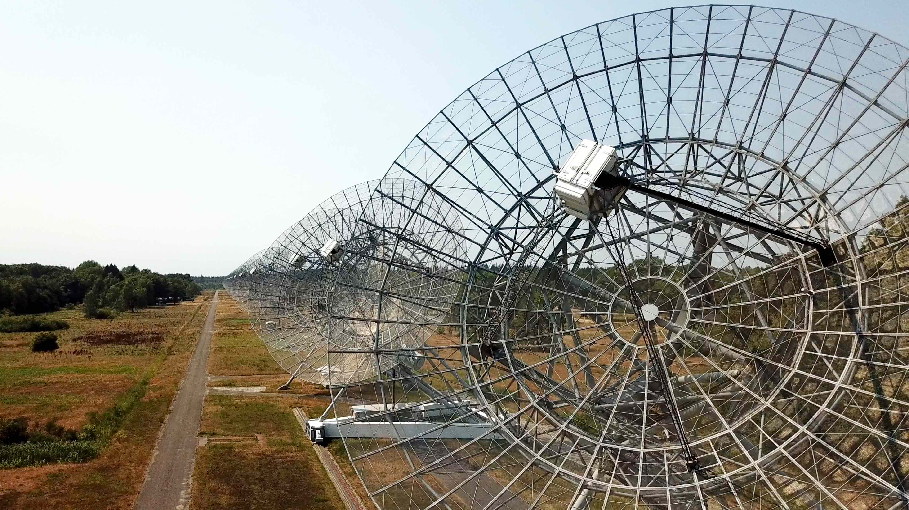
2 تلسكوب Westerbork Synthesis Radio Telescope
صُمم تلسكوب Westerbork Synthesis Radio Telescope (WSRT) وبُني في ستينيات القرن 1960 وافتُتح رسمياً في 1970. وكان من أوائل التلسكوبات التي استكشفت استخدام قياس التداخل المعتمد على الأطباق. ويمكن الاطلاع على عرض عام للتاريخ الثري للاكتشافات والابتكارات التقنية لهذا التلسكوب الراديوي خلال السنوات 50 الماضية في Strom et al. (2018).
يتكون WSRT من مصفوفة خطية شرق-غرب تضم 14 طبقاً متطابقاً قابلاً للتوجيه بقطر 25 متر على قاعدة استوائية، وبنسبة بؤرية f/D = 0.35 (الشكل 1). وبدلاً من سطح مصمت، تستخدم العواكس سطحاً شبكياً معدنياً لتقليل الوزن وحمل الرياح. ويقع المغذي في حجرة عند البؤرة الأولية لكل عاكس. ونظراً إلى أن WSRT مصفوفة خطية، تتطلب كل رصدة مدة كاملة قدرها 12 ساعة لاستغلال دوران الأرض في تصوير منطقة من السماء.
يستخدم نظام Apertif 12 من الأطباق 14 (انظر القسم 12.8)، في حين خُصص الطبقان المتبقيان لمشاريع أخرى، ومنها على سبيل المثال المشاركة في الشبكة الأوروبية لقياس التداخل ذي القاعدة الطويلة جداً (EVN). ومواقع عشرة أطباق ثابتة. أما الأربعة المتبقية فهي على سكة ويمكن إعادة تموضعها لتعديل تغطية uv للمقياس التداخلي، وإن كانت هذه الإمكانية غير مستخدمة حالياً. يبلغ أقصر خط قاعدة في المصفوفة 36 م، بينما يبلغ أطولها 2412 م. وعند تردد الرصد في Apertif يعطي ذلك استبانة مكانية تقارب 12 ثانية قوسية، حيث تمثل  ميل الرصدة. أما مجال رؤية طبق WSRT منفرد بمستقبل واحد فله عرض كامل عند نصف القيمة العظمى يبلغ نحو 35 دقيقة قوسية عند 1.4 GHz.
وقد اقترن تركيب نظام Apertif بعملية تجديد كبيرة (تنظيف وطلاء) للهياكل المعدنية التي تحمل الأطباق، كما استُبدلت الإلكترونيات التي تشغّل محركات توجيه الأطباق والمشفّرات الزاوية.
ميل الرصدة. أما مجال رؤية طبق WSRT منفرد بمستقبل واحد فله عرض كامل عند نصف القيمة العظمى يبلغ نحو 35 دقيقة قوسية عند 1.4 GHz.
وقد اقترن تركيب نظام Apertif بعملية تجديد كبيرة (تنظيف وطلاء) للهياكل المعدنية التي تحمل الأطباق، كما استُبدلت الإلكترونيات التي تشغّل محركات توجيه الأطباق والمشفّرات الزاوية.
3 تجارب مبكرة على مغذيات المصفوفات الطورية في WSRT
على مدى سنوات طويلة، استخدمت الهوائيات العاكسة ذات المغذيات المتعددة هوائيات تغذية كبيرة كهربائياً (مثل القرون)، مما وفر حزماً متباعدة كثيراً على السماء. وقد قدم بحث Ron Ekers وRick Fisher في أواخر الستينيات 1970 وأوائل السبعينيات 1980 فكرة أن الحقول الكهرومغناطيسية في المستوى البؤري لهوائي عاكس تحمل المعلومات اللازمة لتصحيح تشوهات سطح العاكس، و/أو لرصد مجال رؤية متصل أكبر بكثير من الحزمة الواحدة التي توفرها هوائيات التغذية التقليدية. غير أن تقنية الهوائيات اللازمة لأخذ عينات من الحقل الكهرومغناطيسي الكامل في المستوى البؤري، وخوارزميات المعالجة اللازمة لتشكيل حزم متعددة متقاربة أو متداخلة في عواكس عميقة نسبياً، لم تكن متاحة آنذاك. وفي منتصف التسعينيات 1990، بدأ ASTRON برنامجاً بحثياً باتجاه مصفوفة الكيلومتر المربع، الأمر الذي حفّز البحث في مصفوفات الفتحات الكثيفة، مثل المصفوفات الطورية ذات تباعد كهربائي أصغر من نصف طول موجي. ولم تُتابَع الهوائيات العاكسة ذات مغذيات المصفوفات بنشاط في برنامج ASTRON، لكنها حُددت بوصفها ”حلولاً هجينة”. ومن بين آخرين، واصل Rick Fisher التحقيق في مغذيات العواكس واسعة مجال الرؤية وكيف ينبغي معالجة خرج هذه المغذيات. وفي 1998 بدأ ASTRON تعاوناً مع Dan Schaubert (جامعة ماساتشوستس) حول مصفوفات من هوائيات الفتحات المتدرجة أو هوائيات ”Vivaldi”. وقد أظهرت هذه المصفوفات، القادمة أصلاً من تطبيقات دفاعية، مساحة فعالة ثابتة على مدى ترددي واسع (Schaubert et al. 2000, 2003). وإلى جانب استخدامها في مصفوفات الفتحات، أُدرك أن أخذ العينات الكثيف الذي تتيحه مصفوفة Vivaldi سيكون تحولاً حاسماً أيضاً عند وضعها مصفوفةَ هوائيات في المستوى البؤري لعَاكس (van Ardenne، 2020، مراسلة خاصة). وشكل هذا التطبيق، مقروناً بالبحث في سلوك الضجيج لمثل هذه المصفوفات (Weem 2001)، الأساس التقني للبرنامج البحثي الأوروبي ”FARADAY” (2001–2004). وقد برهن مشروع FARADAY تجريبياً أن مغذياً بمصفوفة طورية كثيفة الرص يمكنه تشكيل حزم متعددة متداخلة عالية الكفاءة على السماء باستخدام مصفوفة Vivaldi ومشكل حزم RF عند 2–5 GHz (Ivashina et al. 2002, 2004).
مدفوعاً بنجاح مشروع FARADAY، واصل مشروع PHAROS (Simons et al. 2006) بحث PAF في WSRT بهدف البرهنة على تشغيل PAF منخفض الضجيج. ولهذا الغرض صُمم أول PAF مبرد تبريداً عميقاً، يعمل في نطاق 4–8 GHz ويجمع 24 عنصراً نشطاً في 4 حزم RF عالية الكفاءة (13 عناصر لكل حزمة).
أكدت نتائج هذه التجارب المبكرة على PAF الإمكانات التي تتيحها PAF لتلسكوب WSRT. وكان عرض قدرات PAF على نطاق كامل يتطلب واجهة خلفية رقمية متقدمة عالية السرعة، مما أدى إلى تعريف سلسلة من النماذج الأولية المعروفة باسم DIGESTIF (van Cappellen & Bakker 2010). وقد قدم نظام DIGESTIF البرهان النهائي على تقنية PAF في نطاق L لصالح Apertif على WSRT.
4 الدوافع العلمية
يُجرى باستخدام Apertif مسحان تصويريان رئيسان: مسح تصويري واسع المساحة وضحل نسبياً (باستخدام رصدة واحدة قدرها 12 ساعة لكل توجيه) يغطي مساحة تصل إلى 2300 deg2، ومسح متوسط العمق (باستخدام ساعة لكل توجيه) يغطي ما يصل إلى 150 deg2. وسيقدّم كلا المسحين مجموعات بيانات للمتصل، والاستقطاب، والخطوط الطيفية. وقد أُتيحت البيانات الأولى من هذه المسوح للعامة11 1 http://hdl.handle.net/21.12136/B014022C-978B-40F6-96C6-1A3B1F4A3DB0 (انظر أيضاً Adams et al. قيد الإعداد). وبالإضافة إلى ذلك، يُجرى مسح للعابرات والمصادر النابضة في المجال الزمني يغطي 15 000 deg2.
اختيرت المناطق التي تغطيها مسوح Apertif أساساً بحيث يكون هناك تداخل جيد مع مناطق تتوافر لها بيانات طيفية وتصويرية مساعدة عامة مهمة، مثل بيانات Sloan Digital Sky Survey (SDSS)22 2 www.sdss.org، ومسح Panoramic Survey Telescope and Rapid Response System (Pan-STARRS)33 3 www.ifa.hawaii.edu/pswww، وتجربة Hobby-Eberly Telescope Dark Energy Experiment (HetDex)44 4 www.hetdex.org، ومشروع Herschel-Atlas55 5 www.h-atlas.org، ومسحي Mapping Nearby Galaxies at APO (MaNGA)66 6 www.sdss.org/surveys/manga وWHT Enhanced Area Velocity Explorer (WEAVE)77 7 www.ing.iac.es/weave/about.html الطيفيين. ومع ذلك، ولأن المسوح التصويرية تركز على علم المجرات خارج مجرتنا، تُتجنب المناطق ذات العرض المجري المنخفض. وهذا، مع حقيقة أن الحصول على تغطية كاملة باستخدام Apertif يتطلب رصداً على كامل مدى زاوية الساعة من –6 h إلى + 6 h، يفرض قيوداً قوية على موقع مناطق المسح عند جدولة أرصاد المسح بكفاءة. ونتيجة لذلك، لا تتوافر في جزء من المساحة التي تغطيها المسوح التصويرية إلا بيانات إضافية محدودة من نطاقات موجية أخرى. وبالإضافة إلى ذلك، تُجدول أرصاد المسح لتكون مدتها 11.5 h بدلاً من المدة القياسية 12 h، وذلك لإتاحة المعايرة وحركة التلسكوب بين الأرصاد.
نصف فيما يلي بإيجاز الأهداف الرئيسة للمسوح التصويرية. ويمكن العثور على مزيد من التفاصيل في Hess et al. (قيد الإعداد)، الذي يصف أيضاً جدولة الرصد والقيود المرتبطة بها.
4.1 مسوح H I وOH
اكتشف المسحان الحديثان لإصدار H i خارج المجرة، HIPASS وALFALFA، أكثر من 25 000 مجرة، وهما مورد رئيس للدراسات الإحصائية لخصائص H i في المجرات. غير أن هذين المسحين نُفذا بتلسكوبات أحادية الطبق، وعلى الرغم من حساسيتهما فإن استبانتهما الزاوية محدودة جداً، ومن ثم فإن الغالبية العظمى من الأجسام المكتشفة غير محلولة مكانياً. وتهدف مسوح Apertif لـ H i إلى الانتقال إلى الخطوة التالية بتوفير خصائص H i محلولة مكانياً لعدد كبير من المجرات، وذلك لدراسات بنية المجرات وتطورها.
كانت الدراسات المكانية التفصيلية المحلولة لإصدار H i في المجرات من المجالات العلمية الرئيسة في WSRT منذ سبعينيات القرن 1970، وقد أسهمت إسهاماً كبيراً في تحسين فهمنا للمجرات. غير أن هذه الدراسات، رغم نجاحها الكبير، ظلت مقتصرة على أرصاد موجهة لعينات صغيرة نسبياً من المجرات في الكون القريب، ومن أحدث أمثلتها مسوح WHISP (van der Hulst et al. 2001) وAtlas3D (Serra et al. 2012) وHALOGAS (Heald, G. et al. 2011).
يتمثل هدف Apertif في توسيع مثل هذه الدراسات التصويرية إلى عينات أكبر بكثير ومختارة عشوائياً من المجرات في الكون القريب. وهذا ممكن بفضل سرعة المسح المحسنة والاستبانة المكانية العالية والحساسية العالية في Apertif. إن حد كشف كثافة العمود 5- الذي تبلغه مكعبات بيانات المسح واسع المساحة عند الاستبانة الكاملة ولعرض ملف قدره 20 km s-1 هو
الذي تبلغه مكعبات بيانات المسح واسع المساحة عند الاستبانة الكاملة ولعرض ملف قدره 20 km s-1 هو  1–2 (بحسب الميل)، ويقع مباشرة دون للمسح متوسط العمق. وبسبب التصميم الخاص لمصفوفة WSRT، تكون حساسيات كثافة العمود عند استبانة أدنى قليلاً () أفضل بنحو عامل 3. وتتشابه حساسية واستبانة مسح H i واسع المساحة في Apertif مع مسح H i واسع المساحة المخطط له باستخدام Australia Square Kilometre Array Pathfinder (ASKAP، Koribalski et al. 2020).
1–2 (بحسب الميل)، ويقع مباشرة دون للمسح متوسط العمق. وبسبب التصميم الخاص لمصفوفة WSRT، تكون حساسيات كثافة العمود عند استبانة أدنى قليلاً () أفضل بنحو عامل 3. وتتشابه حساسية واستبانة مسح H i واسع المساحة في Apertif مع مسح H i واسع المساحة المخطط له باستخدام Australia Square Kilometre Array Pathfinder (ASKAP، Koribalski et al. 2020).
من الأهداف الرئيسة لمسح إصدار H i فهم العمليات التي تتحكم في إزالة الغاز وتراكمه في المجرات على اختلاف أنواعها وأحجامها، ودور ذلك في تطور المجرات على نحو أفضل (انظر مثلاً Sancisi et al. 2008 للمراجعة). ويتطلب ذلك حل خصائص H i مكانياً في المجرات والغاز المحيط بها في بيئات مختلفة، بما في ذلك المناطق المعزولة مثل الفجوات، والمجموعات العديدة من المجرات الموجودة في الكون القريب، وأشد كثافات المجرات تطرفاً في العناقيد. وتعتمد الخصائص المرصودة للمجرات بشدة على البيئة الكونية التي تقع فيها، مما يعني أن البيئة تؤدي دوراً مهماً أثناء تشكل المجرة وكذلك خلال تطورها اللاحق. وتؤثر آليات فيزيائية متنوعة في نمو المجرات وتشكلها، مثل التراكم، والاندماج، والتفاعلات المدية، والتجريد بضغط الاندفاع. وتتميز دراسات إصدار H i المحلول بحساسيتها الخاصة لتتبع هذه العمليات، ويُعرض مثال على مثل هذه الحالة التي عُثر عليها باستخدام Apertif في الشكل 2. وسيتيح توفر مثل هذه المعلومات لعدد كبير من المجرات في بيئات مختلفة معلومات جديدة مهمة عن كيفية تطور المجرات.
ومن الموضوعات الرئيسة الأخرى لمسح Apertif لـ H i البحث عن أصغر المجرات الغنية بالغاز في الكون المحلي. فهذه الأجسام مجسات حساسة لحدود تشكل المجرات. ولا يُعرف إلا عدد قليل جداً من مثل هذه الأجسام (مثل Leo T، Ryan-Weber et al. 2008، وLeo P، Giovanelli et al. 2013). وتُهيمن H i هيمنة كاملة على الكتلة المرئية لهذه الأنظمة، ولا يوجد فيها إلا عدد قليل من النجوم. وربما يكون ذلك نتيجة كون مثل هذه المجرات صغيرة إلى حد يكاد يمنعها من ضغط الغاز وتبريده لتكوين النجوم، مما يشير إلى وجود حد أدنى لحجم المجرة القادرة على تكوين النجوم. وتعتمد كيفية تشكل هذه الأجسام وتطورها، وما إذا كان هناك فعلاً حد أدنى للكتلة في المجرات الحاملة للنجوم، اعتماداً حاسماً على الظروف التفصيلية للمادة العادية والمظلمة في الكون المبكر، كما يختلف العدد المتوقع لمثل هذه المجرات الصغيرة الغنية بالغاز في الكون المحلي اختلافاً كبيراً بين نظريات تشكل المجرات المختلفة. لذلك من المهم تحسين معرفتنا الإحصائية بحدوث هذه الأنظمة. وتلائم المساحة الكبيرة التي تغطيها مسوح H i على نحو خاص إجراء جرد لهذه الأجسام في الكون المحلي، مما سيوفر قيوداً مهمة على نظريات تشكل المجرات.
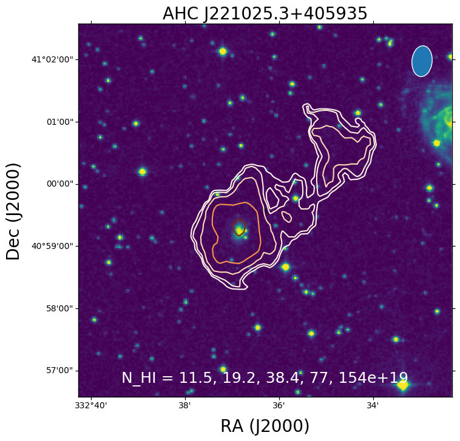
ستوفر المسوح التصويرية أيضاً معلومات عن H i المرصود امتصاصاً أمام مصادر متصل قوية نسبياً. ونظراً إلى التردد (ومن ثم الانزياح الأحمر)، فإن Apertif مناسب خصوصاً لتتبع H i امتصاصاً في المناطق حول النواة في النوى المجرية النشطة (AGN؛ انظر Morganti & Oosterloo 2018 للمراجعة). ويمكن لوجود H i وحركياته في هذه الأجسام أن يتتبعا الأقراص حول النواة، والغاز المتراكم والمغذي للثقب الأسود فائق الكتلة المركزي، وكذلك وجود تدفقات غازية خارجة يمكن أن تدفعها النفاثات الراديوية (انظر مثلاً Morganti et al. 2005). ويمكن لهذه الأخيرة أن تقدم معلومات عن كيفية تأثير AGN في تطور المجرات. وقد قدم WSRT بالفعل إسهامات مهمة في مثل هذه الدراسات (مثلاً Morganti et al. 2005; Geréb et al. 2015)، كما وفر أحد أكبر المسوح المتاحة لامتصاص H i في الكون القريب (Maccagni et al. 2017). غير أن هذه الدراسات تستند إلى أرصاد موجهة لمصادر راديوية معروفة الانزياح الأحمر. ويمكن لمثل هذا الاختيار المسبق أن يُدخل انحيازات في النتائج (انظر مثلاً Chowdhury et al. 2020). ومن ثم فإن الخطوة الرئيسة التي سيحققها Apertif هي أن يوفر بدلاً من ذلك جرداً عشوائياً لوجود H i امتصاصاً من دون هذا الاختيار القبلي للأهداف. وبذلك سيكون من الممكن تفحص مصادر المتصل الراديوية المكتشفة بواسطة Apertif بحثاً عن الامتصاص بصرف النظر عن خصائص المصدر الأخرى.
تعتمد حساسية امتصاص H I على شدة المتصل الراديوي الخلفي وعلى العمق البصري لخط H I، والذي يعتمد بدوره على درجة حرارة اللف وكثافة عمود غاز H I.
وسيبلغ مسح H i الضحل عمقاً بصرياً قدره (لاستبانة سرعة 30 km s-1) أمام مصادر متصل أقوى من  100 mJy beam-1، وهو ملائم جيداً لتتبع الهيدروجين الذري المتعادل في النوى المجرية النشطة (انظر مثلاً Morganti & Oosterloo 2018). وبالنسبة إلى المصادر الأكثر سطوعاً، سيتيح Apertif أيضاً البحث عن امتصاص عريض وضحل، مثل الامتصاص الدال على وجود تدفقات خارجة سريعة (Morganti et al. 2005; Geréb et al. 2015).
100 mJy beam-1، وهو ملائم جيداً لتتبع الهيدروجين الذري المتعادل في النوى المجرية النشطة (انظر مثلاً Morganti & Oosterloo 2018). وبالنسبة إلى المصادر الأكثر سطوعاً، سيتيح Apertif أيضاً البحث عن امتصاص عريض وضحل، مثل الامتصاص الدال على وجود تدفقات خارجة سريعة (Morganti et al. 2005; Geréb et al. 2015).
سيأتي القيد الرئيس من البيئة المعادية نسبياً من حيث تداخل الترددات الراديوية عند الترددات المنخفضة التي يغطيها Apertif (أي دون 1290 MHz، انظر القسم 6). ومن المتوقع أن يقدم البحث عن امتصاص H i حتى بضع مئات من الاكتشافات الجديدة للغاز المرتبط بالمجرات الراديوية، مما يوسع كثيراً أجزاء فضاء المعلمات لـ AGN الراديوية التي يمكن فيها دراسة وجود امتصاص H i. وتناقش المقارنة مع مسوح امتصاص H i الأخرى من رواد SKA وأسلافه في Maccagni et al. (2017) وMorganti & Oosterloo (2018).
وأخيراً، يتيح Apertif أيضاً إجراء مسوح واسعة المساحة مثيرة للاهتمام للميغاماازرات OH، ولا سيما تطورها مع الانزياح الأحمر. تصدر الخطوط الطيفية الرئيسة لميغاماازرات OH عند 1665 و1667 MHz، مع خطين تابعين عند 1612 و1720 MHz. لذلك، وبالنظر إلى نطاق الرصد في Apertif، يمكن كشف الخطوط الرئيسة حتى انزياح أحمر . توجد ميغاماازرات OH في المجرات تحت الحمراء اللامعة وفائقة اللمعان، وترتبط باندماجات المجرات ونشاط تشكل النجوم النووي الشديد فيها. وهذا، مع حقيقة أن الانزياح الأحمر لميغاماازر OH يأتي تلقائياً من الكشف، يجعلها متتبعاً مفيداً لتاريخ الاندماج في الكون. وبالإضافة إلى ذلك، يتيح نطاق الرصد العريض في Apertif قياس نسب الخطوط بين الخطوط الرئيسة والتابعة في مجموعة فرعية من المصادر، مما يعطي معلومات مفيدة عن الظروف الفيزيائية في مناطق تشكل النجوم. وقد نُشرت النتائج المتعلقة بأول ميغاماازر OH عُثر عليه باستخدام Apertif (Hess et al. 2021).
4.2 مسوح المتصل
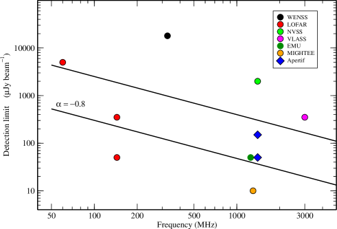
 لعدد من مسوح المتصل الراديوية ومسوح Apertif. تشير الخطوط إلى دليل طيفي نموذجي للمصادر الراديوية خارج المجرة. أُخذ الضجيج لمسح EMU من Norris (2017). وتشير نقطتا LOFAR High-Band Antenna (HBA) إلى LoTSS (Shimwell et al. 2019) وإلى الحقول العميقة لـ LOFAR (Tasse et al. 2021). وتغطي الأخيرة مساحات محدودة (من بضع عشرات من الدرجات المربعة). أما مسح MIGHTEE، فعلى الرغم من عمقه الكبير، فإنه لا يغطي إلا عدداً محدوداً من الدرجات المربعة.
لعدد من مسوح المتصل الراديوية ومسوح Apertif. تشير الخطوط إلى دليل طيفي نموذجي للمصادر الراديوية خارج المجرة. أُخذ الضجيج لمسح EMU من Norris (2017). وتشير نقطتا LOFAR High-Band Antenna (HBA) إلى LoTSS (Shimwell et al. 2019) وإلى الحقول العميقة لـ LOFAR (Tasse et al. 2021). وتغطي الأخيرة مساحات محدودة (من بضع عشرات من الدرجات المربعة). أما مسح MIGHTEE، فعلى الرغم من عمقه الكبير، فإنه لا يغطي إلا عدداً محدوداً من الدرجات المربعة.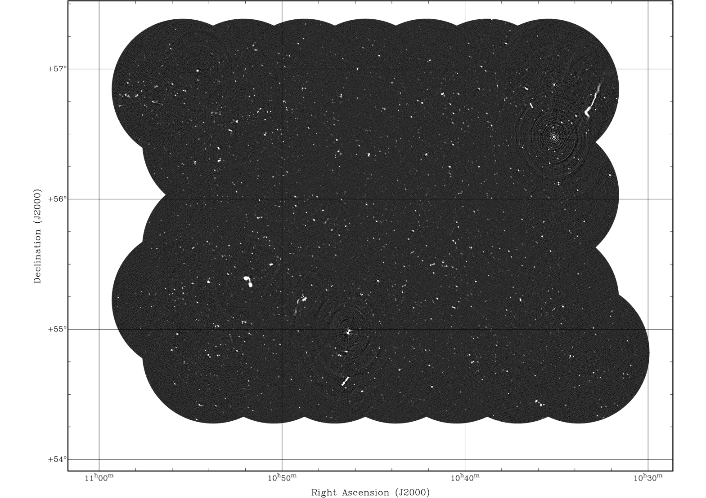
 Jy beam-1، باستثناء المناطق القريبة من بضعة مصادر شديدة السطوع حيث ما تزال آثار المعايرة ظاهرة. انظر القسم 12 لمزيد من التفاصيل.
Jy beam-1، باستثناء المناطق القريبة من بضعة مصادر شديدة السطوع حيث ما تزال آثار المعايرة ظاهرة. انظر القسم 12 لمزيد من التفاصيل.تُعد الصور وفهارس المصادر الناتجة من مسوح المتصل الراديوية واسعة المساحة، مثل تلك المذكورة في المقدمة، من أهم قواعد البيانات لفروع كثيرة من علم الفلك. وتضيف مسوح Apertif للمتصل إضافة مهمة إلى هذه القائمة. وتُعرض مقارنة بين مسوح مختلفة في الشكل 3. ستوفر مسوح المتصل باستخدام Apertif صوراً وفهارس عند 1.4 GHz باستبانة قدرها ، وتصل، في حالة المسح واسع المساحة، إلى مستوى ضجيج أخفض بنحو 20 مرات من NVSS وباستبانة زاوية أعلى 3 مرات (انظر القسم 12.2). ويُعرض مثال للصورة المستخرجة من توجيه Apertif واحد في الشكل 4.
يمكن استخدام بيانات مسوح Apertif للمتصل لمعالجة طيف واسع من الموضوعات مثل تطور المجرات، وتعداد المصادر، ودورة حياة المجرات الراديوية، والخصائص المستقطبة للمصادر الراديوية. وبالإضافة إلى ذلك، وبالنسبة إلى المجرات المكونة للنجوم، سيتيح الجمع بين المتصل الراديوي وإصدار H i، اللذين يُحصل عليهما آنياً، الربط بين تشكل النجوم وخصائص الغاز.
ومن الجوانب الفريدة التآزر مع مسوح LOFAR، سواء LoTTS عند 150 MHz (Shimwell et al. 2019) أو مسح LOFAR عند 60 MHz (de Gasperin et al. 2021)، لأن كلاً من LOFAR وApertif يرصدان السماء الشمالية، وهناك تداخل كبير بين مناطق مسحيهما. ومن حسن الحظ أن الحساسيات النسبية لـ LOFAR وApertif توافق طيف المصادر الراديوية النموذجية، كما أن الاستبانات المكانية متشابهة (انظر الشكل 3). وسيكون الجمع بين Apertif وLOFAR مفيداً خصوصاً في تحديد المصادر الراديوية ودراستها في المراحل القصوى من تطورها، مثل المصادر المتبقية والمصادر الراديوية المعاد تشغيلها، وإصدار البقايا والهالات المنتشر في عناقيد المجرات. وبالنسبة إلى المصادر المحلولة، سيعطي ذلك مباشرة خرائط للدليل الطيفي والانحناء الطيفي، وهي مصدر غني جداً للمعلومات اللازمة لتقييد كثير من المعلمات والعمليات الفيزيائية، وأدوات قوية لدراسة المصادر الراديوية ذات الأطياف الراديوية المتطرفة.
تُعرض دراسة برهان مفهوم تستند إلى الجمع بين بيانات Apertif وصور LOFAR في Morganti et al. (2020). وقد عُثر على عدد مهم من المصادر الراديوية في مرحلتي البقايا وإعادة التشغيل. وقد وفر ذلك قيوداً جديدة على المقاييس الزمنية لدورات نشاط AGN، وأكد نتائج من المحاكاة العددية. ونظراً إلى أن ذلك استند إلى توجيه Apertif واحد فقط في منطقة Lockman Hole، فإنه يبين بالفعل إمكانات الجمع بين الصور الراديوية عند 150 و1400 MHz.
ستبلغ صور المتصل من المسح متوسط العمق حد الالتباس، وهذا مثير للاهتمام خصوصاً، بين موضوعات أخرى، لدراسة تعداد المصادر الراديوية. وقد أُجريت دراسات مشابهة باستخدام WSRT (مثلاً Prandoni et al. 2018; Bonato et al. 2020)، لكن لمساحات محدودة فقط. وترتبط تعداد المصادر الراديوية ارتباطاً وثيقاً بخصائص تطور المصادر (Padovani 2016; Prandoni et al. 2018; Norris 2017)، وغالباً ما تكون مرتبطة بالنهاية الخافتة من جمهرة المصادر. وحتى الآن، كانت الأرصاد العميقة التي تدرس هذه الجمهرة مقتصرة على حقول صغيرة يمكن أن تؤثر فيها تغيرات الكثافة المحلية في النتائج. وستتيح المساحة الكبيرة لمسوح Apertif التخفيف من هذه التأثيرات المحلية.
يحمل إصدار المتصل الراديوي المستقطب معلومات عن المجال المغناطيسي داخل المصادر المرصودة وعلى طول خط النظر بين الراصد والمصادر نفسها. ويمكن استرجاع مركبتي المجال المغناطيسي (المتعامدة مع خط النظر والموازية له) باستخدام زاوية الاستقطاب المرصودة ومقياس الدوران على التوالي. وتتيح هاتان الكميتان إعادة بناء التشكل ثلاثي الأبعاد للمجال المغناطيسي. وتعتمد دقة خصائص المجال المغناطيسي المعاد بناؤها على عدد المصادر المستقطبة المكتشفة في كل مساحة من السماء. ويستند أحدث إعادة بناء لبنية المجال المغناطيسي في درب التبانة بواسطة Oppermann et al. (2012) إلى NVSS، ومن ثم فهو محدود بكثافة عدد المصادر المكتشفة ( 1/deg2؛ Taylor et al. 2009). وتظهر التحليلات الأولى لتوجيهات من مسح Apertif واسع المساحة كثافات عددية قدرها 30-40 مصادر/deg2، مما يتيح إعادة بناء محسنة للمجال المغناطيسي في درب التبانة ولعدد من الأجسام الكبيرة القريبة خارج المجرة.
1/deg2؛ Taylor et al. 2009). وتظهر التحليلات الأولى لتوجيهات من مسح Apertif واسع المساحة كثافات عددية قدرها 30-40 مصادر/deg2، مما يتيح إعادة بناء محسنة للمجال المغناطيسي في درب التبانة ولعدد من الأجسام الكبيرة القريبة خارج المجرة.
ومن المعلومات الإضافية عن المجال المغناطيسي على طول خط النظر وفي المصادر المستقطبة نفسها طيفها المستقطب. ومن المعروف أن معظم المصادر تصبح مزالة الاستقطاب بشدة دون 1 GHz. وتشير معظم النماذج والحسابات التحليلية إلى اعتماد من إلى لدرجة الاستقطاب على الطول الموجي  (Sokoloff et al. 1998)، غير أن الأطياف الدقيقة لم تُقَس إلا لعدد قليل من المصادر (Schnitzeler et al. 2015). ويتيح تآزر مسح LOTSS مع مسح Apertif واسع المساحة أول تحليل إحصائي للطيف المستقطب للمصادر الراديوية. وبسبب إزالة الاستقطاب القوية عند أطوال موجية LOFAR، ستُكتشف جميع المصادر المستقطبة المكتشفة في LOTSS بواسطة Apertif. وسيتيح الجمع بين هذه المعلومات، لأول مرة، دراسة آليات إزالة الاستقطاب وخصائص المجال المغناطيسي المسببة لها.
(Sokoloff et al. 1998)، غير أن الأطياف الدقيقة لم تُقَس إلا لعدد قليل من المصادر (Schnitzeler et al. 2015). ويتيح تآزر مسح LOTSS مع مسح Apertif واسع المساحة أول تحليل إحصائي للطيف المستقطب للمصادر الراديوية. وبسبب إزالة الاستقطاب القوية عند أطوال موجية LOFAR، ستُكتشف جميع المصادر المستقطبة المكتشفة في LOTSS بواسطة Apertif. وسيتيح الجمع بين هذه المعلومات، لأول مرة، دراسة آليات إزالة الاستقطاب وخصائص المجال المغناطيسي المسببة لها.
ترد معلومات عن تطور المجال المغناطيسي على المقاييس الزمنية الكونية في تعداد المصادر المستقطبة. وتقتصر هذه التحليلات حالياً على بيانات NVSS الواسعة والضحلة (Mesa et al. 2002; Tucci et al. 2004; Stil et al. 2014)، أو على حقول صغيرة تبلغ مساحتها بضع درجات مربعة بحساسيات مماثلة لما يمكن الحصول عليه باستخدام Apertif (Taylor et al. 2007; Grant et al. 2010; Subrahmanyan et al. 2010; Hales et al. 2014). وتُظهر جميع هذه الدراسات الأخيرة ازدياد درجة الاستقطاب نحو المصادر الأخفت، لكن التشتت يبلغ رتبة بضعة أضعاف في الاستقطاب الكسري وعدد المصادر المكتشفة. ومن المرجح أن تتأثر القياسات بقلة عدد المصادر المكتشفة وبالتغيرات المحلية الناجمة عن صغر مساحة الرصد. وستتيح مسوح Apertif لنا تتبع عدد كافٍ من المصادر المستقطبة ( ) على عدة آلاف من الدرجات المربعة حتى كثافات فيض تبلغ عدة عشرات من Jy. وهذا يتيح لأول مرة توصيفاً دقيقاً للسماء المستقطبة. ولدراسة تطور المجال المغناطيسي عبر المقاييس الزمنية الكونية، تلزم معلومات عن الانزياحات الحمراء للمصادر. ويتيح تآزر مسح WEAVE مع مسحي Apertif وLOFAR الراديويين، مقترناً بعدد المصادر التي سيكشفها Apertif، دراسة تعداد المصادر المستقطبة المعتمدة على الانزياح الأحمر. ويمثل ذلك خطوة كبيرة في تحديد تطور المجال المغناطيسي حتى انزياحات حمراء قدرها .
) على عدة آلاف من الدرجات المربعة حتى كثافات فيض تبلغ عدة عشرات من Jy. وهذا يتيح لأول مرة توصيفاً دقيقاً للسماء المستقطبة. ولدراسة تطور المجال المغناطيسي عبر المقاييس الزمنية الكونية، تلزم معلومات عن الانزياحات الحمراء للمصادر. ويتيح تآزر مسح WEAVE مع مسحي Apertif وLOFAR الراديويين، مقترناً بعدد المصادر التي سيكشفها Apertif، دراسة تعداد المصادر المستقطبة المعتمدة على الانزياح الأحمر. ويمثل ذلك خطوة كبيرة في تحديد تطور المجال المغناطيسي حتى انزياحات حمراء قدرها .
4.3 مسوح المجال الزمني
يمكن رصد كثير من الظواهر العابرة والمتغيرة زمنياً في السماء الراديوية،
بما في ذلك التوهجات الراديوية اللاحقة للمستعرات العظمى واندفاعات أشعة غاما وأحداث الموجات الثقالية،
على مقاييس زمنية قدرها  شهر. إن مجال الرؤية الواسع والحساسية العالية يجعلان Apertif أداة قوية للعثور على مثل هذه العوابـر التصويرية (Boersma et al. 2021).
وتشمل العوابـر الأسرع اندفاعات راديوية شمسية تدوم ثواني إلى دقائق، ونبضات راديوية من النجوم النابضة المجرية، بعضها قصير إلى حد الميكروثواني. غير أن أحدث إضافة وأكثرها إثارة إلى قائمة عوابـر المجال الزمني هذه كانت اكتشاف نبضات راديوية ساطعة (
شهر. إن مجال الرؤية الواسع والحساسية العالية يجعلان Apertif أداة قوية للعثور على مثل هذه العوابـر التصويرية (Boersma et al. 2021).
وتشمل العوابـر الأسرع اندفاعات راديوية شمسية تدوم ثواني إلى دقائق، ونبضات راديوية من النجوم النابضة المجرية، بعضها قصير إلى حد الميكروثواني. غير أن أحدث إضافة وأكثرها إثارة إلى قائمة عوابـر المجال الزمني هذه كانت اكتشاف نبضات راديوية ساطعة ( Jy) وقصيرة (
Jy) وقصيرة ( ms) ذات أصل خارج مجري بواسطة Lorimer et al. (2007)، وهي مصادر تُعرف الآن باسم اندفاع راديوي سريعs (FRBs).
ms) ذات أصل خارج مجري بواسطة Lorimer et al. (2007)، وهي مصادر تُعرف الآن باسم اندفاع راديوي سريعs (FRBs).
منذ اكتشافها في 2007، أصبحت دراسة FRBs مجالاً متطوراً بحد ذاته، مع الإبلاغ الآن عن أكثر من 100 مصدر (انظر Petroff et al. 2019, للمراجعة). ولم تُعرف بعد أصول هذه الاندفاعات الراديوية، غير أن النظريات التي تستدعي نجوماً نيوترونية فتية شديدة المغنطة، وثقوباً سوداء، والانفجارات المرافقة لولادتها، اكتسبت زخماً (للمراجعة النظرية، انظر Platts et al. 2019). وقد رُصدت مجموعة فرعية من مصادر FRB المنشورة وهي تتكرر، مما يدعم نظريات الأسلاف المستقرة أو غير الكارثية (Spitler et al. 2016; CHIME/FRB Collaboration et al. 2019; Fonseca et al. 2020).
اكتُشفت أولى FRBs مصادفةً في مسوح السماء كلها للنجوم الراديوية النابضة. وتتطلب الأنظمة اللازمة للعثور على FRBs استبانة زمنية عالية (ms) وعرض نطاق كسرياً متواضعاً على الأقل (). وقد أثبت Berkeley Parkes Swinburne Recorder (BPSR)، الذي يستخدم برمجيات البحث عن النبضات المفردة على وحدة معالجة الرسومياتs في تلسكوب Parkes الراديوي، فعالية خاصة في عمليات البحث المبكرة عن FRB (Keith et al. 2010; Thornton et al. 2013; Champion et al. 2016).
تزايد تطوير عتاد وبرمجيات مخصصة للبحث بهدف رئيس هو اكتشاف أعداد كبيرة من مصادر FRB الجديدة (وفي بعض الحالات تحديد مواقعها بدقة)، مع هدف معلن في كثير منها هو اكتشاف نبضات FRB جديدة في الزمن الحقيقي. وتستخدم غالبية هذه الأنظمة GPUs ومصفوفة بوابات قابلة للبرمجة ميدانياًs وعتاداً متخصصاً آخر على عناقيد حوسبة مخصصة لتنفيذ أكثر المهام كلفة حاسوبياً، مثل إزالة التشتت (Siemion et al. 2012; Caleb et al. 2016; CHIME/FRB Collaboration et al. 2018; Law et al. 2018).
على الرغم من التقدم السريع في هذا المجال في السنوات الأخيرة، لا تزال تحديات كثيرة قائمة في فهم ظاهرة FRB. وعلى الرغم من المعدل العالي لـ FRBs على كامل السماء، البالغ عدة آلاف في اليوم (Lawrence et al. 2017)، لم تكن كثير من الأجهزة المبكرة (مثل Parkes) تُبلغ عن حدث جديد إلا كل بضعة أشهر بسبب محدودية مجال الرؤية (FoV) الملازمة للأطباق المنفردة أو المستقبلات المنفردة. ولا تزال بعض أبسط خصائص جمهرة FRB مجهولة؛ فقد كان من الصعب تحديد التوزيعات الكامنة للجمهرة في مدة النبضة، وقياس التشتت، والمسافة، والطاقة، والبنية الطيفية. ويرجع ذلك جزئياً إلى صغر حجم العينة، ولكنه يرجع أيضاً جزئياً إلى عدم كفاية الاستبانة الآلية في حالة توزيعات مدة النبضة وقياس التشتت والبنية الطيفية.
تمكنت أبحاث حديثة من حفظ بيانات تلتقط معاملات ستوكس لـ FRBs جديدة وتفسير خصائص الاستقطاب لاندفاعات منفردة لجزء متزايد من الجمهرة. وقد شوهد كثير من هذه الاندفاعات وهو مستقطب خطياً بدرجة عالية (Michilli et al. 2018; Bannister et al. 2019; Fonseca et al. 2020)، وكشف تحليل الاستقطاب الخطي في بعض الحالات عن وجود وسط مغناطيسي قوي محلي لمصدر FRB (Michilli et al. 2018). وقد يكون الاستقطاب بالغ الأهمية لفهم الإصدار والبيئة المحلية لـ FRBs. غير أن حفظ معلومات الاستقطاب يتطلب من المسح إما الاحتفاظ ببيانات الاستقطاب الكامل لكل أرصاد المسح لتحليلها بعد الكشف، أو البحث في البيانات في الزمن الحقيقي بينما تبقى بيانات الاستقطاب الكامل في مخزن ذاكرة، لتُقتطع وتُحفظ عند حدوث اندفاع. ويأتي كل خيار بمجموعة خاصة من التحديات في تخزين البيانات وقدرة معالجة البيانات في الزمن الحقيقي، على التوالي.
رُصدت مجموعة فرعية من جمهرة FRB وهي تتكرر، منتجة اندفاعات متعددة عند قياس التشتت نفسه (أو قياس قريب جداً منه)، مع وجود مصادر رُصد تكرارها الآن على مدى سنوات كثيرة (Spitler et al. 2016; Oostrum et al. 2020). ويلزم تتبع مستمر لمصدر FRB لاكتشاف التكرارات في نهاية المطاف. غير أنه لم يُنشر في الوقت الحاضر إلا 20 مصادر متكررة، ولا تزال النسبة الكلية للمصادر المتكررة في جمهرة FRB مجهولة. وما إذا كانت جميع FRBs تتكرر في نهاية المطاف سؤال مفتوح، يُعالَج حالياً بجهود رصدية (Fonseca et al. 2020) وبالنمذجة (Gardenier et al. 2019, 2021).
إضافة إلى تحديات فهم الجمهرة أو الجُمهرات الكامنة لـ FRBs وخصائصها الفيزيائية وأسلافها، توجد أيضاً تحديات تقنية تتعلق باكتشافها على نطاق واسع. فمع الجيل التالي من التلسكوبات مثل مصفوفة الكيلومتر المربع (SKA)، لن يعود من الممكن حفظ بيانات المسح الخام لإجراء عمليات بحث غير متصلة (Macquart et al. 2015). وبدلاً من ذلك، سيلزم تحديد المصادر الجديدة في الزمن الحقيقي لالتقاط بيانات التلسكوب لتحليلها لاحقاً. ويجري تطوير تقنيات وخطوط معالجة آلية جديدة للبحث عن FRB تستفيد من أدوات التصنيف والتعلم الآلي استعداداً لهذا الواقع المستقبلي (Connor & van Leeuwen 2018).
لمعالجة جميع هذه التحديات، بدأت جهود بحث جديدة عن FRB تستخدم على نحو متزايد مقاييس التداخل لمسح السماء (Caleb et al. 2017; Bannister et al. 2017; Maan & van Leeuwen 2017; Law et al. 2018; CHIME/FRB Collaboration et al. 2018). وتتمتع مقاييس التداخل، التي تجمع ترابطياً أو لا ترابطياً إشارات من عناصر أو أطباق أصغر كثيرة، بميزة FoV فوري كبير. وقد أدت التطورات التقنية الحديثة إلى مستقبلات جديدة مثل مغذٍ بمصفوفة طوريةs، تضع كثيراً من ثنائيات القطب في بؤرة كل طبق من مصفوفة تلسكوبية.
لطالما كان الحساب أحد أكبر تحديات علم الفلك الراديوي التداخلي. فتشكيل الحزم داخل FoV التلسكوب يتطلب مُرابِطاً قوياً لجمع الإشارات من جميع العناصر في الطور. ويصبح ذلك أصعب عندما تُجمع أنظمة PAF متعددة العناصر لتشكيل حزم على السماء. كما أن تشكيل حزم مترابطة والبحث في التيار الزمني لكل منها عن إشارات راديوية نبضية مثل FRBs يضيف تحدياً تقنياً إضافياً.
أتاحت وحدات المعالجة الأسرع والأكثر مرونة المتوافرة في السنوات الأخيرة تشكيل مزيد من الحزم والبحث فيها بسرعة، وفي بعض الحالات في الزمن الحقيقي. ولا تزال هذه العمليات تتطلب عناقيد حوسبة كبيرة للتعامل مع الكميات الهائلة من البيانات المتدفقة من التلسكوب وتوزيعها على عقد معالجة كثيرة. وتضم الآن كثير من جهود البحث عن FRB، بما في ذلك عمليات البحث الموصوفة هنا باستخدام Apertif، عناقيد حوسبة مخصصة في الموقع للبحث في البيانات في الزمن الحقيقي عن النبضات.
من خلال الجمع بين عناصر مختلفة من المصفوفة والمغذي، يمكن أخذ عينات من FoV الأكبر لمصفوفة تداخلية بواسطة حزم أصغر كثيرة، مما يتيح تحديداً أكثر دقة بكثير لموقع أي مصدر جديد. وتعتمد قدرة تحديد الموقع الفورية لمقياس التداخل على طول أطول خط قاعدة، وهو في حالة WSRT طويل في اتجاه شرق-غرب لكنه قصير جداً في اتجاه شمال-جنوب، غير أن تحديداً أكثر دقة للموقع ممكن للإشارات الأكثر سطوعاً التي تظهر في عدة حزم، كما بُرهن مثلاً في Connor et al. (2020).
كما تُعد عمليات البحث في الزمن الحقيقي حاسمة في البحث عن إصدار فوري من مصدر FRB في أنظمة أطوال موجية أخرى، وكذلك عند ترددات راديوية أخرى. ولم تنجح عمليات البحث متعددة الأطوال الموجية السابقة عن إصدار مرتبط عقب اكتشافات FRB في الزمن الحقيقي. غير أن هذه الجهود المبكرة حفّزت متابعات بعد عدة ساعات من FRB الأولي (Petroff et al. 2015).
لا يزال غير معروف مدى عرض النطاق الذي يمكن أن تمتلكه نبضات FRB، وإلى أي ترددات راديوية منخفضة يمكن كشفها. وفي أرصاد FRB المتزامنة بين Apertif وLOFAR، شوهد إصدار FRB الآن حتى قاع نطاق LOFAR HBA (Pastor-Marazuela et al. 2021). وتصبح عمليات البحث المستحثة عند مثل هذه الترددات المنخفضة، حتى بالنسبة إلى FRBs وحيدة الحدوث، ممكنة بفضل التأخير الذي يسببه التشتت بين النجمي بين أزمنة وصول 1.4 GHz و150 MHz لـ النبضة نفسها. واستغلال هذا التأخير، الذي هو من رتبة دقائق (Maan & van Leeuwen 2017)، يتيح دراسات مثل آلية إصدار FRB وبيئة البلازما المحلية للمضيف. ومع ذلك تتطلب مثل هذه عمليات البحث المتزامنة تصنيفاً وإنذاراً في الزمن الحقيقي.
يجب أن تجمع البنية الرصدية المثالية لمعالجة هذه التحديات كلها بين FoV كبير واستبانة مكانية عالية على السماء، لتحقيق معدل عالٍ من FRBs محددة الموقع. ولمعالجة أكبر عدد ممكن من مجاهيل الجمهرة، ينبغي أيضاً أن يكون مثل هذا النظام قادراً على حل FRBs في الزمن والتردد والتقاط معلومات الاستقطاب. وقد صُمم نظام Apertif للعابرات الراديوية (ARTS) مع وضع هذه الاعتبارات في الحسبان. يوفر Apertif FoV فورياً كبيراً، بينما يتيح مقياس التداخل WSRT استبانة مكانية دقيقة. ويعالج ARTS عرض نطاق قدره 300 MHz متمركزاً عند 1370 MHz.
يعالج ARTS أيضاً بعض التحديات أعلاه من خلال الجمع بين طيف من الابتكارات: أولاً، توفير استبانة زمنية وترددية عاليتين على مدى ترددي من 1220 MHz إلى 1520 MHz؛ ثانياً، القدرة على التقاط بيانات استقطاب كاملة ستوكس باستخدام خط معالجة جديد للبحث عن FRB؛ وثالثاً، مصنف تعلم آلي لتحسين تحديد مرشحي FRB وتحفيز المتابعة عليهم.
4.4 الاكتشافات المصادفة
بعيداً عن العلم المخطط لـ Apertif، فإن مجال رؤيته الكبير يعني أن إمكان اكتشاف أجسام نادرة أو تحقيق اكتشافات مصادفة كبير. ويتضح ذلك من حقيقة أنه في بيانات المسح المأخوذة حتى الآن عُثر مصادفةً على 16 مصادر راديوية متغيرة داخل الساعة (Oosterloo et al. 2020). وتُعد مثل هذه المصادر المتغيرة من أندر الأجسام في السماء. فهي مصادر صغيرة للغاية تُجعل كأنها ‘تتلألأ’ لأن إشعاعها يمر عبر بلازما أمامية مضطربة تقع في الجوار الشمسي، وتمنح رؤية فريدة لبنية الوسط بين النجمي المتأين القريب وظروفه. ويمكن أن يتغير فيضها بعامل 5 على مقاييس زمنية من دقائق، ويسهل التعرف عليها في صور Apertif. وقبل Apertif، لم تكشف عمليات البحث باستخدام تلسكوبات راديوية مختلفة إلا عدداً ضئيلاً من هذه المصادر على كامل السماء، وقد ضاعف Apertif عدد هذه الأجسام النادرة المعروفة أربع مرات في أقل من عام، مما يوضح قوة مجال الرؤية الكبير.
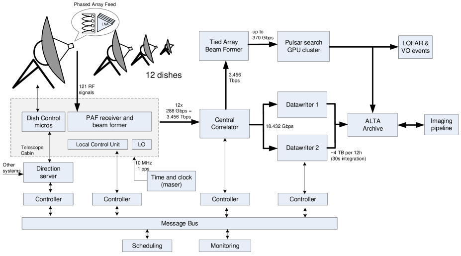
5 نظرة عامة على نظام Apertif
تستبدل ترقية Apertif الواجهة الأمامية متعددة الترددات المعروفة (MFFE) (Tan 1991)، ونظام IF، ونظام توزيع التردد والساعة، والمُرابِط، ومعظم الكابلات، وجميع البرمجيات اللازمة لرصد النظام والتحكم فيه وتشغيله. يوضح الشكل 5 المخطط الصندوقي الأعلى مستوى لنظام WSRT-Apertif. يأخذ Apertif عينات من الحقل الكهرومغناطيسي في المستوى البؤري للعواكس باستخدام مصفوفة كثيفة الرص من عناصر الهوائيات. يبلغ التباعد بين العناصر 10 cm، وهو يقابل عند أدنى تردد تشغيل و عند أعلاه. وبعد الترشيح والتضخيم، تُنقل إشارات RF عبر كابلات RF محورية إلى حجرة تلسكوب تقع أسفل كل طبق. وفي الحجرة، تُحوّل إشارات RF إلى النطاق القاعدي، وتُرقمن، وتُجمع في 40 حزمة مركبة ثنائية الاستقطاب. ولتشكيل حزمة مركبة واحدة (CB) على السماء، تُوزن الإشارات المستقبلة من عناصر مصفوفة الهوائيات وتُجمع في مشكل حزم. يستخدم Apertif مشكل حزم ثنائي السلمية: تُستخدم إشارات جميع عناصر المصفوفة ذات الاستقطاب نفسه من أجل كل حزمة مركبة في ذلك الاستقطاب. ولأن مشكل الحزم مُنفذ في المجال الرقمي، يمكن بسهولة إنشاء نسخ متعددة من إشارات الدخل. وباستخدام كثير من مشكلات الحزم الرقمية المتوازية التي يطبق كل منها أوزاناً مختلفة، تُشكّل حزم مركبة كثيرة (تشير كل منها إلى اتجاه مختلف قليلاً) في آن واحد. ويوضح الشكل 6 هذا المبدأ. وفي Apertif، يقدم كل طبق 40 حزمة مركبة. وتُحدد زاوية المسح الإلكتروني القصوى بحجم PAF، والطول البؤري، وقطر العاكس الرئيس. أبعاد PAF في Apertif هي أكبر ما يمكن داخل حجرة البؤرة الأولية لعواكس WSRT، وتوفر توازناً جيداً بين مدى المسح ( درجة في جميع الاتجاهات) والتكاليف الرأسمالية. ويزن PAF أقل بنحو 6 مرات من الواجهة الأمامية السابقة لـ Apertif. ويُحدد عرض النطاق الفوري لـ Apertif، وقدره 300 MHz، بواسطة المرشحات في الإلكترونيات التماثلية. أما عدد الحزم المتزامنة فيُحدده مقدار قدرة المعالجة الرقمية.
كان تقسيم النظام مدفوعاً بالرغبة في بناء نظام ممكن، منخفض المخاطر، وسهل الصيانة. وبالنظر إلى قيود الحجم الفيزيائي والوزن واستهلاك الطاقة، لا يوجد في حجرة التغذية عند البؤرة الأولية للعاكس إلا جزء RF من المغذي. ونتيجة لذلك، انخفض وزن الأنظمة في حجرة التغذية من نحو 300 kg قبل ترقية Apertif إلى 50 kg فقط. أما حجرة التلسكوب أسفل الطبق فهي كبيرة نسبياً. وهذا يخفض مستوى التكامل المطلوب في الواجهة الخلفية RF والرقمية، فيقلل التعقيد ومخاطر التطوير. كما يتيح وصولاً سهلاً إلى المعدات للصيانة والإصلاح. وباستخدام قفص فاراداي داخل حجرة التلسكوب، يمكن حجب التداخل الناتج من المستقبلات والواجهات الخلفية عن الهوائيات بكفاءة عالية جداً. وداخل قفص فاراداي، تُحجب جميع أجزاء RF لتجنب تسرب RFI ذاتي التوليد من الواجهة الخلفية الرقمية ومصدر تغذيتها إلى النظام. ومن نقاط الانتباه في هذه البنية تغيرات الطور في كابلات RF المحورية التي تربط هوائي التغذية بحجرة التلسكوب.
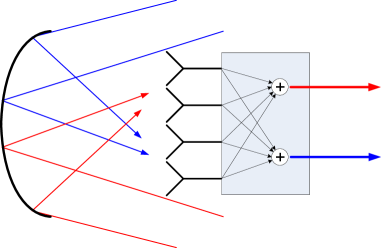
توفر مراجع الزمن والتردد بواسطة مازر ومستقبل GPS. ويقوم المُرابِط المركزي، بتدفق بيانات دخل مجمع قدره 3.456 Tbps، بترابط كل حزمة من جميع الأطباق إلى رؤى تداخلية. وتُكامل الرؤى وتُخزن في كاتب البيانات. وهذه هي نهاية النظام الآني. تُرسل مجموعات البيانات الناتجة إلى مقر ASTRON في Dwingeloo حيث ينتج خط معالجة آلي للمعايرة والتصوير مكعبات صور معايرة. وتُخزن كل من المكعبات المعايرة والرؤى الخام في أرشيف Apertif طويل الأمد (ALTA)، وهو الواجهة الرئيسة للمستخدمين. وبدلاً من ذلك، تُسحب الإشارات من الأطباق في المُرابِط وتُعالج بواجهة خلفية مستقلة قائمة على GPU لأرصاد المصفوفة المترابطة. (van Leeuwen 2014; van Leeuwen et al. 2021).
يوفر نمط الحزمة لمغذي Apertif مستوى كبيراً من التحكم، بما يتيح كفاءات فتحة مقدارها 75% فأعلى، وتحكماً في مستويات الفصوص الجانبية والاستقطاب المتقاطع. وكما وصف van Cappellen & Ivashina (2011)، فإن المعرفة الدقيقة بأنماط الحزم على السماء أمر حاسم للتلسكوبات الراديوية التركيبية لإنتاج صور عالية المجال الديناميكي ومحدودة بالضجيج. ويمكن لتغيرات كسب المستقبل في PAF أن تؤدي إلى تغيرات في الحزمة المركبة، ومن ثم يلزم مخطط معايرة. وقد صُمم نظام فرعي للمعايرة الآنية لقياس تغيرات الكسب التماثلي أثناء الرصد وتعويض التغيرات في مشكل الحزم (الرقمي) لتثبيت الحزمة على السماء. وحتى وقت كتابة هذا النص، لم يكن نظام المعايرة الآنية قد نُفذ كاملاً بعد لأن نظام PAF مستقر بطبيعته بما يكفي بين معايرتين، أي خلال مدة قدرها 2 – 3 أسابيع.
يسرد الجدول 1 خصائص الأداء الرئيسة لنظام WSRT-Apertif.
| Characteristic | Value | Unit |
| Frequency range | 1130–1750 | MHz |
| Processed bandwidth | 300 | MHz |
| Number of beams | 40 | |
| Field of view single observation a | 10.5 | deg2 |
| Effective field of view for surveys a | 5.25 | deg2 |
| Sensitivity a | 63 | m2K-1 |
| SEFD a | 43.7 | Jy |
| Number of dishes | 12 | |
| Baseline lengths | 36–2700 | m |
| Spectral resolution | 12.2 | kHz |
| a At 1400 MHz. |
6 أثر RFI
يعرض الشكل 7 طيفاً مقاساً في موقع WSRT بهوائي منخفض الكسب موجه نحو الأفق. مصادر RFI الرئيسة هي نطاقات GSM حول 850 MHz و1850 MHz، إضافة إلى خمسة نطاقات تلفزيونية أرضية دون 800 MHz من برج التلفزيون في Smilde، الواقع على بعد 12.6 km غرب WSRT. وقد ثبت أن هذه النطاقات التلفزيونية على وجه الخصوص مزعجة. وتستخدم محطات التلفزيون مخطط تعديل بعدد كبير من الحاملات الفرعية الموزعة على نطاق قدره 8 MHz. ومن القياسات في طبق WSRT، تبلغ القدرة المتوقعة في أسوأ الحالات من هذه الإشارات عند دخل أول مضخم منخفض الضجيج (LNA) نحو -50 dBm. وعلى الرغم من أن هذه المتداخلات تقع خارج نطاق ترددات تشغيل Apertif، فإنها تستلزم مرشحات في كامل نظام RF لرفض توليد نواتج تضمين بيني من الرتبتين الثانية والثالثة. وتؤدي هذه المرشحات إلى زيادة معامل الضجيج. ومن دون هذه المرشحات، لن يُحدد قاع الضجيج في النظام بالضجيج الحراري، بل بقاع ضجيج تنشئه نواتج التضمين البيني هذه. وفي موقع WSRT، يوجد أيضاً إصدار من رادار مراقبة الطائرات الثانوي عالي القدرة ADS-B العامل عند 1090 MHz. وتكون قدرته القمية أعلى بكثير مما هو ظاهر في الشكل 7 لأنه نبضي.
إن مدى التردد بين 1300 و1500 MHz خالٍ نسبياً من RFI. أما عند الترددات دون 1300 MHz فتتأثر أجزاء مهمة من النطاق بشدة بـ RFI، ولا سيما لخطوط القاعدة الأقصر. وتهيمن على RFI نطاقات Galileo E5 وE6، وGPS L2، وGLONASS، مما يجعل كثيراً من هذا المدى الترددي غير قابل للاستخدام. ولا توجد إلا نوافذ صغيرة قليلة خالية نسبياً من RFI، مثل مدى التردد 1180 – 1195 MHz. وفي مدى التردد 1452 – 1492 MHz توجد RFI بسبب مرسلات 5G في المنطقة.
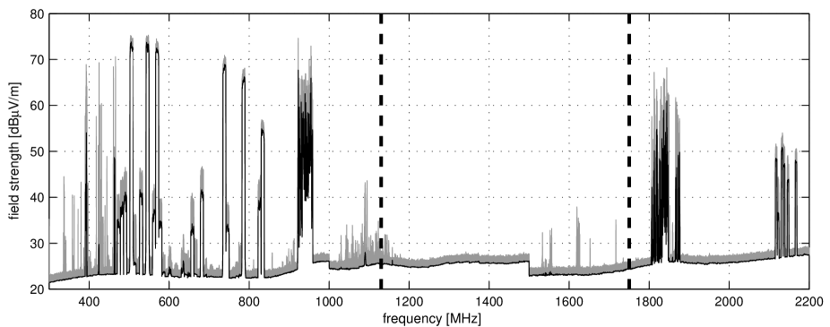
7 مغذي المصفوفة الطورية
يصف هذا القسم عتاد PAF التماثلي والرقمي المركب عند كل طبق، والذي يقدم 40 حزمة ثنائية الاستقطاب إلى الأنظمة المركزية. ويُعرض عرض عام لنظام PAF عند كل طبق في الشكل 8. ويعد نطاق التردد الواسع للتشغيل ومعامل الضجيج المطلوب المحركين الرئيسين لتصميم الهوائي ونظام RF.
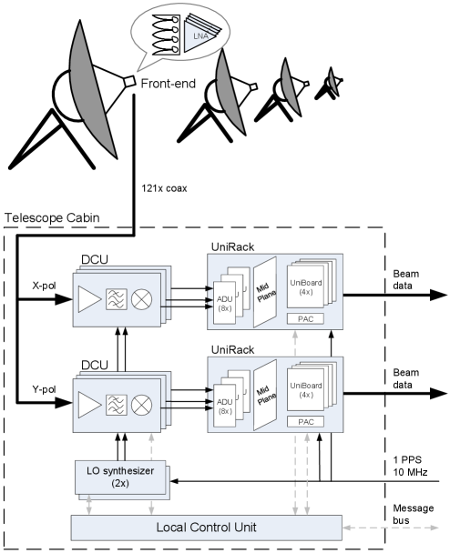
7.1 مصفوفة الهوائيات
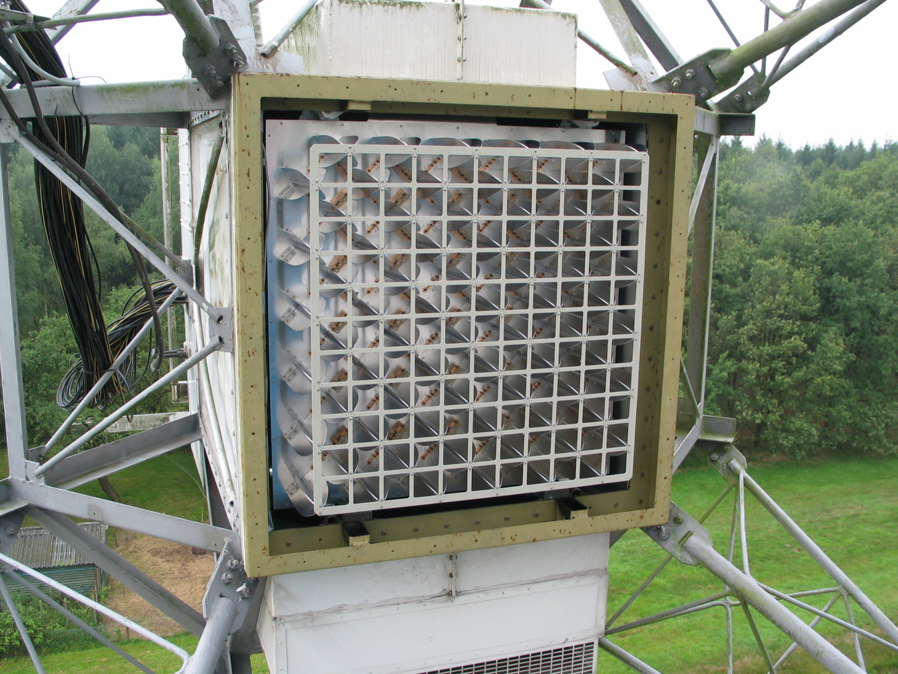
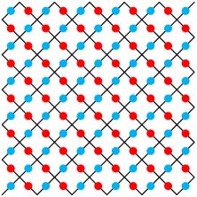
تتكون كل مصفوفة تغذية في Apertif من 121 عنصر هوائي أحادي الاستقطاب من نوع الفتحة المتدرجة (أو Vivaldi) (Arts et al. 2010)، منها 61 في استقطاب واحد و60 في الاستقطاب المتعامد، انظر الشكل 10. وتُهيأ عناصر الهوائي في شبكة مستطيلة بخطوة قدرها 10 cm. وتُركب مصفوفة التغذية في حجرة البؤرة (الأولية) للأطباق، انظر الشكل 9. وللدعم الميكانيكي، تُثبت شبكة رمادية من البولي بروبيلين على مقدمة عناصر الهوائي. وقد ثبُت أن أثر هذه الشبكة في الأداء الكهرومغناطيسي وأداء الضجيج لمصفوفة الهوائيات مهمل. وللحماية من الطقس، يُركب رادوم رغوي أمام الهوائي. ومع طول بؤري قدره m ()، تُعد عواكس WSRT عميقة نسبياً ولها زاوية فتح قدرها درجة كما تُرى من المغذي. ويوفر PAF بحجم 1 m  1 m، وهو الأكبر الذي يتسع له موضع حجرة البؤرة، مجال رؤية يقارب deg2.
1 m، وهو الأكبر الذي يتسع له موضع حجرة البؤرة، مجال رؤية يقارب deg2.
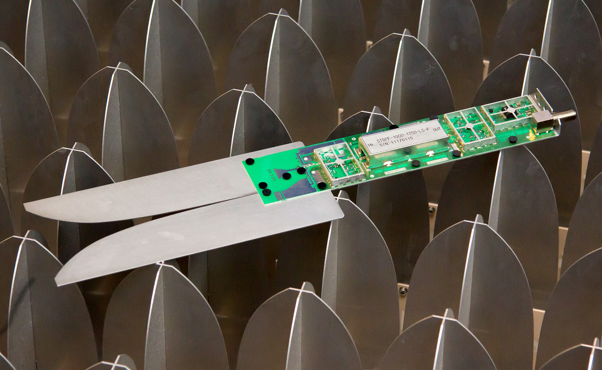
يعرض الشكل 11 أحد عناصر PAF مع مضخم منخفض الضجيج (LNA) مدمج. تعمل الواجهة الأمامية بأكملها عند درجة الحرارة المحيطة. وفي مرحلة التصميم الأولية، دُرس نظام مبرد تبريداً عميقاً. وعلى الرغم من أنه كان متوقعاً أن تخفض الواجهة الأمامية المبردة تبريداً عميقاً درجة حرارة النظام بمقدار 10 – 20 K، فإنها لم تكن ممكنة بسبب أثرها الكبير في تكاليف تطوير النظام وبنائه وصيانته.
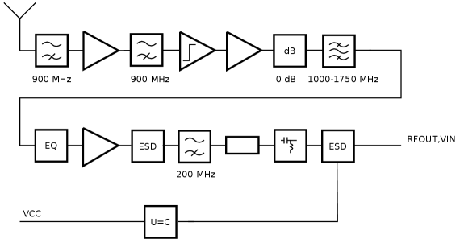
7.2 الواجهة الأمامية
يعرض الشكل 12 المخطط الصندوقي للوحة الواجهة الأمامية. فاللوحة مدمجة بإحكام مع عناصر الهوائي لتقليل الخسائر. وعلى خلاف هوائيات القرون، لا تمتلك عناصر المصفوفة عريضة النطاق مثل Vivaldi قطعاً حاداً عند النهاية الدنيا من نطاق تردد تشغيلها. ونتيجة لذلك، ستكون معظم RFI دون 1130 MHz موجودة عند أطراف دخل مضخمات LNA. ولتجنب توليد نواتج تضمين بيني في نطاق Apertif، يدمج LNA مرشح تمرير عالٍ ذا خسارة منخفضة جداً. وتُعرض المقاسة للمرشح في الشكل 13. فهو يخمد إشارات DVB-T بأكثر من 40 dB. يستخدم مرشح التمرير العالي بنية موزعة بثلاث شعب. وتُحسن ترددات رنين هذه الشعب لتعظيم التوهين عبر نطاق الإيقاف دون 1 GHz. وتُقلل الخسائر باستخدام لوحة ذات ظل فقد منخفض، وبإيجاد حل وسط بين خسائر النحاس الناقلة ومقدار التوهين. وتتضمن  في الشكل 13 خسائر عدم المطابقة، التي لا تسهم في ميزانية الضجيج. وتبلغ المساهمة الصافية للمرشح في درجة حرارة النظام
في الشكل 13 خسائر عدم المطابقة، التي لا تسهم في ميزانية الضجيج. وتبلغ المساهمة الصافية للمرشح في درجة حرارة النظام  K (انظر الجدول 3). وبالإضافة إلى ذلك، تُركب مرشحات RF خارج النطاق بين مراحل الكسب التماثلي عبر سلسلة الإشارة بأكملها. مرشح التمرير العالي الثاني تنفيذ منفصل للمرشح نفسه لتقليل RFI أكثر. أما مرشح تمرير النطاق الثالث فهو مرشح منفصل من الرتبة 9th لترشيح GSM-900 وGSM-1800 فوق نطاق الترددات موضع الاهتمام وتحته. ومضخم المرحلة الأولى هو Skyworks 67151-396LF، وهو من أحدث أجيال GaAs pHEMT، وله أحد أدنى معاملات الضجيج المتاحة حالياً باستخدام أجهزة COTS. ويُستخدم كسبه البالغ 22 dB للتغلب على الجزء الأكبر من مساهمة الضجيج للمكونات الأخرى في نظام RF. ويتلقى LNA تغذيته المستمرة عبر الكابل المحوري نفسه المستخدم لإخراج طيف RF إلى المستقبل. وتُركب حماية ضد التفريغ الكهروستاتيكي (ESD) عند خرج لوحة الواجهة الأمامية. كما تُستخدم مقاومات تفريغ عند الدخل والخرج لمنع تراكم الشحنة الساكنة.
K (انظر الجدول 3). وبالإضافة إلى ذلك، تُركب مرشحات RF خارج النطاق بين مراحل الكسب التماثلي عبر سلسلة الإشارة بأكملها. مرشح التمرير العالي الثاني تنفيذ منفصل للمرشح نفسه لتقليل RFI أكثر. أما مرشح تمرير النطاق الثالث فهو مرشح منفصل من الرتبة 9th لترشيح GSM-900 وGSM-1800 فوق نطاق الترددات موضع الاهتمام وتحته. ومضخم المرحلة الأولى هو Skyworks 67151-396LF، وهو من أحدث أجيال GaAs pHEMT، وله أحد أدنى معاملات الضجيج المتاحة حالياً باستخدام أجهزة COTS. ويُستخدم كسبه البالغ 22 dB للتغلب على الجزء الأكبر من مساهمة الضجيج للمكونات الأخرى في نظام RF. ويتلقى LNA تغذيته المستمرة عبر الكابل المحوري نفسه المستخدم لإخراج طيف RF إلى المستقبل. وتُركب حماية ضد التفريغ الكهروستاتيكي (ESD) عند خرج لوحة الواجهة الأمامية. كما تُستخدم مقاومات تفريغ عند الدخل والخرج لمنع تراكم الشحنة الساكنة.
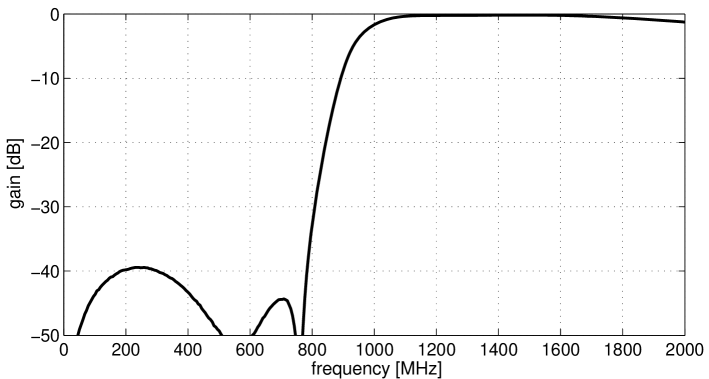
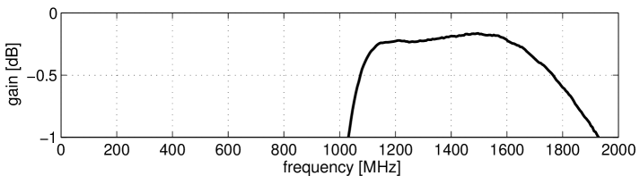
 المقاسة لمرشح التمرير العالي السابق لـ LNA (في الأعلى)، ولقطة مقربة لنطاق التمرير
المقاسة لمرشح التمرير العالي السابق لـ LNA (في الأعلى)، ولقطة مقربة لنطاق التمرير  (في الأسفل).
(في الأسفل).7.3 الكابلات المحورية RF
تُنقل إشارات RF البالغ عددها 121 من مضخمات LNA إلى حجرة التلسكوب بواسطة كابلات RF محورية طولها 40 m. ولأن الكابلات تعبر كلاً من محور الارتفاع ومحور زاوية الساعة، فإنها تتعرض لانحناء متكرر. وقد اختير عدد من الكابلات المرشحة وخضع لاختبارات عمر مسرعة بانحناء متكرر عند درجات حرارة منخفضة جداً. وكان كابل COAX9 ذي المقاومة 75 أوم الأفضل أداءً، وهو المستخدم الآن في Apertif.
7.4 حجرات التلسكوب
تُوصل إشارة خرج مضخمات LNA إلى حجرة تلسكوب (الشكل 14). وتحتوي حجرة التلسكوب على جميع الأنظمة القائمة عند الطبق (أي المستقبلات ومشكل حزم PAF). والحجرة حاوية شحن قياسية بطول 20 قدم وفي داخلها قفص فاراداي معزول حرارياً. وتوضع الحجرات عند الأطباق الأربعة المتحركة على إطار وتتحرك مع بنية التلسكوب. وكل قفص فاراداي مزود بنظام تكييف هواء للتبريد (والتدفئة) حتى 6.5 kW. وقد قيست فعالية حجب أقفاص فاراداي وتُعرض في الشكل 15.
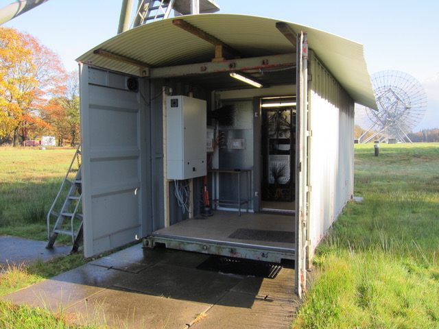
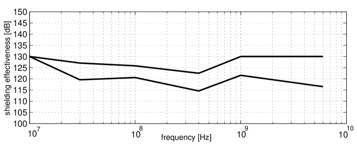
7.5 المستقبل
يحوّل مستقبل وحدة التحويل الخافض (DCU) في Apertif نطاق RF الداخل إلى نطاق IF (الشكل 16). وتزود DCU أيضاً مضخمات LNA بالقدرة المستمرة عبر كابلات RF المحورية. ويمكن الوصول إلى جميع الإعدادات ومعلومات الرصد في الحامل الفرعي لـ DCU عبر Ethernet. تُجمع أربع قنوات RF على لوحة دارة مطبوعة واحدة. كما تحتوي اللوحة على مراحل توزيع المذبذب المحلي (LO) الأخيرة، ودوائر التغذية والتحكم، ورصد حالة كل قناة. وتُجمع ثماني لوحات DCU في رف DCU، الذي يضم أيضاً توزيع LO السالب. ويُبنى رف منفصل لمصدر القدرة المستمرة المرشحة. ويُحجب رف DCU لقمع التداخل من مصادر EMI داخل قفص فاراداي، مثل الواجهة الخلفية الرقمية، ومصادر القدرة، وحاسوب التحكم، ونظام تكييف الهواء.
من تحليل طيف دخل RFI والمتطلبات المسبقة مثل قدرات ADC، خلُصنا إلى أن مخطط تحويل مزدوج هو الأنسب. يحول مخطط التحويل الخافض تردد RF من 1130 – 1750 MHz إلى منطقة نايكويست الثانية لـ ADC (450 – 750 MHz). وكان من الصعب جداً إيجاد مخطط مزج ترددي نظيف نسبياً من دون أن تعود نواتج المزج إلى داخل نطاق التردد، بالنظر إلى طيف الدخل (الشكل 7). وقد دُرست خيارات متعددة بنمذجة طيف RF عبر سلسلة المستقبل. ويعطي مخطط المزج المنفذ (انظر الشكل 17) أفضل حل وسط بين طيف نظيف عبر القناة، ومتطلبات أداء المرشحات، وترددات مذبذب محلي ممكنة باستخدام لبنات قياسية مثل PLLs وكتل الكسب والكابلات المحورية وتقنية لوحات PCB القياسية.
ابتداءً من أعلى الشكل 17، يُرفع طيف دخل RF باستخدام تردد LO1 قابل للضبط (4680 – 5000 MHz). وهذا يتيح تردداً وسيطاً قدره 3.4 GHz. ويرفض مرشح IF مخصص ممر للنطاق تردد الصورة ويختار نطاق 300 MHz، بينما يحول مزج خافض ثانٍ من IF إلى منطقة نايكويست الثانية لـ ADC. ويستند مرشح IF إلى تقنية الخطوط الخزفية المتزاوجة لضمان أداء متكرر لجميع القنوات البالغ عددها 1500 واستجابة مستقرة عبر التردد. يستخدم مزج التحويل الخافض تردد LO2 قدره 2800 MHz، وهو 3.5 أضعاف تردد ساعة أخذ عينات ADC. وإذا اقترنت الساعة أو توافقياتها بالإشارة، فستُطوى عائدة إلى DC أو إلى 400 MHz. وأخيراً يختار مرشح مضاد للطي منطقة نايكويست الثانية لـ ADC.
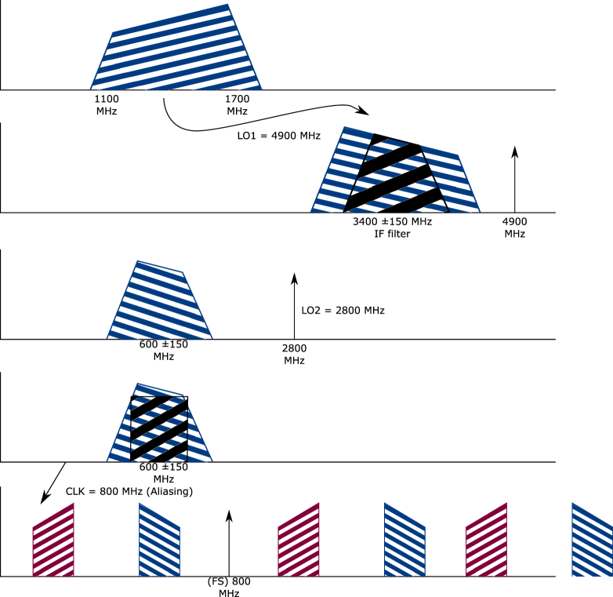
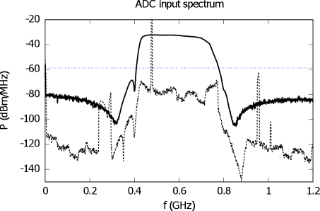
يعرض الشكل 18 طيف الخرج المحاكى لنظام RF عندما يكون الطبق في أسوأ موضع لـ RFI. ويستند كود المحاكاة المطور ذاتياً، بصورة فضفاضة، إلى طريقة الاتزان التوافقي. ويمثل الخط المتصل الضجيج الحراري. أما الخط المتقطع فيعرض قدرة نواتج التضمين البيني. ويمثل الخط الأفقي حول -60 المستوى الأقصى المسموح لنواتج التضمين البيني (أي 25 dB دون قاع الضجيج). ويمكن أن نرى بوضوح أن نواتج التضمين البيني تقع دون خط المواصفة بكثير عبر الغالبية العظمى من عرض النطاق (450 – 750 MHz). أما الخط حول 470 MHz فليس ناتج تضمين بيني، بل إشارة RFI داخل النطاق من أقمار Iridium.
7.6 مراجع التردد والزمن
يُستخدم نظام الساعة في Apertif (الشكل 19) لمزامنة جميع الأطباق بعضها مع بعض، ولإنشاء صلة بالزمن المطلق. تُقفل جميع أنظمة Apertif على ساعة 10 MHz من مازر هيدروجيني. وكان تردد ساعة أعلى سيجعل شبكة اختيار التردد خشنة جداً، بينما كانت الترددات الأدنى ستزيد مساهمة ضجيج الطور الناتجة من دوائر حلقة قفل الطور (PLL). ومن المزايا الإضافية لتردد المرجع 10 MHz الانخفاض النسبي في فقد الكابلات المحورية المستخدمة لتوزيع إشارات الساعة عند هذه الترددات. ويشتق مضخم توزيع إشارة 1 pps من المرجع 10 MHz الذي يوفره المازر. ويُسجل فرق الزمن بين إشارة 1 pps هذه وإشارة 1 pps من ساعة قائمة على GPS لإنشاء مرجع زمن مطلق للأرصاد.
تُستخدم مضخمات توزيع متاحة تجارياً لإرسال إشارات 10 MHz و1 pps إلى التلسكوبات عبر كابلات محورية مدفونة قائمة. وفي حجرة التلسكوب، يولد مولدا مذبذب محلي (LOGs) إشارتي المذبذب المحلي من مرجع الساعة 10 MHz. ويستند نظام LOG إلى Hittite HMC833 Phased Lock Loop، وهو مبني في حامل فرعي محجوب كهرومغناطيسياً قياس 19 بوصة. ويُبنى نظام LOG منفصل لكل مدى ترددات مذبذب محلي باستخدام مرشحات مختلفة. ويمكن تهيئة التردد عن بُعد عبر وصلة Ethernet قائمة على IP. وعلاوة على ذلك، يحتوي النظام على 4 مخارج معزولة بقدرات خرج قابلة للتحكم عن بُعد. ويمنح العزل الحراري لـ PLL الوحدة استقرارها مع الزمن. ولضمان قابلية تكرار الطور بين الأطباق بعد إعادة الضبط، يكون تردد الخرج مضاعفاً صحيحاً لتردد المرجع.
ساعة معالجة البيانات 200 MHz المستخدمة في Uniboards في الأطباق والمُرابِط مقفلة على مرجع 10 MHz نفسه مثل ساعة عينات ADC. ولذلك لا يمكن لمعدل المعالجة في جميع FPGAs أن ينجرف بين FPGAs. ويساعد انعدام انجراف الساعة في إبقاء استخدام الذاكرة الداخلية لمخازن FIFO الداخلة الخاصة بنقل البيانات بين FPGA صغيراً.
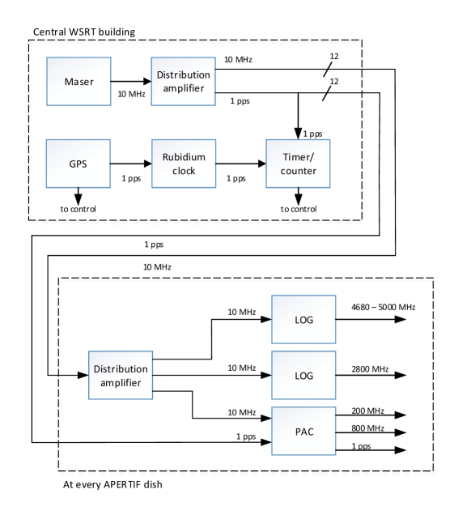
7.7 معالجة الإشارات الرقمية في الزمن الحقيقي
تدخل إشارات النطاق القاعدي التماثلية من وحدات DCU إلى UniRack: وهو حامل فرعي محجوب ذو 64 دخلاً تماثلياً ينفذ التحويل من التماثلي إلى الرقمي ومعالجة الإشارات الرقمية لإشارات PAF، ويرسل الحزم الناتجة البالغ عددها 40 إلى المُرابِط المركزي عبر ألياف بصرية. ويضيف UniRack أيضاً طوابع زمنية إلى البيانات الرقمية. يستخدم Apertif لوحة Uniboard (Gunst et al. 2014) منصةً عتادية لكل معالجة الإشارات الرقمية، انظر الشكل 20.
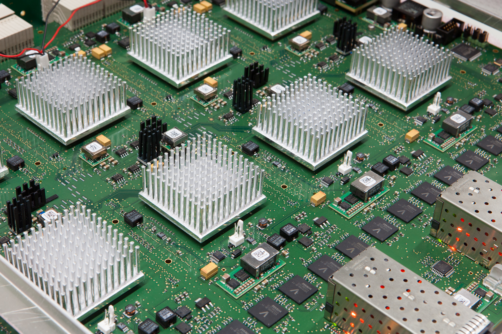
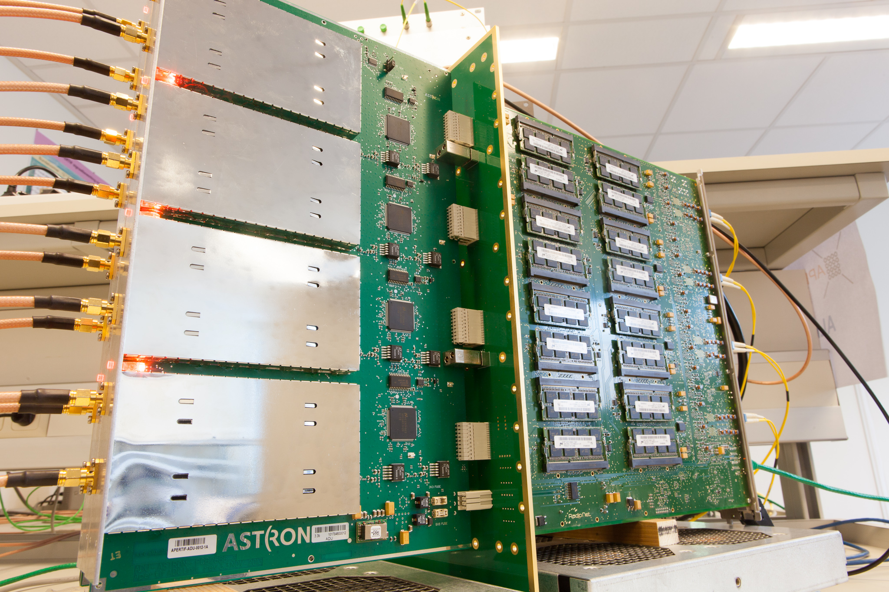
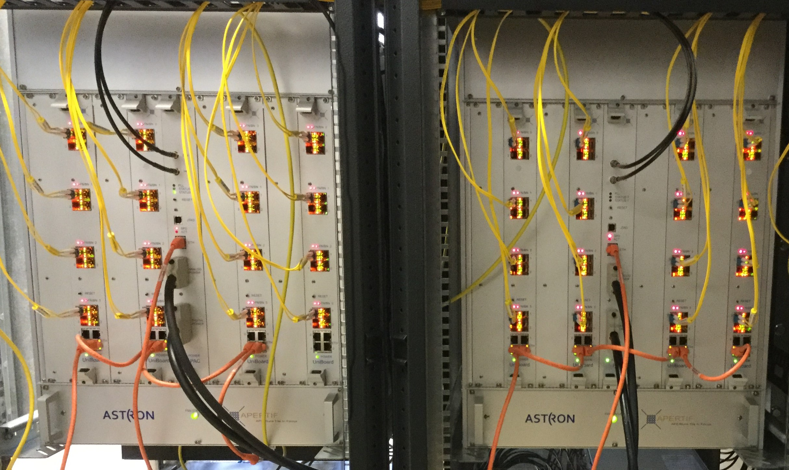
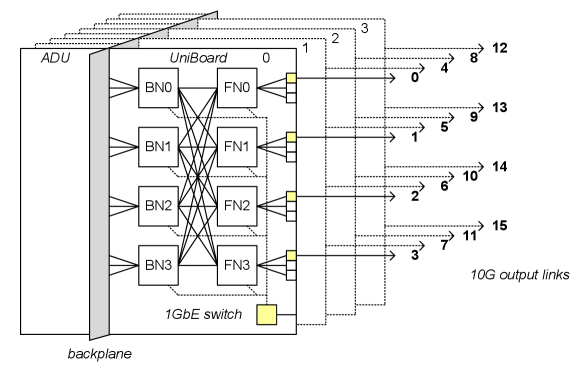
يضم UniRack واحد 8 لوحات Analog to Digital Unit (ADU)، و4 لوحات UniBoards، ولوحة قدرة وساعة (PAC). وتوزع لوحة وسطى البيانات بين ADUs على أحد جانبي الرف وUniBoards على الجانب الآخر (انظر الشكلين 21 و22). وتوفر لوحة PAC القدرة وإشارة الساعة المرجعية إلى جميع اللوحات الأخرى عبر اللوحة الوسطى. تعمل ADCs ذات 8 بت عند 800 MSPS، آخذة عينات من إشارة النطاق القاعدي في منطقة نايكويست الثانية. ويتيح مخفف متغير بدقة 1 dB ضبط إشارة الدخل على النحو الأمثل ضمن المجال الديناميكي لـ ADC. وينقل مخطط المزج (الشكل 17) الترددات السالبة لنطاق RF الأصلي إلى منطقة نايكويست الموجبة لـ ADC، فتنعكس الحزمة. ويؤدي أخذ العينات في منطقة نايكويست الثانية إلى عكس الحزمة مرة أخرى. ولذلك تكون النتيجة الصافية أن ترددات RF بعد أخذ العينات مُمثلة في النطاق القاعدي بالترتيب التصاعدي نفسه. أما UniRack نفسه، بما في ذلك لوحات ADU، فهو محجوب لتقليل اقتران الإشارات الشاردة من الإلكترونيات الرقمية بسلسلة الإشارة التماثلية.
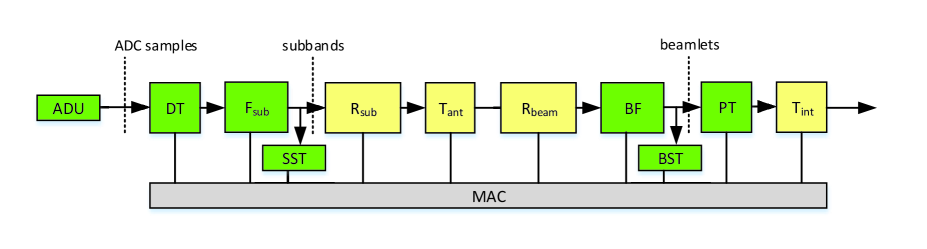
يقدم الشكل 24 نظرة عامة على معالجة الإشارات الرقمية عند مستوى الطبق. أولاً، تُقسّم إشارة كل عنصر PAF ذات العرض 400 MHz إلى 512  781 250 Hz نطاقات فرعية (تعرف أيضاً بالقنوات الخشنة) بواسطة بنك مرشحات متعدد الأطوار مأخوذ عينياً أخذًا حرجاً (Fsub). ولا مفر من حدوث الطي عند حواف النطاقات الفرعية المأخوذة عينياً أخذًا حرجاً، مما يؤدي إلى هبوطات حادة في دالة ممر النطاق يصعب تعويضها. وتختار كتلة Rsub النطاقات الفرعية المركزية البالغ عددها 384، التي تغطي عرض نطاق 300 MHz، وتستبعد حواف النطاق 50 MHz عند كل جانب. ويتطلب مشكل الحزم لنطاق فرعي واحد دخلاً من جميع عناصر هوائيات PAF، ولذلك يلزم إجراء إعادة ترتيب Tant تجمع النطاقات الفرعية من جميع عناصر الهوائي. ولكل من النطاقات الفرعية 384، يشكل مشكل الحزم (BF) 40 حزيمة من مداخل الهوائي. والحزيمة كمية تمثل معلومات حزمة واحدة تمتد عبر نطاق فرعي واحد. ويوزع مشكل الحزم على 64 وحدات BF لكل UniRack. وتحتفظ كتلة Rbeam بالنطاق الفرعي وتختاره بحيث يمكن لمشكل الحزم إنشاء حزيمات CB. وفي كل مشكل حزم، تُضرب استجابات جميع العناصر في أوزان مركبة (أي توجيه بالمقدار والطور) ثم تُجمع. دالة Tint هي إعادة ترتيب زاوية تنقل البيانات وتجمعها زمنياً لتقديمها إلى المُرابِط بالطريقة المثلى. وتتولى دالة الرصد والتحكم (MAC) التشغيل السليم، واختيار النطاقات الفرعية، وأوزان مشكل الحزم.
781 250 Hz نطاقات فرعية (تعرف أيضاً بالقنوات الخشنة) بواسطة بنك مرشحات متعدد الأطوار مأخوذ عينياً أخذًا حرجاً (Fsub). ولا مفر من حدوث الطي عند حواف النطاقات الفرعية المأخوذة عينياً أخذًا حرجاً، مما يؤدي إلى هبوطات حادة في دالة ممر النطاق يصعب تعويضها. وتختار كتلة Rsub النطاقات الفرعية المركزية البالغ عددها 384، التي تغطي عرض نطاق 300 MHz، وتستبعد حواف النطاق 50 MHz عند كل جانب. ويتطلب مشكل الحزم لنطاق فرعي واحد دخلاً من جميع عناصر هوائيات PAF، ولذلك يلزم إجراء إعادة ترتيب Tant تجمع النطاقات الفرعية من جميع عناصر الهوائي. ولكل من النطاقات الفرعية 384، يشكل مشكل الحزم (BF) 40 حزيمة من مداخل الهوائي. والحزيمة كمية تمثل معلومات حزمة واحدة تمتد عبر نطاق فرعي واحد. ويوزع مشكل الحزم على 64 وحدات BF لكل UniRack. وتحتفظ كتلة Rbeam بالنطاق الفرعي وتختاره بحيث يمكن لمشكل الحزم إنشاء حزيمات CB. وفي كل مشكل حزم، تُضرب استجابات جميع العناصر في أوزان مركبة (أي توجيه بالمقدار والطور) ثم تُجمع. دالة Tint هي إعادة ترتيب زاوية تنقل البيانات وتجمعها زمنياً لتقديمها إلى المُرابِط بالطريقة المثلى. وتتولى دالة الرصد والتحكم (MAC) التشغيل السليم، واختيار النطاقات الفرعية، وأوزان مشكل الحزم.
ولرصد النظام وضبطه، يُحصل على طيف القدرة لكل عنصر PAF بحساب إحصاءات الترابط الذاتي للنطاقات الفرعية. وبالمثل يُحسب طيف القدرة لكل حزمة مركبة. وتنتج كتلتا SST وBST في الشكل 24 هذه الأطياف. وفاصل التكامل لهذه الأطياف هو 1.024 s. وتعمل مرافق الرصد هذه بالتوازي مع مسار البيانات الاعتيادي وتكون متاحة دائماً.
كما تمتلك دالة الإحصاءات نمطاً خاصاً تحسب فيه إحصاءات الترابط المتبادل للنطاقات الفرعية بين أي عنصرين من عناصر PAF (Schoonderbeek et al. 2020). وتُستخدم مصفوفة التغاير الناتجة لعناصر PAF لتحديد أوزان مشكل الحزم كما هو موصوف في القسم 7.9. ويستغرق قياس مصفوفة ترابط متبادل كاملة بحجم نحو 2 دقائق لجميع النطاقات الفرعية.
يُعالج استقطابا PAF كلٌّ على حدة في رفّي UniRack. ولا يمكن تنفيذ تشكيل الحزم لاستقطاب واحد من PAF على عقدة FPGA واحدة لكامل عرض النطاق، لذلك يجب توزيع حمل النطاقات الفرعية عبر 16 عقد FPGA. وتضم كل UniBoard 4 FPGAs عقد خلفية (BN) و4 FPGAs عقد أمامية (FN) (انظر الشكل 23). وفي الحامل الفرعي تنفذ FPGAs العقد الخلفية Fsub وRsub في الشكل 24، وتنفذ FPGAs العقد الأمامية Rbeam وBF. وتُنفذ إعادة الترتيب Tant على قفزتين. القفزة الأولى عبر اللوحة الخلفية التي تنفذ وصلاً شبكياً كاملاً بين BN المناظرة على لوحات UniBoards البالغ عددها 4. أما القفزة الثانية فعبر الوصل الشبكي بين FPGAs من نوع BN وFN على كل Uniboard.
في المجموع، تحتوي مشكلات الحزم الرقمية في Apertif عند الأطباق على 1536 ADCs على 192 لوحات ADU، و768 FPGAs على 96 لوحات UniBoards. ويبلغ معدل بيانات الدخل الكلي إلى DSP في الزمن الحقيقي 9.8 Tbps. وينفذ مُرابِط Apertif المركزي (انظر القسم 8.2) على 16 لوحات UniBoards تضم 128 FPGAs. ومن ثم يضم Apertif في المجموع 112 لوحات UniBoards و896 FPGAs. ويبين الجدول 2 النسبة من موارد FPGA من نوع Stratix IV EP4SGX230KF40C2 المستخدمة بواسطة صورة بنك المرشحات BN، وصورة مشكل الحزم FN عند الأطباق، وصورة المُرابِط المركزي. وتُميز الموارد الآتية: وحدة المنطق التكيفي (ALM) التي تحتوي على 2 قلابات + منطق، والقلاب (FF)، وذاكرة RAM كتلية 1 kByte (M9K)، وذاكرة RAM كتلية 16 kByte (M144K)، والمضارب (DSP). ويستخدم المُرابِط أكثر من نحو 85% من موارد FPGA، وهي نسبة مرتفعة نسبياً. ونتيجة لذلك كان توليف صورة قادرة على تحقيق ساعة 200 MHz المطلوبة أمراً صعباً.
| ALM | FF | M9K | M144K | DSP | |
|---|---|---|---|---|---|
| Available max | 91 200 | 182 400 | 1235 | 22 | 1288 |
| BN Filterbank | 88% | 61% | 61% | 36% | 68% |
| FN Beam former | 62% | 43% | 83% | 68% | 82% |
| Correlator | 99% | 83% | 87% | 100% | 84% |
7.8 تعويض التأخير الهندسي
مع تغير اتجاه ورود الإشارة السماوية إلى التلسكوب أثناء الرصد، يتغير زمن ورودها باختلاف موقع الطبق وزاوية الورود. ويلزم تعويض التأخير لتعويض التغير في التأخير الهندسي بين الأطباق. ويجب تحديث تعويض التأخير الهندسي بانتظام لمتابعة دوران الأرض. يتكون تعويض التأخير في Apertif من تتبع حقيقي لتأخير عينات صحيح (DT في الشكل 24)، يتبعه تتبع طور متبقٍ (PT). ويُعرف تتبع التأخير بتتبع التأخير الخشن، ويُعرف تتبع الطور بتتبع التأخير الدقيق. يعمل DT على عينات ADC عند دخل معالج الإشارة. أما تتبع الطور فيعمل على الحزيمات لكل حزمة مركبة، ومن ثم يوقف الهدب لمركز كل CB. يبلغ معدل الهدب الأقصى لتلسكوب Apertif 1.28 Hz. ولتجنب قدر كبير من فقد الترابط، يجب أن يكون معدل تحديث تتبع الطور أسرع من معدل الهدب الأقصى بنحو عامل 100، أي فاصل تحديث للتأخير الدقيق قدره ms. وهذا المعدل أعلى مما تتيحه واجهة MAC، لذلك تستخدم دالة PT استيفاء خطياً مقطعياً، بحيث لا يحتاج MAC إلا إلى توفير معاملات إزاحة الطور وميل الطور لكل فاصل طور مُخطط. ويبلغ فاصل تحديث معاملات PT الخطية هذه s. ويمكن أيضاً تفسير معدل الهدب بوصفه إزاحة دوبلر تفاضلية بين طبقين. ومعدل الهدب الأقصى 1.28 Hz صغير جداً مقارنة بعرض نطاق النطاق الفرعي. لذلك لا يحتاج تعويض التأخير في Apertif إلى تصحيح إزاحة دوبلر على نطاق RFBW المأخوذ عينياً. ويبلغ التأخير المتبقي بعد تتبع التأخير 5 ns، أو 4 عينات ADC. ولتجنب فقد ترابط مهم، يجب أن تكون فترة النطاق الفرعي الدنيا أكبر من خطوة التأخير بعامل 100 على الأقل، أي ns، ومن ثم يجب أن يكون عرض نطاق النطاق الفرعي MHz. ويكاد عرض النطاق الفرعي يساوي معدل النطاق الفرعي 781,250 Hz، لذلك فإن النطاقات الفرعية 512 التي ينشئها Fsub كافية.
7.9 تشكيل حزم PAF
كما قُدم في القسم 5، ينتج مشكل حزم PAF 40 حزمة مركبة على مستوى الطبق بتشكيل تراكبات موزونة لاستجابات العناصر. وتؤدي هذه الحزم المركبة الدور نفسه الذي تؤديه الحزم الأولية للأطباق ذات مستقبل واحد. وتُحدد خصائص الحزم المركبة بالمخطط المستخدم لتحديد الأوزان. طبق Apertif مخطط تشكيل حزم يعظم حساسية (Warnick et al. 2012) الحزم المركبة. وعلى الرغم من أن ذلك لم يُنفذ بعد في Apertif، فإن مرونة مفهوم PAF تتيح إضافة قيود على شكل الحزمة، مثل تقليل تغير عرض الحزمة مع التردد (Ivashina et al. 2011) أو تخفيف تداخل الترددات الراديوية (RFI) (Jeffs et al. 2008).
ينفذ مشكل الحزم على مستوى الطبق في Apertif نهج تشكيل حزم ثنائي السلمية، حيث تُعالج مجموعتا عناصر PAF الموضوعتان تعامدياً كلٌّ على حدة. ولا يسبب تشكيل الحزم ثنائي السلمية إلا خسارة هامشية في الحساسية (~4% في Apertif) مقارنةً بمشكلات الحزم القطبية الكاملة المثلى (Wijnholds et al. 2012, 2011; van Cappellen et al. 2012)، ويوفر حملاً كبيراً في التعامل مع البيانات ومعالجتها.
يحدد Apertif أوزانه بقياس مصفوفات تغاير المصفوفة باستخدام مُرابِط النطاقات الفرعية في PAF أثناء رصد مصدر سماوي نقطي قوي (Cassiopeia A) وبقعة باردة نسبياً في السماء. ولأن الأوزان تُحدد باستخدام النظام الفعلي، تؤخذ جميع التأثيرات الآلية، مثل فروق الكسب والطور بين قنوات الاستقبال، والاقتران المتبادل بين الهوائيات، وضجيج الانسكاب، وحجب المغذي، ضمناً في الحسبان.
في حساب الأوزان، تُنفذ خطوتا تطبيع. تضمن الأولى ألا يضيف مشكل الحزم أي كسب، لأن ذلك سيتعارض مع مستويات التكميم في البرمجيات الثابتة لمشكل الحزم. وتضمن الثانية استجابة ترددية ناعمة، لأن الطريقة المذكورة أعلاه لتحديد الأوزان تُجرى لكل نطاق فرعي على حدة، مما قد يؤدي إلى قفزات من نطاق فرعي إلى آخر. ولضمان استجابة ترددية ناعمة، تُطبع الأوزان بحيث تكون سلسلة المستقبل ذات أكبر سعة وزن حقيقية بالتعريف. وفي بعض الحالات، لا توجد سلسلة مستقبل فريدة ذات أعلى وزن. عندئذ تكون سلسلة مستقبل معينة ذات أكبر سعة لنطاق فرعي واحد، بينما تكون سلسلة مستقبل أخرى ذات أكبر سعة في نطاق فرعي ثانٍ. ولمنع التطبيع من التبديل بين سلاسل المستقبل عبر نطاق التردد، يُجرى هذا الاختيار اعتماداً على بيانات نطاق فرعي مرجعي.
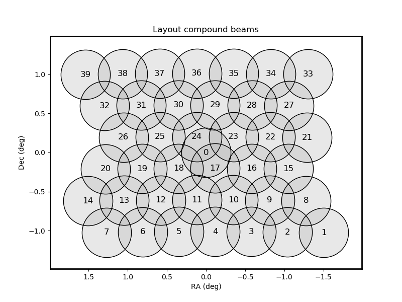
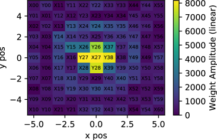
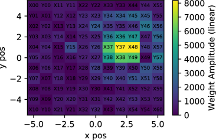
في جميع الأرصاد، يستخدم Apertif تخطيط الحزم المبين في الشكل 25. تُشكل تسع وثلاثون حزمة مرتبة في نمط سداسي. وتُشكل حزمة إضافية (الحزمة 0) عند موقع المحور البصري لطبق الهوائي، وهو أمر ملائم لأغراض الاختبار. وتُعرض مقادير أوزان حزمتين في الشكل 26. ويمكن أن نرى أنه في نظام PAF لا يمتلك أوزاناً عالية في كل حزمة إلا عدد قليل من العناصر. أما جميع العناصر الأخرى فلها أوزان أخفض بما لا يقل عن 10 dB، لكنها تظل مهمة لتحسين تفاصيل الحزمة المركبة. تهيمن استجابة عنصر X المركزي وعناصر Y المحيطة على الحزمة الواقعة على المحور (الحزمة 0). وتسيطر على الحزمة خارج المحور (الحزمة 9) عنصران. ويحدد موضع العناصر عالية الوزن بالنسبة إلى نقطة البؤرة الهندسية انزياح توجيه الحزمة المركبة بالنسبة إلى الحزمة المركزية.
8 المعالجة المركزية
تجمع المعالجة المركزية في Apertif البيانات من تلسكوبات Apertif البالغ عددها 12. ولدى نظام WSRT-Apertif نمطان للتشغيل: أنماط تشكيل حزم تجمع استجابة التلسكوبات، ونمط تصوير تُرابط فيه التلسكوبات إلى رؤى تداخلية.
8.1 مشكل حزم المصفوفة المترابطة
تُستخدم أنماط تشكيل الحزم أساساً لنظام Apertif للعابرات الراديوية (ARTS)، وهو أداة تلسكوبية راديوية فائقة الحوسبة تنفذ كشف اندفاعات الراديو السريعة (FRB) وتحديد مواقعها في الزمن الحقيقي على WSRT، ويمكنها إنذار LOFAR فوراً بشأن الاندفاعات القادمة. وقد وُصف النظام بتوسع في van Leeuwen et al. (2021). وكما هو مبين في الشكل 27، يشبه تنفيذ مشكل الحزم تنفيذ المُرابِط، الموصوف في القسم الفرعي التالي. وتُجمع بيانات الحزم المركبة من الأطباق في الموقع المركزي باستخدام Uniboards وUniboard2s. وعلى Uniboards، تعد أنماط تشكيل الحزم بديلاً لنمط المُرابِط الموصوف أدناه. ولا يستطيع النظام أن يعمل إلا في أحد هذين النمطين في الوقت نفسه. وتُنفذ دوال الكشف اللاحقة عن العوابـر (Sclocco et al. 2016, 2020) وبرمجيات ما بعد المعالجة (Oostrum 2020) على عنقود GPU قوي.
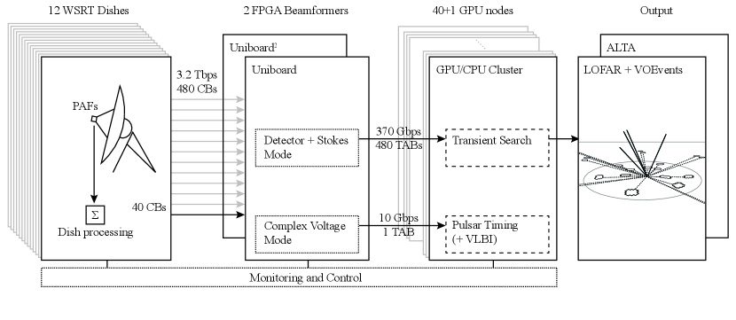
8.2 المُرابِط
لعمليات التصوير، يُنفذ مُرابِط ستوكس كامل. ويستند المُرابِط إلى بنية FX. يعرض الشكل 28 نظرة عامة وظيفية. أولاً، يرشح بنك مرشحات متعدد الأطوار النطاقات الفرعية ذات العرض 781 250 Hz إلى 64 قنوات (أو قنوات دقيقة) عرض كل منها 12.2 kHz. ثم ينفذ المُرابِط الترابط المتبادل بين جميع أزواج مداخل التلسكوب البالغ عددها 24 (12 تلسكوبات مضروبة في 2 استقطابات). ويحسب المُرابِط 276 ترابطات متبادلة و24 ترابطات ذاتية، أي 300 رؤى تداخلية، لجميع القنوات 24 576 في جميع الحزم المركبة البالغ عددها 40. وتُكامل حواصل الضرب المتبادلة لمدة 1.024 s. وبعد كل فاصل تكامل، تُرحّل الرؤى التداخلية إلى كاتب البيانات. ويتولى MAC التشغيل السليم للمُرابِط، وهو يتعلق أساساً برصد الدخل وتهيئة الخرج، لأن المُرابِط نفسه لا يملك تحكماً.
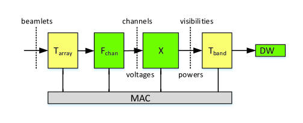
يستخدم مُرابِط Apertif 16 لوحات معالجة UniBoard. ولزيادة عدد المداخل البصرية إلى المُرابِط، تُوصل 16 لوحات بصرية-كهربائية (OEB) مباشرة إلى Uniboards (انظر الشكل 29). وفي تطبيق مُرابِط Apertif، تمتلك جميع FPGAs البالغ عددها 8 على UniBoard الدالة نفسها. ولكل FPGA عدد 3 من وصلات 10G، وبذلك تتعامل UniBoard واحدة في المجموع مع 24 وصلات 10GbE من الأطباق. وهذا مقدار IO يكفي بالكاد للاتصال بوصلات 24 10GbE التي تعالجها كل لوحة. وترابط كل FPGA في مُرابِط Apertif جميع الرؤى التداخلية 300 من مداخل التلسكوب 24. وتخرج الرؤى التداخلية، وهي تيار بيانات قدره 18.4 Gbps، عبر واجهات 1GbE على UniBoards وتصل عبر 4 واجهات 10GbE إلى كاتب البيانات، انظر الشكل 23. وتُنفذ دالة إعادة الترتيب (Tband) من خلال مفاتيح Ethernet.
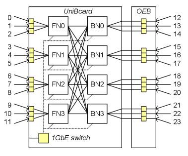
8.3 كاتب البيانات
الهدف الرئيس من كاتب البيانات هو اختزال البيانات. يقدم المُرابِط بيانات رؤى تداخلية مكاملة لمدة تقارب ثانية واحدة، لكن المتطلبات العلمية الخاصة بتلطيخ الزمن تسمح بتكامل إضافي للبيانات حتى نحو 30 s، مما يعطي اختزالاً للبيانات بعامل ثلاثين. ثانياً، يطبق كاتب البيانات تصحيحات طور على قنوات التردد الفردية داخل النطاقات الفرعية التي تشكلت في مشكل الحزم المركبة عند الأطباق. ويلزم هذا التصحيح لتجنب تغيرات طور تصل إلى  درجة بين أدنى القنوات وأعلاها في نطاق فرعي للحزم المركبة الأكثر ابتعاداً عن المركز. وينشأ ميل الطور عبر النطاق للحزم المركبة خارج المركز لأن تتبع التأخير (DT) هو نفسه لجميع CBs ومثالي فقط للحزمة المركزية. وأخيراً، يكتب كاتب البيانات بيانات الرؤى التداخلية في مجموعات قياس منفصلة، واحدة لكل حزمة مركبة. وتُضاف إلى كل مجموعة قياس جميع البيانات الوصفية اللازمة لوصف البيانات وصفاً كاملاً، مما يضمن أن كل منتج بيانات موصوف ذاتياً بالكامل.
درجة بين أدنى القنوات وأعلاها في نطاق فرعي للحزم المركبة الأكثر ابتعاداً عن المركز. وينشأ ميل الطور عبر النطاق للحزم المركبة خارج المركز لأن تتبع التأخير (DT) هو نفسه لجميع CBs ومثالي فقط للحزمة المركزية. وأخيراً، يكتب كاتب البيانات بيانات الرؤى التداخلية في مجموعات قياس منفصلة، واحدة لكل حزمة مركبة. وتُضاف إلى كل مجموعة قياس جميع البيانات الوصفية اللازمة لوصف البيانات وصفاً كاملاً، مما يضمن أن كل منتج بيانات موصوف ذاتياً بالكامل.
جُهز Apertif بنظامي كاتب بيانات متطابقين يُستخدمان بالتناوب لتجنب اضطرار عقدة واحدة إلى الكتابة والقراءة بمعدل بيانات عالٍ في الوقت نفسه. وبينما تسجل عقدة واحدة رصدة جارية، تُرحّل مجموعة بيانات الرصدة السابقة إلى عنقود ما بعد المعالجة. وتضم كل عقدة كاتب بيانات وحدة CPU من نوع Intel Xeon E5-2630 v3، لها ثماني نوى فيزيائية مع تعدد خيوط؛ و64 GiB من RAM؛ وثمانية أقراص 4 TB مهيأة في RAID-6، بما يعطي تخزيناً صافياً قدره 24 TB؛ وأربع واجهات شبكة 10GbE. وقد أُدخلت عدة تعديلات على تهيئة النظام لتحسين التعامل مع كميات كبيرة من رزم UDP الواردة.
قارئ الدخل هو الجزء الأكثر حرجاً من حيث الأداء في برمجيات كاتب البيانات. إذ يجب أن يتعامل مع تيار بيانات UDP وارد يبلغ نحو 19 Gbps. ويحتوي رأس كل رزمة بيانات على طابع زمني. وبما أن رزم البيانات قد لا تصل بالترتيب الزمني الصحيح، يجب على قارئ الدخل إعادة ترتيبها. وتُستبعد فوراً الرزم ذات الطابع الزمني الواقع بعد زمن توقف الرصدة. يستخدم كاتب البيانات طابور جهد أفضل يتكون من عدد من كتل التكامل المسماة. وتحتوي كل كتلة تكامل على رزم بيانات مرتبطة بفاصل تكامل معين، يُحدد بواسطة الطابع الزمني في الرأس. وتُنشأ كتلة تكامل جديدة في طابور الجهد الأفضل عندما ينتمي الطابع الزمني في الرزمة إلى فاصل التكامل التالي. وإذا لم يستطع كاتب الخرج مواكبة ذلك، فقد يمتلئ طابور الجهد الأفضل. وفي هذه الحالة، لا يمكن إنشاء كتلة تكامل جديدة، وتُسقط رزمة البيانات الواردة.
من أجل تقليل حجم منتجات البيانات قدر الإمكان، تُكامل بيانات الرؤى التداخلية زمنياً بدرجة أكبر بواسطة كاتب البيانات. ومن الناحية النظرية كان يمكن للمُرابِط فعل ذلك بالفعل، لكن لوحات UniBoards لا تملك ذاكرة كافية للتخزين المؤقت. كما يتولى كاتب البيانات تجميع الرايات المختلفة التي يمكن تعيينها للإشارة إلى مشكلات في البيانات. وتُستأصل البيانات ذات الرايات عند أخذ المتوسط. لذلك يجب تسجيل مركز الزمن لكل قناة ترددية مكاملة بوصفه بيانات وصفية في مجموعة القياس، وكذلك الوزن الذي يلزم تطبيقه لتطبيع البيانات.
لا ينفذ مشكل الحزم في PAF إيقاف الأهداب إلا لكل نطاق ترددي فرعي. غير أنه عندما يُقسم كل نطاق فرعي بعد ذلك إلى قنوات عند المُرابِط، نحتاج إلى تصحيح ميل الطور المتبقي بين أدنى قنوات التردد وأعلاها في ذلك النطاق الفرعي. وإذا لم نصحح ذلك، فقد يصبح خطأ الطور المتبقي كبيراً إلى حد درجة للحزم المركبة الأكثر ابتعاداً عن المركز.
كاتب الخرج مسؤول عن كتابة الرؤى التداخلية المكاملة والموقوفة الأهداب لكل حزمة مركبة إلى مجموعة قياس منفصلة، مع جميع البيانات الوصفية اللازمة لجعل مجموعة القياس موصوفة ذاتياً بالكامل. وتتم كل معالجة البيانات على بيانات مخزنة في إحدى كتل التكامل في طابور الجهد الأفضل. وعندما تُعالج جميع بيانات كتلة تكامل معينة، تُكتب إلى القرص. ويتعامل كاتب الخرج مع ما يصل إلى أربع حزم مركبة بالتوازي.
9 التحكم البرمجي
9.1 نظام الرصد والتحكم
يضطلع النظام الفرعي للرصد والتحكم (MAC) في Apertif (Loose 2016) بأربع مسؤوليات رئيسة:
-
•
توزيع المعلومات
-
•
حل القضايا المتعلقة بالتوقيت والتسلسل
-
•
التحكم في جميع العتاد المعني والموزع على مواقع كثيرة
-
•
توفير معلومات الرصد لتتبع الحالة والحوادث
تستند بنية النظام الفرعي MAC إلى مكونات مقترنة اقتراناً ضعيفاً تتواصل عبر ناقل رسائل. وتضمن تقنية ناقل الرسائل، من بين أمور أخرى، تسليم المعلومات المضمون، والاستمرارية عند الحاجة، وتوزيع المعلومات على آلات متعددة، وتحل كثيراً من نماذج الاتصال الأخرى. واستكمالاً لهذه التقنية، طُورت مكونات كثيرة لتنفيذ الوظائف المطلوبة لطبقة MAC في Apertif. وبما أن تبادل المعلومات بين المكونات سهل وموثوق، يمكن إبقاء نطاق كل مكون صغيراً، مما يجعل كل مكون أقل تعقيداً. ويعرض الشكل 30 التصميم عالي المستوى لنظام MAC.
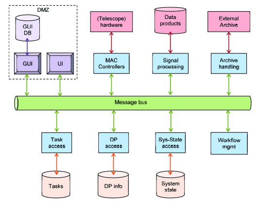
أساس توزيع المعلومات هو تقنية ناقل الرسائل. وقد اخترنا استخدام حزمة QPID مفتوحة المصدر، المبنية على معيار الرسائل المدعوم على نطاق واسع AMQP 1.0. وتوفر هذه الحزمة مزايا كثيرة مثل التسليم المضمون، والتوجيه، ودعم الآلات المتعددة، والعمر المضبوط للرسائل، والاستمرارية، والبث، وغير ذلك. وفوق هذه المزايا، طُورت طبقة رقيقة لـ Apertif لتبسيط نماذج الاتصال مثل النشر-الاشتراك، واستدعاء الإجراءات عن بُعد، والتوزيع ثم الجمع. وعلاوة على ذلك، عرّفنا فئات رسائل مختلفة مثل الأمر، والحدث، والإخطار، وغيرها، ولكل منها خصائصها التي تخدم طريقة تبادل المعلومات الخاصة بها.
9.2 مكونات MAC
لإنشاء نظام MAC موثوق، عرّفنا أيضاً سلوك أي مكون يشكل جزءاً من نظام MAC. وهذا يعني أن أي شكل من الاتصال بين مكونين أو أكثر مُعرّف ومفهوم جيداً. وللمضي خطوة أخرى، طورنا إطار عمل للمكونات ينفذ سلوك الاتصال المطلوب هذا. وتحت حراسة المؤقتات ومع التقاط الاستثناءات، ينتظر إطار العمل الرسائل على ناقل الرسائل، وينفذ كود المستخدم المناظر، ثم يرسل استجابة إلى ناقل الرسائل. ويقدم إطار العمل فوائد كثيرة: إذ تُنفذ جميع نماذج الاتصال مرة واحدة فقط، مما يقلل الصيانة ويبسطها إلى حد كبير، كما يُختزل تنفيذ مكون بواسطة المطور إلى تنفيذ الوظيفة اللازمة للتعامل مع الرسائل.
يعطي المخطط في الشكل 31 رؤية تخطيطية لمكون Apertif.
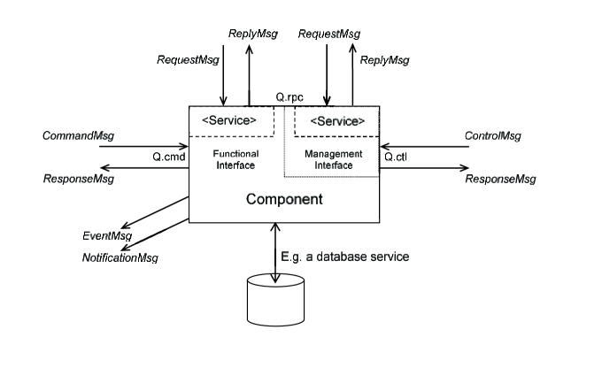
يحتوي نظام Apertif حالياً على ثلاثة متحكمات للتحكم في جميع العتاد: DirectionController وSignalController وCorrelatorController. وهناك نسخة واحدة من DirectionController مسؤولة عن توجيه جميع أطباق Apertif البالغ عددها 12. وللتحكم في جميع العتاد الآخر الموجود عند كل تلسكوب، مثل DCUs وLOGs وPACs وADUs وUniBoards، يمتلك كل تلسكوب SignalController خاصاً به. ويُعد التحكم في كل هذه اللوحات، التي يزيد عددها على 60 لكل تلسكوب، مهمة معقدة نظراً إلى الاعتماديات المتبادلة بين اللوحات. ولإعداد التلسكوب لرصدة، يجب فحص أو ضبط إعدادات كثيرة لكل من تيارات البيانات 121 التي ستأتي من PAF. ولا يمكن للتلسكوب المشاركة في الرصدة إلا عندما تكون جميع الإعدادات صحيحة. ويمكن أن تستغرق تهيئة جميع اللوحات ما يصل إلى نحو 6 ثانية عندما تحتاج جميع اللوحات إلى إعادة ضبط، وخلال هذه الفترة يجب ألا تتداخل أوامر أخرى مع تسلسل التهيئة المعقد. ويتولى إطار عمل المكونات هذا الأمر، ومن ثم لا يحتاج المطور إلى كود إضافي لإنجازه. ويكون CorrelatorControl مسؤولاً عن تهيئة تيارات الدخل 384 من التلسكوبات بالطريقة الصحيحة، وكذلك عن تهيئة تيارات خرج المُرابِط بحيث تتصل بالآلة التي يُشغّل عليها DataWriter.
9.3 الرصد
يمكن رصد النظام بطريقتين: نشطة وسلبية. يمكن أن يتم الرصد النشط بإرسال رسالة طلب إلى مكون ليبلغ عن صحته أو إعداداته أو معلومات أخرى. عندئذ ينفذ إطار عمل المكونات كود المستخدم المرتبط لجمع هذه المعلومات ويرسل الجواب إلى الطالب. ولجمع معلومات النظام كله يجب استطلاع جميع المكونات.
وطريقة أخرى لرصد النظام هي أن يدع كل مكون نفسه يبلغ عن تغيرات حالة الجزء الذي يتحكم فيه من النظام. ولدعم ذلك، ينفذ إطار عمل المتحكمات جدولاً يمكن أن يحتوي على أوامر ستنفذ عند فاصل معين. واعتماداً على تنفيذ الأمر بواسطة المطور، يمكن للأمر أن يسلم جميع القيم الحالية في رسالة إخطار أو أن يسلم فقط الفروق منذ آخر مرة نُفذ فيها في رسالة حدث. وفي هذه الحالة، يتلقى مكون الرصد جميع الإخطارات والأحداث، ويسجل المعلومات في قاعدة بيانات. وهذا يتيح تنفيذاً سهلاً لجمع اتجاهات القيم. ويمكن لمكون الرصد إرسال رسائل إنذار عندما تخرج قيم أو تركيبات من القيم عن حدودها. وفي Apertif نفذنا الآلية السلبية، لكن لا يزال يمكن جمع المعلومات بطريقة نشطة أيضاً.
9.4 ARTAMIS
لجمع بيانات الرصد وعرضها لمشغل Apertif والمهندسين، استخدمنا إطار WinCC-OA Scada من Siemens. يوفر WinCC-OA وظائف مثل قاعدة بيانات أحداث في الزمن الحقيقي، والأرشفة، والإنذار، وتطوير واجهة GUI، في مجموعة أدوات واحدة. وبما أنه حزمة واحدة، فإن تثبيت الوظائف المطلوبة وتنفيذها سهلان ومباشران. ولكي نستطيع تخزين بيانات الرصد المجمعة في قاعدة البيانات، كان علينا إنشاء مكون برمجي يجمع البيانات من ناقل رسائل QPID (انظر القسم 9.1) ويترجم تلك الرسائل إلى نقاط قاعدة البيانات الملائمة في قاعدة بيانات WinCC-OA. وبعد دخولها إلى قاعدة البيانات، يمكن استخدام الأدوات التي يوفرها WinCC-OA لمعالجة تلك البيانات وإنذارها وتصويرها.
سُميت الأداة الخاصة التي طورناها لـ Apertif باسم ARTAMIS، وهو اختصار لعبارة ”All-Round Telescope Array Monitoring and Information System”. يمكن تسجيل الدخول إلى ARTAMIS عبر أداة سطح مكتب مخصصة، أو عبر واجهة قائمة على الويب، مما يتيح رصد النظام بنشاط من أي موقع: غرفة تحكم المشغل في مبنى ASTRON الرئيس، أو غرفة التحكم القائمة في WSRT، أو منزل المشغل، أو أي موقع متصل آخر. وقد ثبت أن هذه المرونة أساسية في فترة COVID-19 الأخيرة، حين قُيد الوصول إلى مبنى ASTRON بشدة بسبب اللوائح الحكومية. يوفر ARTAMIS رؤى متعددة للنظام: رؤى هرمية قائمة على مكونات العتاد على مقاييس مختلفة (Array -¿ Telescope -¿ Beamformer -¿ Uniboards)، حتى مستوى اللوحات الإلكترونية الفردية. وعلاوة على ذلك، نوفر رؤية متمركزة حول تيار البيانات تعرض طوبولوجيا الشبكة وتيارات البيانات العلمية عبر الشبكة من الاستقبال إلى التخزين. وهذه الرؤى متكاملة، وتعتمد الرؤية الأكثر فائدة على مقصد المستخدم. وفي الشكل 32 نعرض مثالاً على لقطة شاشة لواجهة المستخدم الرسومية. وبصرف النظر عن رؤية العتاد، يوفر ARTAMIS رؤى لجدول ATDB (انظر القسم 9.5)، وللأرشيف (انظر القسم 10)، وكذلك للحالة الحالية للتلسكوبات غير APERTIF. وهكذا بنينا باستخدام ARTAMIS أداة واحدة لرصد نظام WSRT بأكمله.
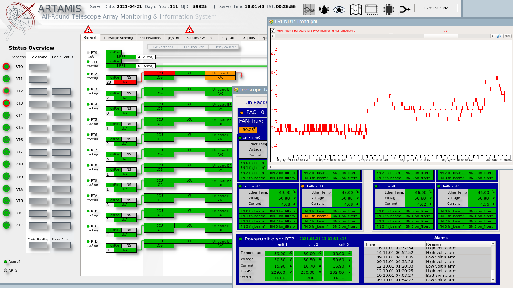
9.5 قاعدة بيانات مهام Apertif
تشكل قاعدة بيانات مهام Apertif (ATDB) جوهر البرمجيات التشغيلية لـ Apertif. فاستناداً إلى جدول المسح الذي يقدمه الفلكيون، تدير ATDB ذاتياً التدفق التشغيلي الكامل، بدءاً من إرسال معلمات الرصد إلى نظام التلسكوب، وصولاً إلى إدخال البيانات في أرشيف Apertif طويل الأمد (ALTA)، وإزالة البيانات الخام من كتاب البيانات. وعلى الرغم من أنها ذاتية، توفر ATDB أيضاً واجهة ويب رسومية للتحكم الدقيق بواسطة المشغلين لاستكشاف الأخطاء وإصلاحها، وإجراء تغييرات في تدفق البيانات أثناء العملية. ويمكن للفلكيين استخدام ATDB لتأهيل الأرصاد بوصفها جيدة أو سيئة، وبعد ذلك تُرسل إشارة إلى ALTA إما لإزالة البيانات من الأرشيف أو نقلها إلى مرفق التخزين البارد لدينا في SURF.
ATDB تطبيق ويب يتكون من قاعدة بيانات مركزية، يحيط بها نمط من الخدمات المصغرة التي تنفذ جميعها مهام فردية بناءً على حالة رصدة في قاعدة البيانات المركزية. ومن سمات ATDB المثبتة للاستقرار أن كل المنطق المطلوب موزع على خدمات صغيرة مستقلة تعمل على عدد كبير من الآلات المختلفة، لكنها جميعاً تتواصل مع قاعدة البيانات المركزية. وتُبنى الخدمات وتشغل بطريقة تعيد تشغيلها كلما فشلت لأي سبب، بحيث يمكن النظر إلى الآلية على أنها ذاتية التصحيح. ويمكن أيضاً إيقاف خدمات منفردة وتغييرها دون التأثير في بقية النظام. لذلك يمكن أن تبقى الواجهة الخلفية المركزية لـ ATDB بسيطة ومستقرة، مما يحد من الصيانة ومن خطر إدخال علل. وفي سنوات التشغيل المستمر 2.5، لم تفشل ATDB إلا مرة واحدة بسبب عطل عتادي في حاسوب ارتفعت حرارته.
10 أرشيف Apertif طويل الأمد (ALTA)
يوفر أرشيف Apertif طويل الأمد (ALTA) (Holties et al. 2019) قدرات تخزين ونشر للبيانات العلمية التي يولدها نظام Apertif. ويدعم عمليات التلسكوب بتوفير قدرات إدخال بيانات مستمرة. كما يدعم العلماء بقدرات إدارة بيانات تشمل عروضاً عامة لمجموعات البيانات المرصودة والمعالجة، واختيار البيانات واسترجاعها، وتعليقات الجودة، ومرافق إدخال منتجات البيانات المشتقة. وتُنشر منتجات البيانات المُفرج عنها إلى المجال العام من خلال ALTA. وتوفر واجهة مستخدم وتطبيق قائمة على الويب الوظائف المطلوبة للمجموعات المستهدفة من المستخدمين للتفاعل مع ALTA. ويقدم الشكل 33 نظرة عامة على نظام ALTA ومكوناته الرئيسة والأنظمة الخارجية الرئيسة المتصل بها.
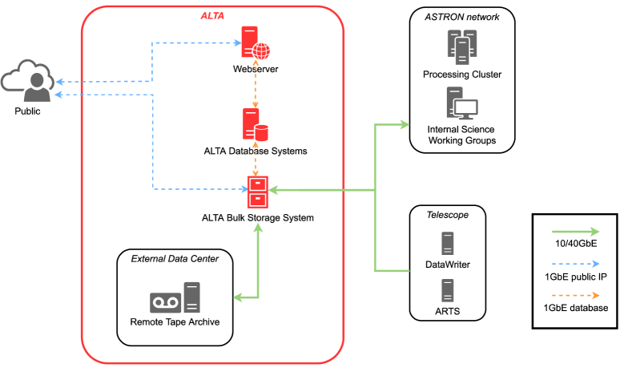
صُمم ALTA لجمع وإدارة ملايين منتجات البيانات بحجم إجمالي يبلغ عشرين بيتابايت على مدى العمر التشغيلي لأداة Apertif. وتستند وصلات الشبكة الداخلية والخارجية لنقل البيانات إلى تقنيتي Ethernet 10 و40 Gbps. ويشمل ALTA موارد تخزين في موقعين: يستضيف ASTRON تخزيناً متصلاً يوفر 1.8 بيتابايت من السعة لدعم سير عمل التلسكوب التشغيلي وسير عمل التحليل لفرق المسح. أما التخزين طويل الأمد القائم على الأشرطة للبيانات «الباردة» فيستضيفه SURF، وهو المركز الوطني الهولندي لدعم HPC والعلوم الإلكترونية. ويدعم الطرف الخلفي القريب/الشريطي نمواً سنوياً يصل إلى أربعة بيتابايت.
يوفر إطار iRODS88 8 https://irods.org/ الأساس لمكونات إدارة البيانات في ALTA. يتيح هذا الإطار نشر موارد التخزين في ما يسمى مناطق. وتمثل المناطق عادة موارد تخزين مدارة على نحو مستقل ويمكن ربطها بموارد تستضيفها منظمات مختلفة. وبالنسبة إلى ALTA، أُنشئت منطقة واحدة تمتد عبر موارد iRODS في كل من ASTRON (أربعة خوادم بيانات) وموقع SURF (خادم واحد متصل بالطرف الخلفي الشريطي)، لأنها تُدار مركزياً بوصفها بيئة تخزين واحدة. وتُنفذ الوظائف المدمجة بلغة Python، وتُشغل بوصفها خدمات مجدولة في بيئة iRODS. تتحقق هذه الخدمات من منتجات البيانات أثناء عملية الإدخال، وتستخرج البيانات الوصفية التي تُدمج في قاعدة البيانات، وتولد مخططات فحص لتقييم جودة البيانات، وتتعامل مع الهجرة بين التخزين على القرص والتخزين على الشريط استناداً إلى مجموعة سياسات. ويتيح النظام تنفيذ خدمات موجهة للمستخدمين مستقبلاً مثل القص الصوري عند الطلب والتجميع.
يستند نموذج بيانات ALTA إلى نموذج بيانات LOFAR، وقد صُمم بحيث يسهل ربطه ببنى بيانات متوافقة مع VO. ولإدماج النسب الكامل للبيانات، استُلهم نموذج النسب من W3C provenance وعدل لتلبية قيود نموذج بيانات ALTA. وعلى وجه الخصوص، فإن نموذج النسب في ALTA موجه بقوة إلى العمليات، مما يتيح فحص السلسلة الكاملة لخطوات المعالجة ومنتجات البيانات الوسيطة بدءاً من الأرصاد. وتخزن قاعدة بيانات علائقية مركزية من نوع Postgresql بيانات ALTA الوصفية باستخدام مخطط يطابق بنية نموذج بيانات ALTA عن قرب، وهي مكشوفة بالكامل عبر واجهة REST من خلال واجهة مستخدم الويب.
تتكون مكونات GUI وAPI في ALTA من واجهة أمامية تفاعلية قائمة على javascript وواجهة خلفية RESTful. وتستند الواجهة الخلفية إلى Django99 9 https://www.djangoproject.com/ وإطار Django REST1010 10 https://www.django-rest-framework.org/، وتتعامل مع التفاعل مع قاعدة البيانات ومكونات إدارة البيانات، سواء للواجهة الأمامية أو بوصفها API لأغراض الأتمتة. وتتطلب البيانات والمعلومات غير المُفرج عنها بعد إلى المجال العام حساباً ذا تفويض ملائم.
تتاح مجموعات بيانات ALTA للعامة عبر عملية إفراج تُوسم فيها الأرصاد وتشغيلات خط المعالجة ثم تُعرض للمستخدمين المجهولين لواجهة الويب في ALTA. وتتاح منتجات البيانات المرتبطة للاسترجاع عبر بروتوكول WEBDAV. ولا تتاح كل البيانات للوصول الفوري، ولا سيما المنتجات المخزنة على الأشرطة. وينطبق ذلك أساساً على منتجات البيانات ذات المستوى الأدنى مثل بيانات السلاسل الزمنية، والرؤى التداخلية غير المعايرة والمعايرة، وجداول المعايرة التي يولدها خط المعايرة. ويُوجه المستخدمون إلى خدمة مكتب المساعدة إذا رغبوا في استرجاع منتجات بيانات غير متاحة فوراً. وتُسجل الأرصاد وتشغيلات المعالجة ومنتجات البيانات المرتبطة المُفرج عنها في خادم المرصد الافتراضي في ASTRON، الذي يشغل برمجية GAVO DaCHS1111 11 https://dachs-doc.readthedocs.io، ومنه تصبح قابلة للاكتشاف والوصول عبر أدوات عميل قياسية واعية بـ VO. وقد نُشر أول إصدار بيانات علمية مدعوم من ALTA في تشرين الثاني/نوفمبر 20201212 12 http://hdl.handle.net/21.12136/B014022C-978B-40F6-96C6-1A3B1F4A3DB0.
11 العمليات
يُشغّل تلسكوب WSRT-Apertif أداةَ مسح تجري مسوحاً في كل من نمط التصوير ونمط المجال الزمني (المصفوفة المترابطة). وتدعم العملياتَ كل من مراقبي ASTRON والفلكيين من الفرق العلمية. وقد صُممت العمليات وتُنفذ لدعم نمط الرصد المسحي المخصص هذا. وتواتر الرصد هو أسبوعان إلى ثلاثة أسابيع من أرصاد المسح المخصصة. وفي نهاية فترة رصد، تُجرى صيانة النظام. وبعد ذلك، يُجرى قياس أوزان الحزم. ثم تُستخدم أوزان الحزم هذه طوال فترة الرصد التالية. ويمكن العثور أدناه على مزيد من المعلومات عن كيفية تصميم العمليات وتنفيذها يومياً.
11.1 تصميم عمليات Apertif
أوجد تركيز Apertif على إجراء مسوح كبيرة بطريقة منهجية فرصة لتصميم سير عمل تشغيلي يلائم هذا السياق. وكما هي الحال في كثير من الأدوات والتلسكوبات الجديدة، كانت الحدود بين التشغيل التجريبي وعمليات المسح غير حادة، مما عنى أننا احتجنا إلى الاستفادة من خبرة التشغيل التجريبي إلى أقصى حد ممكن للاستعداد لعمليات المسح الكاملة. وخلال هذه الفترة، وُضع تركيز قوي على الأتمتة وسير العمل الانسيابي لضمان أقصى كفاءة ممكنة بموارد محدودة. وسعينا إلى تقليل المواضع في تدفق البيانات التي تعتمد على اتخاذ البشر للقرارات بهدف الحد من أي اختناقات محتملة، وهو ما مثّل في بعض الحالات انحرافاً عن الخطط الأولية لتدفق بيانات Apertif. وتطلب ذلك النظر نقدياً في كل مرحلة من الرصد وتحديد الخطوات التي يمكن أتمتتها لتقليل هذه المخاطر.
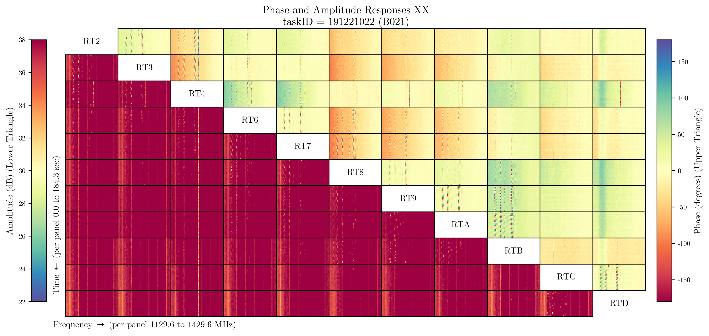
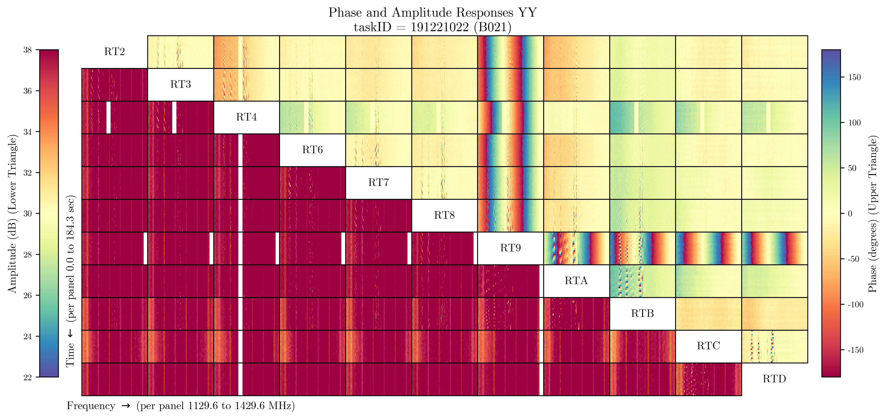
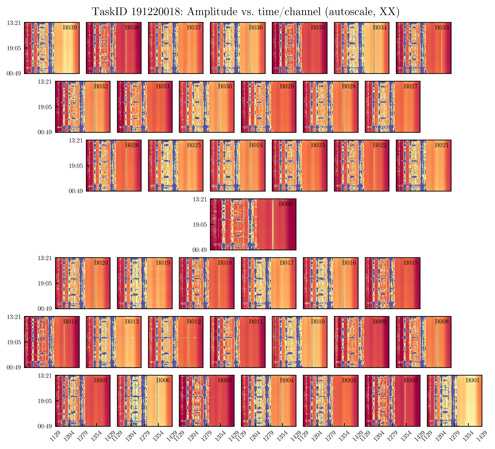
تشمل القرارات التي اتخذناها خلال هذه الفترة، مدفوعة بما سبق، ما يأتي:
-
•
معلمات مواصفة نظام موحدة قابلة للقراءة آلياً لكل من التصوير وARTS: حددنا المعلمات الأساسية المطلوبة من كل فريق ووحدناها في صيغة واحدة قابلة للقراءة آلياً، تعمل مدخلاً إلى أداة مفسر الجدولة (ATDBSpec، الموصوفة أدناه). وتطلب ذلك تكراراً خلال مرحلة التشغيل التجريبي لضمان التقاط جميع المتطلبات، لكنه بقي من دون تغيير منذ بدء عمليات المسح الكاملة. ويمكن للفرق العلمية تحميل الجداول، وتُزامن تلقائياً مع نظام التلسكوب من ذلك الموقع المحمل. وقد طُورت هذه الصيغة القابلة للقراءة آلياً بحيث يمكن لأي مفسر مستقبلي أن يحل محل المفسر العامل حالياً (ATDBSpec).
-
•
ترجمة شبه آلية لملفات الجدولة إلى جدول النظام: بُنيت حزمة ATDBSpec بلغة Python لتقع بين ملفات الجدولة القابلة للقراءة آلياً ونظام التلسكوب. وتتصل ATDBSpec مباشرة بـ ATDB، مما يعني أنه بمجرد تشغيلها على ملف جدول معين، تُجدول الأرصاد في النظام ولا يلزم أي إجراء إضافي. ولم نؤتمت عملية التقاط ملفات الجدولة، لأن الإجراءات الحالية تتضمن اتخاذ مشغلي التلسكوب القرار النهائي بشأن ما إذا كان النظام جاهزاً للرصد قبل جدولة أي أرصاد. وقد وُسعت ATDBSpec لاحقاً لحساب جداول المسوحات الانجرافية، وأرصاد الاختبار، ومعايرة التوجيه، إضافة إلى التعامل مع ترجمة جداول المسح. وتعمل ATDBSpec بالكامل على سطر الأوامر، وطُورت بهدف تقليل الحاجة إلى التفاعل مع واجهة مرئية قدر الإمكان (توفر ATDB نفسها هذه الواجهة عند الضرورة)، وبنية تمكين العمليات الآلية المستقبلية من التفاعل معها عند الحاجة.
-
•
إعداد النظام آلياً: يمكن إعداد نظام Apertif بسهولة في أي نمط رصد باستخدام سكربت Python ذي معلمات دخل قليلة. يغلّف هذا السكربت سكربتات وأوامر إعداد النظام القائمة، ويجمع جوانب مختلفة من الإعداد في موقع واحد مع تحديد موحد للوسائط، وينفذ فحصاً للنظام في نهاية عملية الإعداد للتحقق مما إذا كان قد عمل كما هو متوقع. تطور سكربت Python هذا من سكربت shell طُور أثناء التشغيل التجريبي، وعُدل لجعل تغيير متغيرات الدخل مباشراً قدر الإمكان للعمليات. وخلال التشغيل التجريبي، وُجد أن من المهم جداً ضمان اتباع التسلسل الصحيح للخطوات في الأنماط التشغيلية المختلفة (مثل التصوير مقابل مسوح العوابـر، أو البدء “البارد” مقابل “الدافئ” للبرمجيات الثابتة، الذي يعيد ضبط حالة النظام أو يحافظ عليها)، ولذلك كان هذا السكربت حيوياً لإعداد الأشياء بالمعلمات الصحيحة.
-
•
عمليات معايرة شبه آلية: كيفنا دفاتر Jupyter التي استُخدمت في فترة التشغيل التجريبي (لضبط التأخير والطور) لتكون مؤتمتة قدر الإمكان. ويُستخدم دفتر Jupyter واحد للتحكم في العملية بأكملها، إذ يرسل الأرصاد اللازمة إلى النظام استناداً إلى الهوائيات المتاحة ويعالج النتائج بمخططات تشخيصية بصرية. ويمكن بعد ذلك للمشغل استخدام الدفتر لاتخاذ قرار تقديري بشأن عملية المعايرة. وباستخدام نهج دفتر Jupyter المستضاف على الخادم الداخلي مع الوصول إليه عن بُعد عبر VPN، يمكن إعداد النظام من أي موقع. وبعد اعتماد نتائج المعايرة، تُنسخ جميع ملفات النظام ذات الصلة إلى الموقع الصحيح وتصبح نشطة فوراً. تعمل هذه العملية على نحو معقول، لكن لو توافر مزيد من الوقت والموارد لكنا استهدفنا أيضاً أتمتة التحقق من صحة عملية المعايرة والاستغناء عن نهج الدفتر.
-
•
توليد تلقائي لتشخيصات البيانات الخام: لتوفير وسيلة لتقييم جودة البيانات بسهولة في المرحلة بين الرصد والمعالجة، صُممت سلسلة من المخططات التشخيصية. تقطع هذه المخططات البيانات عبر أبعاد مختلفة ذات صلة من الزمن والتردد والسعة والطور لجعل الاتجاهات (ولا سيما البيانات السيئة) ظاهرة بسهولة. وتُولد هذه المخططات تلقائياً بمجرد رفع البيانات بنجاح إلى ALTA، وتُربط مباشرة في الأرشيف الإلكتروني بـ TID ذي الصلة. ويُولد إجمالي 18 تشخيصاً للبيانات الخام (يغطي كلاً من استقطابي XX/YY) لكل رصدة تصويرية، بما في ذلك المخططات الشلالية المعروضة أمثلةً في الشكلين 34 و35.
-
•
إرسال المخططات التشخيصية الآلية إلى Slack للتشخيص الفوري بواسطة مشغلي الخط الأول: أُعد crontab لرصد الأرصاد الواردة، وتوليد مخططات تشخيصية تلقائياً إذا كُشف أن الرصدة لمعاير. وللتصوير، يُولد مخطط شلالي زمن-تردد للسعة/الطور لكل زوج هوائيات مترابط للحزمة التي تحتوي المعاير لاستقطابي XX/YY، ويُرسل إلى قناة العمليات ذات الصلة (#apertif-verification) في مساحة ASTRON على Slack. والشكل 34 مثال على هذه المخططات التشخيصية بعينها. وفي حالة أرصاد المجال الزمني، أُعد crontab على عنقود ARTS لرصد إنتاج المخططات التشخيصية المحلية من الأرصاد. وتلتقط هذه الخدمة توليد المخططات الجديدة وترسلها إلى القناة نفسها في Slack، مما يسمح بالتحقق من جودة بيانات المجال الزمني أيضاً. وتوفر هذه النهوج طريقة سريعة وسهلة الوصول للتحقق من نتائج ضبط المعايرة ورصد حالة جودة المعاير أو الرصد من أي موقع.
-
•
رصد آلي وإخطارات بشأن مساحة القرص: أُعد crontab لمراقبة مساحة القرص على كل من كتاب البيانات وخادم معالجة التصوير، مع إخطارات عند تجاوز حدود معينة تُطلق تحذيرات تُرسل إلى Slack (#apertif-happili) على فواصل منتظمة. وقد ساعد إرسال هذه التحذيرات إلى موقع مركزي يسهل الوصول إليه كثيراً في ضمان ردود فعل في الوقت المناسب لمشكلات مساحة القرص وزيادة شفافية حالة القرص الحالية.
-
•
تحفيز خط معالجة التصوير آلياً: وسعنا سير العمل الآلي لـ Apertif من العمليات إلى المعالجة عبر حزمة Autocal. تقع هذه الحزمة بين ALTA وخط التصوير Apercal، وتلتقط تلقائياً الأرصاد الجديدة التي تمررها إلى خط المعالجة. وفي شكلها الحالي، تحدد Autocal تلقائياً الأرصاد التي هي أهداف، ثم تسعى إلى مطابقة أرصاد معايري الفيض والاستقطاب 40 الموجودة عموماً على جانبي الهدف. تنشأ التعقيدات في Autocal من الحاجة أحياناً إلى جدولة أهداف متعددة على التوالي، ومن حقيقة أن الأرصاد ليست كلها ناجحة (مما يعني أنها تحتاج إلى تحديد حالة الأرشيف لكل حزمة معاير والتعديل وفقاً لذلك)، ومن الاستثناءات للجدولة العادية والأخطاء في الجدولة إما بسبب النظام أو إدخال المشغل. تؤدي Autocal عموماً أداءً مساوياً أو أفضل من الإنسان في بدء خط المعالجة تلقائياً، وتعمل 24/7 بسلوك منهجي قابل للتكرار، مما يضمن كفاءة عالية لمعالجة تصوير Apertif. وعند تحفيز خط Apercal، ترسل رسالة إخطار إلى قناة Slack ذات الصلة (#apercal-notifications) وتبلغ أيضاً عند اكتمال المعالجة. وقد وُسعت Autocal أيضاً لتحفيز جزء تقييم الجودة من تصوير Apertif، وهي تعد وتنفذ إدخال منتجات البيانات المعالجة مرة أخرى إلى ALTA. ويمكن العثور على مزيد من التفاصيل عن كل من Autocal وApercal في ورقة Apercal (Adebahr et al., قيد الإعداد).
كانت جهودنا لتنفيذ أكبر قدر ممكن من الأتمتة في عمليات مسح Apertif مدفوعة بالرغبة في ضمان استثمار الجهد البشري بفعالية. وقد أتاح ذلك للعمليات أن تسير عموماً بسلاسة، وتميل معظم القضايا التي ظهرت إلى أن تكون ناتجة عن مشكلات حقيقية في النظام أو خطأ بشري لا عن مشكلات في النهوج الآلية. وكان إزالة عمليات اتخاذ القرار اليدوية قدر الإمكان من مسارات سير العمل الحرجة جزءاً أساسياً من ضمان عمليات Apertif مستدامة ضمن قيود الموارد. فعلى سبيل المثال، تُدخل البيانات تلقائياً إلى ALTA من دون انتظار قرار بشري بشأن الجودة، مما يضمن بقاء كتاب البيانات فارغين ويؤجل تقييم الجودة إلى مرحلة لاحقة. وعند التأمل، يتضح أن هناك سبلًا إضافية يمكن بها تحسين عمليات الأتمتة هذه وتبسيطها، ونأمل أن نرى تقدماً مستمراً في الأتمتة بوصفها جزءاً رئيساً من سير عمل المراصد، سواء لـ Apertif أو للتلسكوبات في أنحاء العالم.
11.2 العمليات اليومية
تُعد الأدوات التشغيلية الموصوفة أعلاه جزءاً حاسماً من العمليات اليومية للرصد باستخدام Apertif. ويشمل روتين العمليات الجوانب الرئيسة الآتية:
-
•
الرصد اليومي: تُرصد يومياً كل من حالة النظام وجودة الأرصاد، بواسطة المشغلين والفلكيين على حد سواء. يوفر ARTAMIS (القسم 9.4) معلومات عن الحالة الفورية للنظام، عبر سلسلة النظام الكاملة، من موضع توجيه الأطباق إلى حالة الإلكترونيات والعتاد وصحتهما وصولاً إلى إشغال البيانات في العناقيد المختلفة المتصلة (ALTA، عنقود ARTS، كاتب البيانات). ويُعد رصد مساحة البيانات المتاحة واتخاذ إجراءات لضمان مساحة كافية لاستمرار الرصد جزءاً أساسياً من العمليات اليومية. وتوفر المخططات التشخيصية الموصوفة أعلاه رؤية أولى لجودة البيانات المسجلة، وتُفحص بانتظام لضمان أن الأرصاد الجارية تلبي الحد الأدنى من المتطلبات العلمية. وبوجه عام، يُستخدم رصد النظام وجودة البيانات لإرشاد خطة الصيانة.
-
•
الصيانة: كل أسبوعين إلى ثلاثة أسابيع، تُوقف أرصاد المسح مؤقتاً لأجل صيانة النظام. وفي ظروف استثنائية، قد تقاطع الصيانة أرصاد المسح المخطط لها إذا لزم الأمر لإعادة نظام Apertif إلى حالة تشغيلية تفي بالحد الأدنى من المتطلبات العلمية للرصد. وتشمل الصيانة كلاً من مكونات العتاد والبرمجيات في Apertif. تركز صيانة العتاد أساساً على صحة أطباق WSRT (أي التوجيه) وإصلاح مسار الإشارة لعناصر هوائية منفردة في PAF. وبما أن Apertif في نمط تشغيلي نشط، فإن صيانة البرمجيات تركز على إصلاحات العلل الضرورية وترقيات أنظمة التشغيل، مع نشر وظائف صغيرة جديدة أحياناً تحسن التدفق التشغيلي.
-
•
إعداد النظام: بعد اكتمال الصيانة، يجب إعداد النظام لاستئناف أرصاد المسح. ويُستخدم سكربت الإعداد الآلي لإعادة ضبط النظام كاملاً ببدء “بارد”، مع ضبط التردد المركزي للنطاق 300 MHz الذي سيُستخدم في الأرصاد القادمة1313 13 في بداية العمليات، كنا ندعم الرصد في كل من نطاقي 1130-1430 MHz و1220-1520 MHz. وحالياً تُنفذ جميع أرصاد المسح في نطاق 1220-1520 MHz.. ثم تُقاس أوزان الحزم باستخدام Cassiopeia A، كما هو موصوف في القسم 7.91414 14 تجدر الإشارة إلى أنه على الرغم من أن Cassiopeia A مصدر حول قطبي، فإن القواعد الاستوائية في WSRT تحد من الأوقات التي يمكن رصده فيها، مما يفرض قيداً قوياً على الجدول التشغيلي.. وبعد القياس، تُحسب أوزان الحزم وتُنتج مخططات حساسية لجميع الحزم المركبة، وتُستخدم للتحقق من أوزان الحزم قبل تطبيقها على النظام. وبعد تطبيق أوزان الحزم، يُجرى ضبط التأخير والطور باستخدام دفتر Jupyter الموصوف أعلاه. ودقة هذه الخطوة في سلسلة المعايرة حاسمة لضمان نسبة إشارة إلى ضجيج عالية لأرصاد المصفوفة المترابطة ومتصل سلس لدراسات الخطوط الطيفية.
-
•
الرصد: بعد اكتمال معايرة PAF والمصفوفة، يُعد النظام في نمط الرصد الصحيح1515 15 يُجرى ضبط التأخير والطور في نمط التصوير، لذلك يجب تغيير نمط النظام لمسوح العوابـر.. يوفر العلماء ملف رصد، ويستخدم المشغل المناوب ATDBSpec لإرسال الأرصاد إلى هذا النظام. عند هذه النقطة، يُستأنف الرصد اليومي وتستمر دورة العمليات.
12 أداء النظام
نلخص هنا أداء نظام Apertif. وترد تفاصيل أكثر في توثيق الإصدار الأول من بيانات مسوح Apertif التصويرية1616 16 http://hdl.handle.net/21.12136/B014022C-978B-40F6-96C6-1A3B1F4A3DB0 وفي عدد من الأوراق (Morganti et al. 2020، Oostrum et al. 2020، Adams et al. قيد الإعداد، Hess et al. قيد الإعداد، van Leeuwen et al. قيد الإعداد).
12.1 الحساسية
12.1.1 درجة حرارة ضجيج النظام
يهدف تصميم نظام RF إلى تقليل درجة حرارة ضجيج المستقبل. يقدم الجدول 3 تفصيلاً للمساهمات المختلفة. بدءاً من الهوائي، تمر الموجة الكهرومغناطيسية المستقبلة عبر رادوم مبني من ألواح بوليسترين. ويُستخدم الألمنيوم لعنصر الهوائي بسبب خسائره المنخفضة في التوصيل، ووزنه المنخفض، وفعاليته من حيث التكلفة. وعند دخول لوحة LNA، صُمم الانتقال من الهوائي إلى خط microstrip ليكون فعالاً قدر الإمكان. ويُجمع LNA على ركيزة RO4003، وهي منخفضة الفقد ولها معلمات RF مستقرة مع الزمن. وتتضمن مساهمة الضجيج لـ LNA آثار الاقتران المتبادل لعناصر الهوائي.
في DCU، تعد المازجات المساهم الرئيس في الضجيج بسبب طوبولوجيتها السلبية. ولم تتوافر مازجات أخرى تلبي الخطية العالية والعزل وعرض النطاق الكبير المطلوب. آخر مكون يساهم في معامل الضجيج هو ADC. ويُستخدم في منطقة نايكويست الثانية، وله 7.4 عدد فعال من البتات ونسبة إشارة إلى ضجيج قدرها 47 dB. وهذا يعطي ADC في المجموع معامل ضجيج قدره 45 dB. وقد وُضع كسب كافٍ أمام ADC للتغلب على معامل الضجيج الكبير. وإضافة إلى مكونات ضجيج المستقبل المدرجة في الجدول 3، تسهم عوامل أخرى، مثل الانسكاب والإصدار الجوي والإصدار من الخلفية الميكروية الكونية والمجرة، في ضجيج النظام الكلي. ويؤدي مجموع جميع المساهمات إلى درجة حرارة نظام تقارب 70 K.
| Component | contribution [K] |
|---|---|
| Radome, antenna element | 6.0 |
| RFI filter | 10.0 |
| LNA | 32.9 |
| Coaxial cable | 0.2 |
| DCU | 3.8 |
| Coaxial cable | 0.0 |
| ADU | 2.6 |
| Total | 55.5 |
12.1.2 كفاءة الفتحة
بفضل مرونته، يحقق PAF في Apertif كفاءة إضاءة أعلى من مغذي القرن المستخدم في WSRT قبل الترقية إلى Apertif. ومن خلال تحسين معاملات وزن PAF، يمكن جعل إضاءة العاكس أكثر انتظاماً مع إبقاء مساهمة الانسكاب منخفضة (van Cappellen & Bakker 2010). وقد حُدد نمط الإضاءة لمغذي القرن المستخدم سابقاً ولحزمة PAF في Apertif الواقعة على المحور بتحويل فورييه لأنماط الحزمة المركبة 2-الأبعاد (المقدار والطور) (الشكل 36). وينتج النمط ذو الشكل X في الإضاءة من الحجب بواسطة الدعامات الأربع للطبق وبواسطة حجرة البؤرة. ومن الواضح أن PAF يضيء العاكس بانتظام أكبر من مغذي القرن، بينما تبقى إضاءة الحافة منخفضة على نحو مشابه لتجنب الانسكاب. وتبين القياسات تحقيق كفاءة فتحة حول 75%.
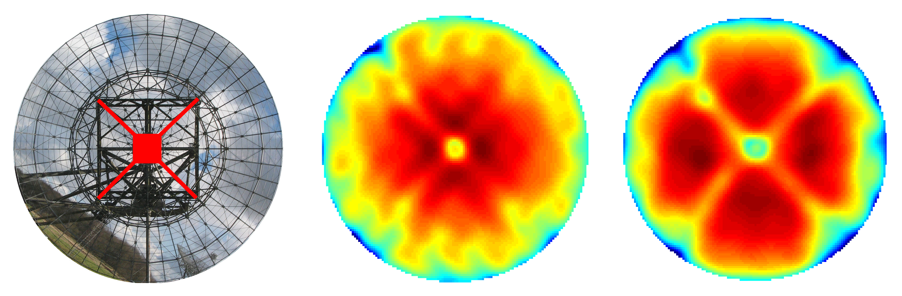
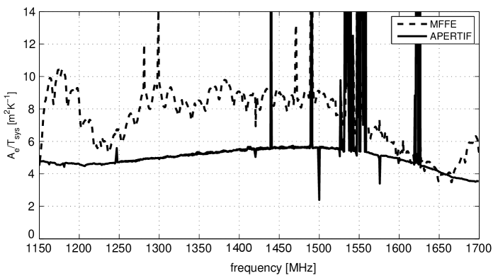
 المقاسة بدلالة التردد للحزمة المركبة المركزية في Apertif وللواجهة الأمامية السابقة لـ WSRT قبل Apertif (MFFE).
المقاسة بدلالة التردد للحزمة المركبة المركزية في Apertif وللواجهة الأمامية السابقة لـ WSRT قبل Apertif (MFFE).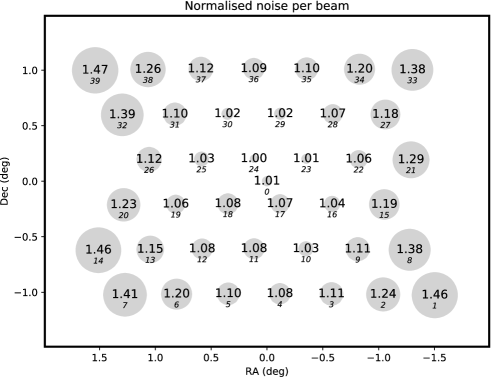
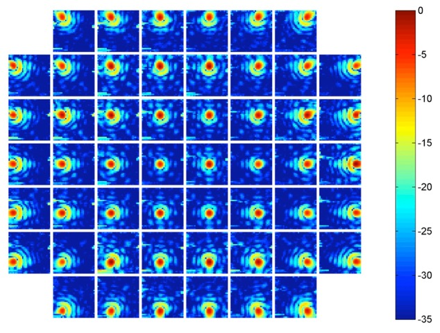
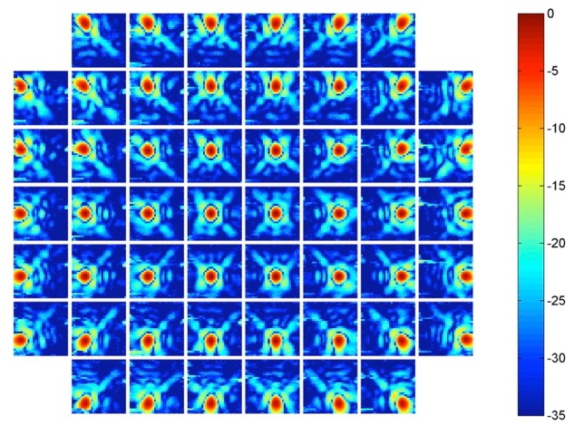
 نفسها على السماء ويعرض الحزمة الأولية لعنصر معين. يميناً: استجابة الحزم المركبة المشكلة في الاتجاهات نفسها لحزم العناصر. لاحظ التحسن الكبير في أشكال الحزم مقارنة بحزم العناصر. وقد استُخدمت مقاييس الألوان نفسها في الشكلين. وهذا يجعل من السهل رؤية أن مستوى الفصوص الجانبية في الحزمة المركبة المحسنة أدنى بكثير منه في حزم العناصر.
نفسها على السماء ويعرض الحزمة الأولية لعنصر معين. يميناً: استجابة الحزم المركبة المشكلة في الاتجاهات نفسها لحزم العناصر. لاحظ التحسن الكبير في أشكال الحزم مقارنة بحزم العناصر. وقد استُخدمت مقاييس الألوان نفسها في الشكلين. وهذا يجعل من السهل رؤية أن مستوى الفصوص الجانبية في الحزمة المركبة المحسنة أدنى بكثير منه في حزم العناصر.12.2 SEFD وضجيج الصورة
يعرض الشكل 37  المقاسة بدلالة التردد للحزمة المركبة المركزية في Apertif ويقارنها بتلك الخاصة بـ WSRT القديم. ويبين ذلك أن في Apertif أخفض بنحو 35%، مع اعتماد ما على التردد.
وعلى الرغم من أن كفاءة فتحة Apertif أفضل بنسبة 50% من كفاءة WSRT قبل Apertif، فإن درجة حرارة نظامه أعلى بنحو عامل 2.3. ويرجع ذلك أساساً إلى أن مضخمات LNA في Apertif غير مبردة، وإلى أنه كان لا بد من إدخال مرشح قبل LNA لقمع نواتج التضمين البيني الناجمة عن RFI قوي خارج النطاق، مما أدى إلى زيادة في قدرها 10 K. ويبين الشكل 37 أيضاً أن سلوك
المقاسة بدلالة التردد للحزمة المركبة المركزية في Apertif ويقارنها بتلك الخاصة بـ WSRT القديم. ويبين ذلك أن في Apertif أخفض بنحو 35%، مع اعتماد ما على التردد.
وعلى الرغم من أن كفاءة فتحة Apertif أفضل بنسبة 50% من كفاءة WSRT قبل Apertif، فإن درجة حرارة نظامه أعلى بنحو عامل 2.3. ويرجع ذلك أساساً إلى أن مضخمات LNA في Apertif غير مبردة، وإلى أنه كان لا بد من إدخال مرشح قبل LNA لقمع نواتج التضمين البيني الناجمة عن RFI قوي خارج النطاق، مما أدى إلى زيادة في قدرها 10 K. ويبين الشكل 37 أيضاً أن سلوك  في Apertif دالة ناعمة في التردد، بينما في WSRT قبل Apertif يتغير بقوة بنمط منتظم إلى حد ما ذي نتوءات متباعدة 17 MHz. وتنجم هذه النتوءات عن موجات واقفة في الطبق كانت تؤرق WSRT قبل Apertif، وهي غائبة في Apertif (انظر القسم 12.9).
في Apertif دالة ناعمة في التردد، بينما في WSRT قبل Apertif يتغير بقوة بنمط منتظم إلى حد ما ذي نتوءات متباعدة 17 MHz. وتنجم هذه النتوءات عن موجات واقفة في الطبق كانت تؤرق WSRT قبل Apertif، وهي غائبة في Apertif (انظر القسم 12.9).
تعتمد قيم SEFD المقاسة للحزم المركبة المختلفة، كما هو متوقع، على موقعها ضمن مجال الرؤية الكلي لـ Apertif، وإن كان التغير متواضعاً جداً داخل 2 المركزي من مجال الرؤية (الشكل 38). وتبلغ SEFD المقاسة للحزمة المركزية نحو 560 Jy، وهي أعلى بنسبة
المركزي من مجال الرؤية (الشكل 38). وتبلغ SEFD المقاسة للحزمة المركزية نحو 560 Jy، وهي أعلى بنسبة  7% من القيمة الاسمية. أما الحزم الأخرى داخل 2 المركزي فلها SEFD أعلى بما لا يزيد على 10%. وخارج هذه المنطقة المركزية، تزداد SEFD بشدة مع الابتعاد عن الحزمة المركزية، إذ تبلغ SEFD للحزم الأبعد عن مركز الحقل نحو 850 Jy. ويرجع ذلك إلى انخفاض كفاءة الفتحة لهذه الحزم لأن عدداً محدوداً فقط من عناصر PAF يمكن استخدامه لتشكيل الحزمة.
7% من القيمة الاسمية. أما الحزم الأخرى داخل 2 المركزي فلها SEFD أعلى بما لا يزيد على 10%. وخارج هذه المنطقة المركزية، تزداد SEFD بشدة مع الابتعاد عن الحزمة المركزية، إذ تبلغ SEFD للحزم الأبعد عن مركز الحقل نحو 850 Jy. ويرجع ذلك إلى انخفاض كفاءة الفتحة لهذه الحزم لأن عدداً محدوداً فقط من عناصر PAF يمكن استخدامه لتشكيل الحزمة.
عملياً، يكون الضجيج في صور Apertif أعلى بنحو 20% مما يُتوقع من الأداء النظري. فإلى جانب كون SEFD أعلى قليلاً من القيمة الاسمية، يجب في كل رصدة تعليم بعض البيانات بعلامات بسبب RFI، مما يؤدي إلى ضجيج صورة أعلى. وبالنسبة إلى أول إصدار بيانات من Apertif، كان نطاق الرصد المستخدم 1130 – 1430 MHz. ومع ذلك صُنعت منتجات بيانات مسح Apertif باستخدام الجزء العلوي فقط، وقدره 120 MHz، من نطاق الرصد، بسبب ظروف RFI في الجزء السفلي من نطاق Apertif الكامل البالغ 300 MHz، ويرجع ذلك أساساً إلى أقمار الملاحة العالمية. وتبلغ أفضل صور المتصل ذات الوزن المنتظم مستوى ضجيج نحو 30 Jy beam-1، بينما يبلغ مستوى ضجيج صور الخطوط نحو 1.4 mJy beam-1 لاستبانة سرعة قدرها 7-8 km s-1 وباستخدام وزن Briggs مع robust = 0. وتستخدم الأرصاد المأخوذة بعد كانون الثاني/يناير 2021 إعداد تردد مختلفاً (1230 – 1530 MHz)، مما ينتج عنه جزء أكبر من نطاق الرصد خالٍ من RFI. والضجيج في صور المتصل اللاحقة هذه هو 20 – 25  Jy beam-1.
Jy beam-1.
12.3 نمط الحزمة ومجال الرؤية
يُعرض تخطيط الحزم المركبة البالغ عددها 40 في الشكل 25. وكما وصف Hess et al. (قيد الإعداد)، اختير هذا التخطيط للحصول على انتظام معقول للضجيج ضمن مجال رؤية رصدة واحدة بعد دمج صور الحزم المركبة الفردية في فسيفساء، مع تحسين حجم مجال الرؤية. وتبقى تغيرات الضجيج دون 20% في المنطقة المركزية . وتوضع تسع وثلاثون حزمة مركبة على شبكة سداسية بفصل 28 دقيقة قوسية في المطلع المستقيم و24 دقيقة قوسية في الميل. وإضافة إلى ذلك، توضع حزمة مركبة واحدة على المحور البصري للتلسكوب، وهو أمر ملائم لأغراض الاختبار. وفي رصدة واحدة، تُصوّر مساحة تقارب 35  3∘. أما في أرصاد المسح، التي تستخدم أرصاداً متداخلة متباعدة 2.8∘ في المطلع المستقيم و2.3∘ في الميل، فإنها تعطي مجال رؤية فعالاً قدره 5.25 deg2.
ويُعرض مثال لفسيفساء من رصدة Apertif واحدة في الشكل 4.
3∘. أما في أرصاد المسح، التي تستخدم أرصاداً متداخلة متباعدة 2.8∘ في المطلع المستقيم و2.3∘ في الميل، فإنها تعطي مجال رؤية فعالاً قدره 5.25 deg2.
ويُعرض مثال لفسيفساء من رصدة Apertif واحدة في الشكل 4.
12.4 سرعة المسح
تُعرّف سرعة المسح في التلسكوب الراديوي بأنها مقلوب الزمن اللازم لتصوير مساحة كبيرة من السماء حتى حد ضجيج معين. ولذلك فهي تتناسب مع SEFD، حيث تمثل عرض النطاق الكلي وتمثل  مجال الرؤية. وهذا يعني أن سرعة المسح في Apertif (SEFD = 560 Jy، 39 حزمة، MHz) تبلغ نحو 22 ضعف سرعة WSRT قبل Apertif (SEFD = 310 Jy، 1 حزمة، MHz). غير أن جزءاً مهماً من نطاق رصد Apertif غير صالح عملياً بسبب RFI قوي دون 1300 MHz. وبسبب هذا الفقد في عرض النطاق الناتج عن RFI، تكون سرعة المسح النسبية نحو 10 للبيانات المأخوذة قبل كانون الثاني/يناير 2021، و15 للأرصاد بعد ذلك التاريخ. ولذلك، وعلى الرغم من ارتفاع SEFD في Apertif وتأثير RFI، فإن الزيادة في سرعة المسح كبيرة.
مجال الرؤية. وهذا يعني أن سرعة المسح في Apertif (SEFD = 560 Jy، 39 حزمة، MHz) تبلغ نحو 22 ضعف سرعة WSRT قبل Apertif (SEFD = 310 Jy، 1 حزمة، MHz). غير أن جزءاً مهماً من نطاق رصد Apertif غير صالح عملياً بسبب RFI قوي دون 1300 MHz. وبسبب هذا الفقد في عرض النطاق الناتج عن RFI، تكون سرعة المسح النسبية نحو 10 للبيانات المأخوذة قبل كانون الثاني/يناير 2021، و15 للأرصاد بعد ذلك التاريخ. ولذلك، وعلى الرغم من ارتفاع SEFD في Apertif وتأثير RFI، فإن الزيادة في سرعة المسح كبيرة.
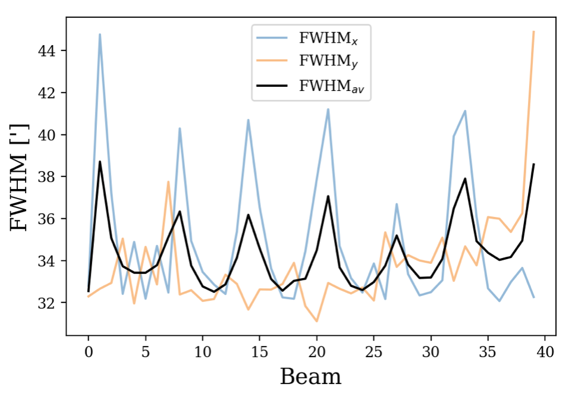
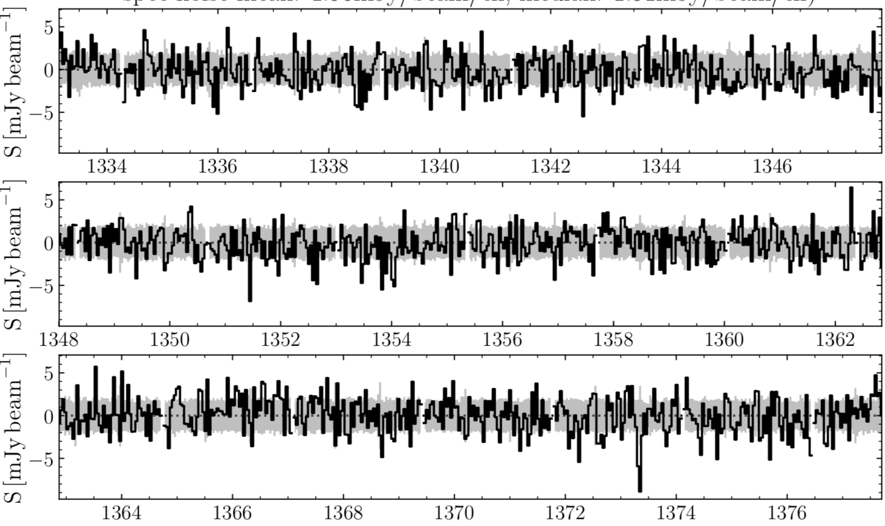
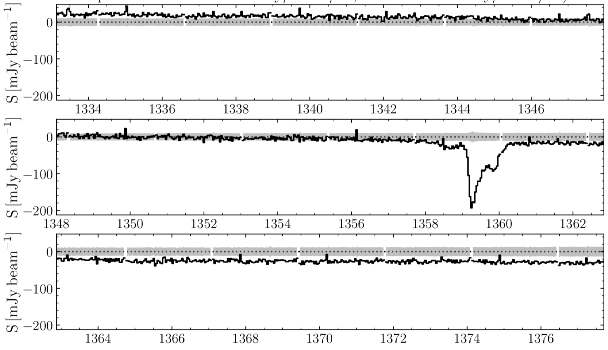
 20 mJy، بينما تبلغ كثافة فيض المصدر على اليمين
20 mJy، بينما تبلغ كثافة فيض المصدر على اليمين  2900 mJy. يمثل المحور الأفقي التردد الذي يغطيه المكعب المناظر. وفي كلا الطيفين يُكشف امتصاص H i منزاح إلى الأحمر. ونظراً إلى كثافة الفيض العالية للمصدر على اليمين، يوضح استواء الأطياف الجودة الجيدة لمعايرة ممر النطاق التي يمكن تحقيقها حتى للمصادر الراديوية الساطعة. أما الإزاحات في الأطياف بالنسبة إلى خط الشدة الصفرية فتعود إلى قيود في طرح المتصل في النسخة الحالية من خط معالجة التصوير.
2900 mJy. يمثل المحور الأفقي التردد الذي يغطيه المكعب المناظر. وفي كلا الطيفين يُكشف امتصاص H i منزاح إلى الأحمر. ونظراً إلى كثافة الفيض العالية للمصدر على اليمين، يوضح استواء الأطياف الجودة الجيدة لمعايرة ممر النطاق التي يمكن تحقيقها حتى للمصادر الراديوية الساطعة. أما الإزاحات في الأطياف بالنسبة إلى خط الشدة الصفرية فتعود إلى قيود في طرح المتصل في النسخة الحالية من خط معالجة التصوير.12.5 أشكال الحزم
12.5.1 حزم العناصر مقابل الحزم المركبة
يعرض اللوح الأيسر من الشكل 39 أنماط الحزم المقاسة على السماء، في استقطاب واحد، لجميع العناصر المفردة في PAF. ويغطي كل إطار نفسها على السماء ويبين كيف تتموضع الحزمة الأولية لعنصر معين على السماء. ومن الواضح أن كل عنصر حساس لمنطقة مختلفة قليلاً، لكنها معاً تغطي منطقة تقارب 8 deg2.
يمكن رؤية التشوهات البصرية الكبيرة بوضوح في أنماط الاستقبال للعناصر المفردة، ولا سيما لتلك القريبة من حافة PAF. غير أنه بما أن PAF يأخذ عينات كاملة من حقل الإشعاع في المستوى البؤري، يمكن جمع الإشارات من جميع العناصر في السعة والطور لمعادلة هذه التشوهات البصرية وتحسين شكل الحزمة المجمعة.
يعرض اللوح الأيمن في الشكل 39 نتيجة هذا التحسين للحزم المركبة المشكلة في اتجاه حزم العناصر. لاحظ أن جميع الصور في هذا الشكل لها مقياس الألوان نفسه. ويبين اللوح الأيمن بوضوح أن كثيراً من التشوهات البصرية قد أُزيل، وأن أشكال أنماط الحزم تتغير بدرجة أقل بكثير عبر مجال الرؤية. وتبقى بعض التشوهات، ولا سيما نحو حواف مجال الرؤية وزواياه. ولتصحيح هذه التشوهات، يحتاج المرء إلى عناصر تقع خارج مصفوفة PAF الفيزيائية في Apertif.
12.6 قياس الحزم المركبة
تُقاس أوزان الحزم عند بداية كل فترة رصد تصويرية (انظر القسم 7.9)، وتُستخدم عادةً لمدة 2–3 أسابيع متتالية. وتُشتق أشكال الحزم المركبة تجريبياً بطريقتين منفصلتين: مسوحات انجرافية عبر مصدر ساطع، وبمقارنة فيوض المتصل للمصادر في صور متصل Apertif مع تلك من NVSS باستخدام تقنية نمذجة سيرورة غاوسية.
بالطريقة الأولى، تُنتج خرائط الحزم من مسوحات انجرافية تُجرى دورياً على Cygnus A (ويُستخدم Cassiopeia A أحياناً). وأثناء قياس المسح الانجرافي، يكون PAF في موضع ثابت على السماء وينجرف Cygnus A عبر مجال الرؤية. ويُستخدم تغير سعات الترابط الذاتي أثناء قياسات المسح الانجرافي لإعادة بناء استجابة الحزمة المركبة (Dénes et al., قيد الإعداد). ثم يُكرر ذلك 31 مرات لتغطية مساحة كافية تسمح بقياس جميع حزم Apertif البالغ عددها 40.
في النهج الثاني، تُستخدم تقنية انحدار سيرورة غاوسية لإعادة بناء استجابة الحزمة الأولية (Kutkin et al. قيد الإعداد). وتُقارن فيوض المتصل لمصادر في صور Apertif لحزمة مركبة معينة بقيم فيض NVSS. وتوافق نسبة فيض Apertif إلى فيض NVSS عبر مجال الرؤية استجابة الحزمة الأولية.
يجد النهجان أشكالاً متسقة للحزم المركبة. ويعرض الشكل 40 أحجام الحزم كما قيست بطريقة المسح الانجرافي. ويظهر لا تناظر الحزم الواقعة عند حافة الحقل بوضوح في هذا المخطط.
للنهجين نقاط قوة وضعف مختلفة. توفر منهجية المسح الانجرافي معلومات ترددية واستقطابية عن شكل الحزمة المركبة، إضافة إلى قياس الشكل لكل طبق WSRT. غير أن هذا النهج قد يعاني من كشف مصادر أخرى غير مصدر المعاير الرئيس أيضاً، ولا سيما عند حواف الحزمة الأولية. كما أنه مستهلك زمنياً من حيث الرصد، مما يؤدي إلى قياسات تُجرى على نحو غير متكرر. أما نهج انحدار السيرورة الغاوسية فيستخدم بيانات قائمة، ويمكن تنقيحه لتوفير أشكال على مدى زمني ضيق، ويعوض أي إزاحة في مقياس الفيض بين صور متصل Apertif وNVSS. غير أن هذه الطريقة لا تقدم معلومات عن اعتماد الحزمة على التردد أو الاستقطاب، والقياس متوسط عبر جميع الأطباق.
بالنسبة إلى أول إصدار بيانات من Apertif، أُفرج عن صور الحزمة الأولية القائمة على طريقة انحدار السيرورة الغاوسية، مع معلومات التحجيم الترددي من المسوحات الانجرافية. ويُحفز هذا الاختيار في Adams et al. (قيد الإعداد)، إلى جانب نظرة شاملة إلى أثره في فيوض المتصل.
12.7 الاستقطاب
يبلغ ضجيج الصورة لمكعبات Stokes Q وU ذات استبانة ترددية 0.78125 MHz (Adebahr et al. قيد الإعداد) Jy/beam لكل قناة، مما يؤدي إلى ضجيج صورة نهائي بعد RM-Synthesis (Brentjens & de Bruyn 2005) للبيانات ذات عرض نطاق كلي 150 MHz قدره Jy/beam في صور الشدة المستقطبة. وهذا أقل قليلاً من الضجيج المتوقع من متصل Stokes I، الذي يكون عادةً أعلى بمقدار  . وبما أن كثافات المصادر في الاستقطاب أدنى عموماً والإصدار أخفت، فإن الصور الناتجة أقل تأثراً بالتباس الفصوص الجانبية وآثار الصور.
. وبما أن كثافات المصادر في الاستقطاب أدنى عموماً والإصدار أخفت، فإن الصور الناتجة أقل تأثراً بالتباس الفصوص الجانبية وآثار الصور.
يمكن للتسرب من إصدار القدرة الكلية أن يسبب التباساً كبيراً في الإصدار في Stokes Q وU وV. ولتحديد التسرب الآلي استخدمنا استراتيجيتين مختلفتين. بالنسبة إلى المغذيات الخطية، يرتبط التسرب الآلي في Stokes Q غالباً مباشرةً بـ Stokes I، بينما يرتبط التسرب إلى Stokes U بـ Stokes V. وبما أن مصادر عدة داخل حزمة Apertif مستقطبة خطياً فيزيائياً، يصعب فصل التسرب الآلي عن الاستقطاب الفيزيائي. وللوصول إلى تسرب Stokes Q استخدمنا المسوحات الانجرافية المأخوذة لتحديد شكل الحزم المركبة. وهنا يقابل الفرق في قياسات XX وYY مباشرةً Stokes Q. وتوجد تسربات من رتبة 0.001 عند مراكز الحزم و0.02 على مسافة 0.5 deg من مراكز الحزم. وبالنسبة إلى حزم الحافة، يمكن أن يكون التسرب أعلى قليلاً، حتى 0.1 للحزم 01 و39. ولتحليل تسرب Stokes U، حُللت صور Stokes V. وظهور المصادر في Stokes V نادر جداً، ولذلك يمكن افتراض أن أي إصدار في معامل ستوكس هذا هو تسرب. وبتحليل الاستقطاب الكسري لعدد كبير من المصادر في عدد كبير من الصور، حددنا اعتماد التسرب. ووجدت قيم لمراكز التوجيه، تزداد خطياً إلى قيم عند مسافات 0.5 deg، وهي مشابهة جداً لقيم Stokes Q.
12.8 تغطية uv والاستبانة
على مدى سنوات كثيرة، شارك WSRT في أرصاد VLBI، على سبيل المثال ضمن الشبكة الأوروبية لقياس التداخل ذي القاعدة الطويلة جداً، وهدف مرصد Westerbork هو الاستمرار في ذلك. وتُجرى كثير من أرصاد VLBI هذه عند ترددات غير متاحة لـ Apertif. لذلك رُكب Apertif في اثني عشر طبقاً فقط من أطباق WSRT الأربعة عشر، مع إبقاء الهوائيين المتبقيين على الواجهات الأمامية متعددة الترددات القائمة كي يستطيع WSRT الاستمرار في تنفيذ أرصاد VLBI عند ترددات غير نطاق L. وبعد دراسة موسعة للخيارات المختلفة للهوائيين اللذين لن يُضمّا إلى Apertif، تقرر استبعاد الطبقين الأكثر غرباً (RT0 وRT1). وعلى الرغم من أن ذلك يؤدي إلى فقد في الاستبانة المكانية بنحو 10%، فإن هذا الاختيار يخلق أقل عدد من الفجوات في تغطية  ، مما ينتج PSFs قذرة ذات أدنى مستويات فصوص جانبية وسطية. وبالإضافة إلى ذلك، بالنسبة إلى الصور المخففة إلى استبانة 30 ثانية قوسية (وهي كثيراً ما تستخدم في عمل الخطوط الطيفية)، لا توجد فجوة في تغطية
، مما ينتج PSFs قذرة ذات أدنى مستويات فصوص جانبية وسطية. وبالإضافة إلى ذلك، بالنسبة إلى الصور المخففة إلى استبانة 30 ثانية قوسية (وهي كثيراً ما تستخدم في عمل الخطوط الطيفية)، لا توجد فجوة في تغطية  ، ويكون أداء التصوير مشابهاً جداً لأداء WSRT قبل Apertif.
، ويكون أداء التصوير مشابهاً جداً لأداء WSRT قبل Apertif.
وقد تقرر أيضاً الحفاظ على تغطية منتظمة للمستوى uv الداخلي جداً، كما كان شائعاً في WSRT القديم (ما يسمى بتكوين maxi-short). وهذا يعني أن أقصر أربعة خطوط قاعدة هي 36 و54 و72 و90 m. ويضمن ذلك إمكان تصوير البنى الملساء ذات امتداد يصل إلى  10 دقائق قوسية جيداً باستخدام Apertif. وتُركب أربعة من أطباق Apertif الاثني عشر على سكك، ومن حيث المبدأ يمكن إعادة تهيئة المصفوفة. غير أن هذا الخيار لا يُستخدم في Apertif، على خلاف WSRT قبل Apertif. ويبلغ أطول خط قاعدة في المصفوفة 2412 m. وهذا يعطي في الصور ذات الوزن المنتظم استبانة مكانية قدرها نحو في المطلع المستقيم، وبسبب كون WSRT مصفوفة شرق-غرب، قدرها
10 دقائق قوسية جيداً باستخدام Apertif. وتُركب أربعة من أطباق Apertif الاثني عشر على سكك، ومن حيث المبدأ يمكن إعادة تهيئة المصفوفة. غير أن هذا الخيار لا يُستخدم في Apertif، على خلاف WSRT قبل Apertif. ويبلغ أطول خط قاعدة في المصفوفة 2412 m. وهذا يعطي في الصور ذات الوزن المنتظم استبانة مكانية قدرها نحو في المطلع المستقيم، وبسبب كون WSRT مصفوفة شرق-غرب، قدرها  في الميل عند ميل
في الميل عند ميل  .
.
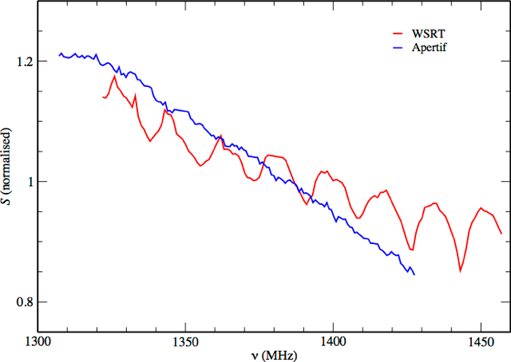
12.9 الموجات الواقفة
قبل تركيب Apertif على WSRT، كانت الصور الملتقطة بالتلسكوب تتأثر بشدة بالموجات الواقفة الناتجة من الانعكاسات بين قمة العاكس والواجهة الأمامية في بؤرة التلسكوب (Popping, A. & Braun, R. 2008). وعملياً تؤثر مثل هذه الموجات الواقفة في إضاءة الطبق بدلالة التردد. وفي حالة WSRT، تؤدي المسافة 8.75 m بين القمة والبؤرة الأولية إلى تغيرات في نمط الإضاءة بفترة 17 MHz. وأثر ذلك الرئيس في الصور هو أنه يعدل الطيف المرصود للمصادر خارج المحور. فبدلاً من أن يكون طيف هذه المصادر ملساً، تُظهر أطيافها تغيرات دورية (الشكل 42). وبالإضافة إلى ذلك، تعتمد هذه التغيرات على الاستقطاب. ويشكل ذلك تعقيداً هائلاً لمعايرة الأرصاد عريضة النطاق وتحليلها، إذ يصعب جداً أخذ هذه التضمينات الطيفية في الحسبان في المعايرة واختزال البيانات، مما يؤدي إلى أخطاء تصويرية مهمة جداً للمصادر خارج المحور. وتبين القياسات أن هذه التأثيرات السلبية غائبة في بيانات Apertif (الشكل 37). ويعرض الشكل 42 أثر ذلك في طيف مصدر قوي خارج المحور كما رُصد باستخدام WSRT قبل Apertif وباستخدام Apertif. ويظهر طيف ما قبل Apertif بوضوح التضمين الدوري الذي تسببه الموجات الواقفة في الطبق، وهي غائبة تماماً في بيانات Apertif. وتؤكد المحاكاة الكهرومغناطيسية أن غياب الموجات الواقفة في Apertif يرجع إلى انعكاس إشعاع أقل بكثير (بعامل 1000) بواسطة الواجهة الأمامية عائداً إلى العاكس، لأن PAF في Apertif يمتص طاقة أكثر من نظام القرن في WSRT. وبالإضافة إلى ذلك، يعمل PAF مشتتاً للكمية الصغيرة من الإشعاع المنعكس عائداً إلى الطبق، لأنه ينعكس على زاوية مجسمة أكبر بكثير.
12.10 ممر النطاق
نطاق الرصد في Apertif هو مزيج من 384 نطاقات فرعية، عرض كل منها 0.78125 MHz، ويضم كل نطاق فرعي 64 قناة، عرض كل قناة 12.2 kHz. وبما أن النطاقات الفرعية مأخوذة عينياً أخذًا حرجاً كما هو موصوف في القسم 7.7، يؤدي الطي إلى هبوط حاد في الاستجابة الكلية للقنوات عند حواف النطاق الفرعي، وهي القنوات 0 و1 و63 من كل نطاق فرعي. وفي الوقت الراهن تُحل هذه المسألة بوضع علامات على هذه القنوات الثلاث ذات الإشارة المنخفضة عند حواف النطاقات الفرعية.
يعد استقرار ممر النطاق أساسياً للمعايرة السليمة للبيانات. وتبلغ التغيرات في سعة ممر النطاق أثناء رصدة جزءاً من في المئة. وقد استُنتج ذلك من أرصاد طويلة (12 h) ومخصصة لمعايرات قوية، ومن مقارنة حلول ممر النطاق المستخرجة من أرصاد المعايرة القياسية في بداية الأرصاد التركيبية الكاملة ونهايتها.
ويمكن رؤية ممرات النطاق المعايرة جيدة السلوك في المثالين المعروضين في الشكل 41، الذي يبين طيفين مأخوذين عند موقع مصادر راديوية بعد طرح فيض المتصل ويعرض كشفاً لامتصاص H i. وللمصدرين كثافتا فيض مختلفتان جداً: mJy للمصدر في اللوح الأيسر، بينما المصدر على اليمين أقوى بكثير، إذ يبلغ  2900 mJy.
وتدل استواءات الأطياف على استقرار طيفي جيد، ولا سيما في حالة المصدر الراديوي القوي جداً على اليمين.
2900 mJy.
وتدل استواءات الأطياف على استقرار طيفي جيد، ولا سيما في حالة المصدر الراديوي القوي جداً على اليمين.
13 الاستنتاجات
قدمنا عرضاً عاماً لنظام Apertif، وهو ترقية WSRT بالمصفوفة الطورية: أهدافه العلمية، وتصميم النظام، وخصائصه الرئيسة. ويعد WSRT مع Apertif من أوائل التلسكوبات في العالم التي تستخدم بنجاح مغذيات المصفوفات الطورية في جميع عملياتها العلمية، وهو يحقق التوقعات. وقد بُرهن أن بيانات WSRT-Apertif يمكن معايرتها وتصويرها باستخدام خطوط معالجة آلية تقدم بيانات علمية جيدة الجودة.
Acknowledgements.
يستخدم هذا العمل بيانات من نظام Apertif المركب في تلسكوب Westerbork Synthesis Radio Telescope المملوك لـ ASTRON. وASTRON، معهد هولندا لعلم الفلك الراديوي، هو معهد تابع لمجلس البحوث الهولندي NWO (De Nederlandse Organisatie voor Wetenschappelijk Onderzoek). هذا العمل جزء من برنامج البحث ”Investeringen NWO-groot” بأرقام المشاريع 175.010.2005.015 و175.010.2009.012، وهي ممولة (جزئياً) من NWO. كان UniBoard نشاطاً بحثياً مشتركاً ضمن برنامج RadioNet FP7 الممول من EC، بموجب العقد رقم 227290، وقاده Joint Institute for VLBI ERIC (JIVE). ومُولت تحسينات اللوحة للإنتاج من Samenwerkingsverband Noord-Nederland (SNN). وقد تحقق دمج عدة UniBoards في بنية ميكانيكية واحدة من خلال مشروع ExBox الممول من NWO. تقر MV بالدعم المقدم من NWO عبر منحة Vici رقم 639.043.511. وتدعم EAKA برنامج WISE البحثي الممول من NWO. تلقى البحث الذي أدى إلى هذه النتائج تمويلاً من مجلس البحوث الأوروبي بموجب برنامج الإطار السابع للاتحاد الأوروبي (FP/2007-2013)، من خلال اتفاقية منحة ERC رقم 291531 (‘HIStoryNU’، PI: JMvdH)، ومنحة ERC المتقدمة RADIOLIFE-320745 (PI: RM)، و اتفاقية منحة ERC رقم 617199 (’ALERT’، PI: JvL). ويقر JvL كذلك بالتمويل من برنامج Vici البحثي ‘ARGO’ برقم المشروع 639.043.815، الممول من NWO. وتقر EP بالتمويل من زمالة NWO Veni. ودُعم SMS من National Aeronautics and Space Administration (NASA) بموجب المنحة رقم NNX17AL74G الصادرة عبر برنامج NNH16ZDA001N Astrophysics Data Analysis Program (ADAP). وتقر DV بالدعم من Netherlands eScience Center (NLeSC) بموجب المنحة ASDI.15.406References
- Arts et al. (2010) Arts, M., Ivashina, M., Iupikov, O., Bakker, L., & van den Brink, R. 2010, in Proceedings of the Fourth European Conference on Antennas and Propagation, 1–5
- Bannister et al. (2019) Bannister, K. W., Deller, A. T., Phillips, C., et al. 2019, Science, 365, 565
- Bannister et al. (2017) Bannister, K. W., Shannon, R. M., Macquart, J.-P., et al. 2017, ApJ, 841, L12
- Barnes et al. (2001) Barnes, D. G., Staveley-Smith, L., de Blok, W. J. G., et al. 2001, MNRAS, 322, 486
- Becker et al. (1994) Becker, R. H., White, R. L., & Helfand, D. J. 1994, in Astronomical Society of the Pacific Conference Series, Vol. 61, Astronomical Data Analysis Software and Systems III, ed. D. R. Crabtree, R. J. Hanisch, & J. Barnes, 165
- Blyth et al. (2015) Blyth, S., van der Hulst, T. M., Verheijen, M. A. W., et al. 2015, in Advancing Astrophysics with the Square Kilometre Array (AASKA14), 128
- Bock et al. (1999) Bock, D. C.-J., Large, M. I., & Sadler, E. M. 1999, AJ, 117, 1578
- Boersma et al. (2021) Boersma, O. M., van Leeuwen, J., Adams, E. A. K., et al. 2021, A&A, 650, A131
- Bonato et al. (2020) Bonato, M., Prandoni, I., De Zotti, G., et al. 2020, MNRAS, staa3218
- Braun et al. (2015) Braun, R., Bourke, T., Green, J. A., Keane, E., & Wagg, J. 2015, in Advancing Astrophysics with the Square Kilometre Array (AASKA14), 174
- Brentjens & de Bruyn (2005) Brentjens, M. A. & de Bruyn, A. G. 2005, A&A, 441, 1217
- Caleb et al. (2017) Caleb, M., Flynn, C., Bailes, M., et al. 2017, MNRAS, 468, 3746
- Caleb et al. (2016) Caleb, M., Flynn, C., Bailes, M., et al. 2016, MNRAS, 458, 718
- Catinella et al. (2018) Catinella, B., Saintonge, A., Janowiecki, S., et al. 2018, MNRAS, 476, 875
- Champion et al. (2016) Champion, D. J., Petroff, E., Kramer, M., et al. 2016, MNRAS, 460, L30
- CHIME/FRB Collaboration et al. (2018) CHIME/FRB Collaboration, Amiri, M., Bandura, K., et al. 2018, ApJ, 863, 48
- CHIME/FRB Collaboration et al. (2019) CHIME/FRB Collaboration, Andersen, B. C., Bandura, K., et al. 2019, ApJ, 885, L24
- Chowdhury et al. (2020) Chowdhury, A., Kanekar, N., & Chengalur, J. N. 2020, ApJ, 900, L30
- Condon et al. (1998) Condon, J. J., Cotton, W. D., Greisen, E. W., et al. 1998, AJ, 115, 1693
- Connor & van Leeuwen (2018) Connor, L. & van Leeuwen, J. 2018, AJ, 156, 256
- Connor et al. (2020) Connor, L., van Leeuwen, J., Oostrum, L. C., et al. 2020, MNRAS, 499, 4716
- de Gasperin et al. (2021) de Gasperin, F., Williams, W. L., Best, P., et al. 2021, arXiv e-prints, arXiv:2102.09238
- Fonseca et al. (2020) Fonseca, E., Andersen, B. C., Bhardwaj, M., et al. 2020, arXiv e-prints, arXiv:2001.03595
- Gardenier et al. (2021) Gardenier, D. W., Connor, L., van Leeuwen, J., Oostrum, L. C., & Petroff, E. 2021, A&A, 647, A30
- Gardenier et al. (2019) Gardenier, D. W., van Leeuwen, J., Connor, L., & Petroff, E. 2019, A&A, 632, A125
- Geréb et al. (2015) Geréb, K., Maccagni, F. M., Morganti, R., & Oosterloo, T. A. 2015, A&A, 575, A44
- Giovanelli & Haynes (2015) Giovanelli, R. & Haynes, M. P. 2015, ARA&A, 24, 1
- Giovanelli et al. (2013) Giovanelli, R., Haynes, M. P., Adams, E. A. K., et al. 2013, AJ, 146, 15
- Grant et al. (2010) Grant, J. K., Taylor, A. R., Stil, J. M., et al. 2010, ApJ, 714, 1689
- Gunst et al. (2014) Gunst, A., Szomoru, A., Schoonderbeek, G., et al. 2014, Experimental Astronomy, 37, 55
- Hales et al. (2014) Hales, C. A., Norris, R. P., Gaensler, B. M., et al. 2014, MNRAS, 441, 2555
- Haynes et al. (2018) Haynes, M. P., Giovanelli, R., Kent, B. R., et al. 2018, ApJ, 861, 49
- Heald, G. et al. (2011) Heald, G., Józsa, G., Serra, P., et al. 2011, A&A, 526, A118
- Hess et al. (2021) Hess, K. M., Roberts, H., Dénes, H., et al. 2021, A&A, 647, A193
- Holties et al. (2019) Holties, H., Vermaas, N., & de Goei, R. 2019, in Astronomical Data Analysis Software and Systems XXIX, https://www.adass2019.nl/conference-info/posters/pdf?table=poster&id=140
- Intema et al. (2016) Intema, H. T., Jagannathan, P., Mooley, K. P., & Frail, D. A. 2016, ArXiv e-prints [arXiv:1603.04368]
- Ivashina et al. (2002) Ivashina, M., Bregman, J., & van Ardenne, A. 2002, in 12th International Conference Microwave and Telecommunication Technology, 278–281
- Ivashina et al. (2004) Ivashina, M. V., bij de Vaate, J. G., Braun, R., & Bregman, J. D. 2004, Proc. SPIE, 5489, 1127
- Ivashina et al. (2011) Ivashina, M. V., Iupikov, O., Maaskant, R., van Cappellen, W. A., & Oosterloo, T. 2011, IEEE Transactions on Antennas and Propagation, 59, 1864
- Jeffs et al. (2008) Jeffs, B. D., Warnick, K. F., Landon, J., et al. 2008, IEEE Journal of Selected Topics in Signal Processing, 2, 635
- Keith et al. (2010) Keith, M. J., Jameson, A., van Straten, W., et al. 2010, MNRAS, 409, 619
- Koribalski et al. (2020) Koribalski, B. S., Staveley-Smith, L., Westmeier, T., et al. 2020, Ap&SS, 365, 118
- Lacy et al. (2020) Lacy, M., Baum, S. A., Chandler, C. J., et al. 2020, PASP, 132, 035001
- Law et al. (2018) Law, C. J., Bower, G. C., Burke-Spolaor, S., et al. 2018, ApJS, 236, 8
- Lawrence et al. (2017) Lawrence, E., Vander Wiel, S., Law, C., Burke Spolaor, S., & Bower, G. C. 2017, AJ, 154, 117
- Loose (2016) Loose, M. 2016, in Astronomical Data Analysis Software and Systems XXVI, http://www.adass2016.inaf.it/index.php/participants-all/4-poster/54-loose-marcel
- Lorimer et al. (2007) Lorimer, D. R., Bailes, M., McLaughlin, M. A., Narkevic, D. J., & Crawford, F. 2007, Science, 318, 777
- Maan & van Leeuwen (2017) Maan, Y. & van Leeuwen, J. 2017, Proc. URSI GASS [arXiv:1709.06104]
- Maccagni et al. (2017) Maccagni, F. M., Morganti, R., Oosterloo, T. A., Geréb, K., & Maddox, N. 2017, A&A, 604, A43
- Macquart et al. (2015) Macquart, J. P., Keane, E., Grainge, K., et al. 2015, in Advancing Astrophysics with the Square Kilometre Array (AASKA14), 55
- Mesa et al. (2002) Mesa, D., Baccigalupi, C., De Zotti, G., et al. 2002, A&A, 396, 463
- Michilli et al. (2018) Michilli, D., Seymour, A., Hessels, J. W. T., et al. 2018, Nature, 553, 182
- Morganti & Oosterloo (2018) Morganti, R. & Oosterloo, T. 2018, ARA&A, 26, 4
- Morganti et al. (2020) Morganti, R., Oosterloo, T. A., Brienza, M., et al. 2020, A&A, in press
- Morganti et al. (2005) Morganti, R., Tadhunter, C. N., & Oosterloo, T. A. 2005, A&A, 444, L9
- Norris (2017) Norris, R. P. 2017, Nature Astronomy, 1, 671
- Norris et al. (2011) Norris, R. P., Hopkins, A. M., Afonso, J., et al. 2011, PASA, 28, 215
- Oosterloo et al. (2020) Oosterloo, T. A., Vedantham, H. K., Kutkin, A. M., et al. 2020, A&A, 641, L4
- Oostrum (2020) Oostrum, L. C. 2020, DARC: Data Analysis of Real-time Candidates
- Oostrum et al. (2020) Oostrum, L. C., Maan, Y., van Leeuwen, J., et al. 2020, A&A, 635, A61
- Oppermann et al. (2012) Oppermann, N., Junklewitz, H., Robbers, G., et al. 2012, A&A, 542, A93
- Padovani (2016) Padovani, P. 2016, A&A Rev., 24, 13
- Pastor-Marazuela et al. (2021) Pastor-Marazuela, I., Connor, L., van Leeuwen, J., et al. 2021, Nature, 596, 505
- Petroff et al. (2015) Petroff, E., Bailes, M., Barr, E. D., et al. 2015, MNRAS, 447, 246
- Petroff et al. (2019) Petroff, E., Hessels, J. W. T., & Lorimer, D. R. 2019, A&A Rev., 27, 4
- Platts et al. (2019) Platts, E., Weltman, A., Walters, A., et al. 2019, Phys. Rep, 821, 1
- Popping, A. & Braun, R. (2008) Popping, A. & Braun, R. 2008, A&A, 479, 903
- Prandoni et al. (2018) Prandoni, I., Guglielmino, G., Morganti, R., et al. 2018, MNRAS, 481, 4548
- Prandoni & Seymour (2015) Prandoni, I. & Seymour, N. 2015, in Advancing Astrophysics with the Square Kilometre Array (AASKA14), 67
- Rengelink et al. (1997) Rengelink, R. B., Tang, Y., de Bruyn, A. G., et al. 1997, A&AS, 124, 259
- Ryan-Weber et al. (2008) Ryan-Weber, E. V., Begum, A., Oosterloo, T., et al. 2008, MNRAS, 384, 535
- Sancisi et al. (2008) Sancisi, R., Fraternali, F., Oosterloo, T., & van der Hulst, T. 2008, A&A Rev., 15, 189
- Schaubert et al. (2003) Schaubert, D. H., Boryssenko, A. O., van Ardenne, A., Bij de Vaate, J. G., & Craeye, C. 2003, in IEEE International Symposium on Phased Array Systems and Technology, 2003., 351–358
- Schaubert et al. (2000) Schaubert, D. H., Chio, T. ., & Holter, H. 2000, in IEEE Antennas and Propagation Society International Symposium. Transmitting Waves of Progress to the Next Millennium. 2000 Digest. Held in conjunction with: USNC/URSI National Radio Science Meeting (C, Vol. 1, 178–181 vol.1
- Schnitzeler et al. (2015) Schnitzeler, D. H. F. M., Banfield, J. K., & Lee, K. J. 2015, MNRAS, 450, 3579
- Schoonderbeek et al. (2020) Schoonderbeek, G., Hut, B., Kooistra, E., et al. 2020, Journal of Astronomical Instrumentation, 9, 2050007
- Sclocco et al. (2020) Sclocco, A., Heldens, S., & van Werkhoven, B. 2020, SoftwareX, 12, 100549
- Sclocco et al. (2016) Sclocco, A., van Leeuwen, J., Bal, H. E., & van Nieuwpoort, R. V. 2016, Astronomy and Computing, 14, 1
- Serra et al. (2012) Serra, P., Oosterloo, T., Morganti, R., et al. 2012, MNRAS, 422, 1835
- Shimwell et al. (2019) Shimwell, T. W., Tasse, C., Hardcastle, M. J., et al. 2019, A&A, 622, A1
- Siemion et al. (2012) Siemion, A. P. V., Bower, G. C., Foster, G., et al. 2012, ApJ, 744, 109
- Simons et al. (2006) Simons, J., bij de Vaate, J., Ivashina, M., et al. 2006, in 2006 First European Conference on Antennas and Propagation, 1–6
- Sokoloff et al. (1998) Sokoloff, D. D., Bykov, A. A., Shukurov, A., et al. 1998, MNRAS, 299, 189
- Spitler et al. (2016) Spitler, L. G., Scholz, P., Hessels, J. W. T., et al. 2016, Nature, 531, 202
- Stil et al. (2014) Stil, J. M., Keller, B. W., George, S. J., & Taylor, A. R. 2014, ApJ, 787, 99
- Strom et al. (2018) Strom, R., van Ardenne, A., & Torchinsky, S., eds. 2018, 50 years Westerbork Radio Observatory, A Continuing Journey to Discoveries and Innovations
- Subrahmanyan et al. (2010) Subrahmanyan, R., Ekers, R. D., Saripalli, L., & Sadler, E. M. 2010, MNRAS, 402, 2792
- Tan (1991) Tan, G. H. 1991, in Astronomical Society of the Pacific Conference Series, Vol. 19, IAU Colloq. 131: Radio Interferometry. Theory, Techniques, and Applications, ed. T. J. Cornwell & R. A. Perley, 42–46
- Tasse et al. (2021) Tasse, C., Shimwell, T., Hardcastle, M. J., et al. 2021, A&A, 648, A1
- Taylor et al. (2007) Taylor, A. R., Stil, J. M., Grant, J. K., et al. 2007, ApJ, 666, 201
- Taylor et al. (2009) Taylor, A. R., Stil, J. M., & Sunstrum, C. 2009, ApJ, 702, 1230
- Thornton et al. (2013) Thornton, D., Stappers, B., Bailes, M., et al. 2013, Science, 341, 53
- Tucci et al. (2004) Tucci, M., Martínez-González, E., Toffolatti, L., González-Nuevo, J., & De Zotti, G. 2004, MNRAS, 349, 1267
- van Cappellen & Bakker (2010) van Cappellen, W. A. & Bakker, L. 2010, in 2010 IEEE International Symposium on Phased Array Systems and Technology, 640–647
- van Cappellen & Ivashina (2011) van Cappellen, W. A. & Ivashina, M. V. 2011, in Proceedings of the 5th European Conference on Antennas and Propagation (EUCAP), 926–929
- van Cappellen et al. (2012) van Cappellen, W. A., Wijnholds, S. J., & Bakker, L. 2012, in 2012 6th European Conference on Antennas and Propagation (EUCAP), 634–637
- van der Hulst et al. (2001) van der Hulst, J. M., van Albada, T. S., & Sancisi, R. 2001, in Astronomical Society of the Pacific Conference Series, Vol. 240, GAS AND GALAXY EVOLUTION: A CONFERENCE IN HONOR OF THE 20TH ANNIVERSARY OF THE VLA, ed. J. E. Hibbard, M. P. Rupen, & J. H. van Gorkom, 451
- van Haarlem et al. (2013) van Haarlem, M. P., Wise, M. W., Gunst, A. W., et al. 2013, A&A, 556, A2
- van Leeuwen (2014) van Leeuwen, J. 2014, in The Third Hot-wiring the Transient Universe Workshop, ed. P. R. Wozniak, M. J. Graham, A. A. Mahabal, & R. Seaman, 79–79
- van Leeuwen et al. (2021) van Leeuwen, J., Kooistra, E., Oostrum, L. C., et al. 2021, A&A, in prep
- Warnick et al. (2012) Warnick, K. F., Ivashina, M. V., Wijnholds, S. J., & Maaskant, R. 2012, IEEE Transactions on Antennas and Propagation, 60, 184
- Wayth et al. (2015) Wayth, R. B., Lenc, E., Bell, M. E., et al. 2015, PASA, 32, e025
- Weem (2001) Weem, J. P. 2001, PhD thesis, University of Colorado
- Wijnholds et al. (2012) Wijnholds, S. J., Ivashina, M. V., Maaskant, R., & Warnick, K. F. 2012, IEEE Transactions on Antennas and Propagation, 60, 4688
- Wijnholds et al. (2011) Wijnholds, S. J., van Cappellen, W., & Ivashina, M. V. 2011, in 2011 XXXth URSI General Assembly and Scientific Symposium, 1–4